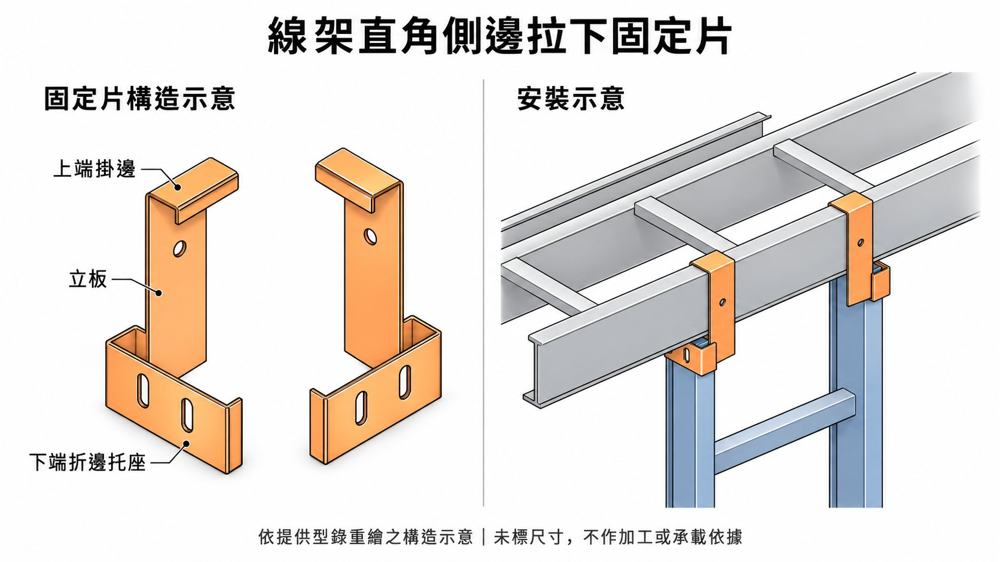

SCADA 電纜架
Revit 入門指南
SCADA 電纜橋架與機電。介面是 Revit 2025.5 繁體中文。正式畫電纜架（Cable Tray）、電管（Conduit）之前先把單位、連結、樓層、視圖設對；再依 2026-10-16 實作教材畫橋架、放吊架、上色、貼標籤。後段是樣板、族群、出圖，以及電氣、弱電、給排水、消防、空調的實務與品管。功能名稱第一次寫成「中文（English）」。
我該從哪裡開始？選一條路徑；完整章節仍在左側目錄。
開始之前0. 新建專案，還是接手專案？
不要一開啟 Revit 就開始畫電纜架。先判斷情境。
A. 新建 SCADA／MEP 專案 必做：判斷
- 本案用電氣樣板新建，單位公釐。公司若有指定樣板檔（.rte），優先用公司的。
- 公司樣板裡通常已有電纜架類型、視圖樣板（View Template）和命名規則。
- 沒有公司樣板時，用傳遞專案標準（Transfer Project Standards）從舊案子帶類型、篩選（Filters）、視圖樣板。路徑：管理 → 傳遞專案標準。
- 只有自己一個人建模，先不要開工作共用（Worksharing）。多人再看 Step 15。
B. 接手既有專案 必做：逐項檢查
- 連結模型（建築／結構／機電，是不是最新版）
- 樓層（Level）標高是否與圖面一致
- 網格（Grid）是否完整
- 共用座標（Shared Coordinates），見 Step 3
- 視圖樣板的命名規則
- 篩選會不會跟新規則衝突
- 電纜架類型是不是「含配件的電纜架」
- 階段（Phase）：既有（Existing）／新建（New Construction）
- 工作集（Worksets）分到哪一個
- 瀏覽器組織（Browser Organization）
- 既有明細表（Schedule）在統計什麼
模型對不齊或標高對不上時，先問專案負責人，不要猜著畫。畫完才發現座標錯，等於全部重接。
觀念BIM 觀念
BIM（Building Information Modeling，建築資訊模型）不是一套軟體，而是把建築、結構、機電放在同一個模型裡協調的作業方式，用來減少錯誤、縮短工期、降低成本，並把資料留到營運維護。Revit 負責建模；碰撞、算量、營運常常還要別的軟體，沒有單一軟體能從設計一路通到維護。軟體買得到，樣板、族群（Family）、參數和檢討順序才決定這個案子能不能用。本站較早章節若寫「族」，指的就是族群。
傳統出圖
- 建築、結構、機電各自畫、各自出圖。
- 圖畫完才疊在一起找衝突。
- 改圖若沒回到模型，下一版還是舊資料。
BIM 協調
- 三個專業各建模型，先在模型裡對柱、梁、板、管道間。
- 衝突先改模型，再從模型出圖。
- 尺寸、系統、數量留在元件上，竣工後還能拿去維護。
機電進場前，建築和結構要先當骨幹。常見順序：空間分類 → 建立結構模型 → 決定系統優先順序 → 管線衝突檢討 → 回饋結構與建築（例如鋼梁套管）→ 再調路徑。電纜架、電管、水管搶同一條梁下淨高時，就是這一段。一次只放一個系統，改完再放下一個，比五個系統一起拉清楚。
要先講清楚的五件事
- 值不值得：先能減少現場改、縮短協調，再談模型漂不漂亮。
- 上下游要接得上：設計、施工、設備廠商交出的族和圖，要能放進同一個樣板。
- 看整段生命週期：模型會從設計走到施工，再走到竣工與維護。
- 先在電腦裡走一遍：路徑、高程、碰撞在模型裡定下來，再進現場。
- 算總工時：前面多花的建模時間，要能換後面少改圖、少重工。
模型深度（LOD）
LOD 是模型做到多細的簡稱。契約若沒寫，大家會以為「有 3D」就是可以施工、可以算量。下面是常見五段，責任以一般建築案的分法舉例，實際以該案契約為準。
| 等級 | 模型裡有什麼 | 常用在 | 常由誰建 |
|---|---|---|---|
| LOD 100 | 量體 | 規劃 | 設計端 |
| LOD 200 | 大略數量、尺寸、位置 | 初步設計 | 設計端 |
| LOD 300 | 準確數量與尺寸，可做土建與機電整合 | 細部設計 | 設計端為主 |
| LOD 400 | 安裝與施作方法，機電與裝修整合 | 施工模型 | 施工端為主 |
| LOD 500 | 實際數量與位置，加上維護資訊 | 竣工模型 | 施工端 |
容易想錯的地方
下面四句在實務上都不成立。建模的人也要帶法規和現場經驗，不然模型不能拿來檢討。
- 3D 建模可以和 2D 設計同時做完。
- 3D 可以直接轉成施工圖。
- 建築模型和機電模型會一起完成。
- 模型裡的數量可以直接拿去驗收。
- 3D 要先建，才切得出 2D。沒畫的管、沒放的設備，圖和明細表都不會自己長出來。全部建成細緻實體，檔案會變大，出圖仍要靠視圖樣板和圖例。
- 建築模型還沒穩定時，機電先畫，柱位一改路徑就全部重接。
- 建模的人要帶著法規、工法和梁下淨高。只會拉管，模型不能拿來檢討。
- 同一外型、不同尺寸的設備，用尺寸參數做一個族。公開族庫裡很多是美規，台灣管徑與配件要換成自己的規格表，見電管尺寸與管路設定。
- 明細表只統計模型裡有的東西。損耗、沒畫的暗管、現場沒照模型做的改道，都要另外算。暗管若只示意，就不要把它當精確數量。
- 2D 圖例為了印得清楚，常常比實品大。閥件一放大就擠在一起，出圖前用該張視圖的比例看一次。
BIM 建置計畫書（BMP）
開工前先寫 BIM 建置計畫書（BIM Execution Plan，簡稱 BMP）。至少要講清楚這幾項，否則每個專業交出來的模型對不起來：
- 技術規格：用哪些軟體、模型怎麼拆、座標和單位誰說了算。
- 施工階段模型：構件要有材料名稱；管線尺寸規格要和實際施工相符；穿外牆的部分要建出來。
- 圖面檢討：誰主持、多久一次、衝突怎麼登錄。
- 檔案輸出：交換格式、命名、放在哪裡。
- 模型交付：排水、電力、消防等分項各交什麼。
- 碰撞分析報告：查哪些系統、容許間距、報告長什麼樣子。
- 設計變更：改了模型之後，圖和明細表誰負責回寫。
樣板裡先準備什麼
專案樣板（.rte）建議先放好：各系統的顏色與材料、平面／立面／3D 的視圖樣板、明細表欄位、常用族（電纜架、配電盤、燈具、衛浴、管配件）。材料顏色會跟著模型進 Navisworks，協調時才分得出系統。樣板存到自己可寫的資料夾，不要寫進 Revit 安裝目錄，見第九節。
設備族常用四種參數：
- 尺寸：同外型只改數字，不必每個規格重做一個族。
- 標籤：點下去就帶出編號或名稱。電纜架標籤見第七節。
- 明細：對數量表要的欄位。電纜架明細表見 Step 11。
- 來源：記下參考廠牌與型號，下次類似設備才找得到。
同一族可以用可見性設定把 3D 實體綁在詳細等級「細緻」、2D 圖例綁在「粗略」。平面看圖例，3D 與剖面看實體。
契約與竣工之後
服務範圍建議先寫成清單：各階段要建哪些元件、算不算數量、4D 工序何時開始與用什麼格式交、模型與 2D 圖不一致時以哪一份為準、軟硬體放在哪、報告書格式、BIM 會議多久一次。多軟體交換時，Navisworks 檔是常見的協調格式。自己匯出的是 NWC，對方整合成 NWD 再發佈；和 Revit 干涉檢查的差別見干涉檢查與 Navisworks。
竣工模型若參數齊，可以接到維護：保養排程、設備清單、手冊、2D 竣工圖、3D 導覽。那是生命週期的用法。本站往下的步驟仍是把 SCADA 電纜架與電管先建對。
介面Revit 介面
下面六區是打開 Revit 2025.5 繁體中文之後，畫電纜架、電管、水管時會一直用到的位置。舊講義若寫「視圖檢視控制列」，就是左下角的視圖控制列；「選取控制列」是底列那些選取開關。
- 快速存取工具列
- 視窗最上方那一排小圖示。儲存和復原放這裡，比進頁籤快。
- 頁籤
- 電纜架、電管在「系統 → 電氣」。水管在「系統 → 管」（快捷鍵
PI）。連結在「插入」。標籤在「標註」。干涉檢查在「協同合作」。樣板、單位、MEP 設定在「管理」。 - 性質面板
- 選到元件後改類型、偏移、系統類型、直徑。類型級的設定（配件、佈線偏好、製造商）走「編輯類型」（Edit Type）。
- 專案瀏覽器
- 視圖、圖紙、族、明細表都從這裡開。管類型、管系統類型也可以在「族」底下複製改名。
- 視圖控制列
- 繪圖區左下角。詳細等級（Detail Level）選粗略時，管是單線；選細緻才看得到雙線與部分配件。視覺型式（Visual Style）要看表面填滿時用塗彩或一致色彩，見 Step 8。
- 狀態列的選取控制
- 最底下一列。連結的建築、CAD 底圖、釘選元件預設常常點不到，要先打開對應的選取開關，才能對齊或移動。
畫管或電纜架時，頁籤正下方還會出現選項列（Options Bar）：寬度、高度、直徑、中間高程、斜度。電纜架的中間高程、水管的斜度都在這裡改，不在性質面板的同一個欄位。
四種檔案
| 副檔名 | 是什麼 | 拿來做 |
|---|---|---|
.rvt | 專案（Project） | 這一案的模型。日常存檔就是它 |
.rte | 專案樣板（Project Template） | 新專案的起點。單位、系統、視圖樣板放這裡。見專案樣板 |
.rfa | 族群（Family） | 門、設備、標籤、吊架。用插入 → 載入族群（Load Family）放進專案 |
.rft | 族群樣板（Family Template） | 做新族群時選的樣板，例如公制門、公制通用模型 |
2025 繁中介面與說明文件用「族群」。本站較早步驟若寫「族」「載入族」「族類型」，指的是同一件事：族群、載入族群、族群類型（Family Types）。
三種族群
- 系統族群（System Family）：牆、樓板、管、風管、電纜架。軟體預先定義，不能存成外部 .rfa，只能在專案裡複製類型。可載入族群怎麼存出去，見把專案裡的族群轉存成 .rfa。
- 可載入族群（Loadable Family）：門窗、衛工裝置、配電盤、標籤。在 .rfa 裡做好，再載入專案。最常自己改的是這一種。
- 內建族群（In-Place Family）：只活在這個專案，不能拿到別的檔用。留給極少見、不會重複的特殊元件。能做成可載入族群就不要用內建。
類型參數與實例參數
類型參數（Type Parameter）一改，這個類型的每一個實體都跟著變，例如某一號電纜架的預設配件。實例參數（Instance Parameter）只改你選到的那一個，例如這一段的偏移、備註。不確定時先看性質面板：在「編輯類型」裡面的是類型參數，直接露在性質面板上的多半是實例參數。
連結與匯入
連結（Link）像外部參考，原檔更新後可以重新載入。匯入（Import）像把圖吃進這個檔，之後不會跟著原檔走。建築、結構、CAD 底圖用連結，連上之後用釘選（Pin）固定。對照表在 Step 2。
樣板專案樣板與起始設定
樣板決定新檔一打開就有哪些單位、系統、視圖和圖紙。SCADA 電纜架案用電氣樣板；公司有指定的 .rte 就用公司的，見第 0 節。沒有公司樣板時，用傳遞專案標準從舊案子帶類型與篩選，不要每次從空白重做。
MEP 內建樣板
繁中公制內容通常有四份起點。開啟專案對話框裡看得到的中文名稱如下；英文檔名常含 Mechanical、Electrical、Plumbing、Systems 與 Metric，是否多一段語系標記，以對話框為準，不要猜安裝目錄。
| 開啟時選 | 適合 |
|---|---|
| 機械樣板 | 空調、風管、冰水 |
| 電氣樣板 | 動力、照明、電纜架、電管。本站 SCADA 案用這個 |
| 配管樣板 | 給排水、衛生 |
| 系統樣板（協調） | 多個專業放在同一個檔裡協調 |
公開樣板裡通常先統一什麼
公開的建築設計樣板，目的是讓不同單位出圖長得一樣。手冊裡會先定這些，再談建模：
- 專案資訊、專案參數、專案單位
- 起始視圖與標高環境
- 尺寸標註、文字、線型與線寬
- 物件型式（Object Styles）
- 視圖樣板、圖紙、明細表
出圖標準的做法見圖紙與出圖。視圖樣板的點法見 Step 7。
新檔先做的三件事
- 單位：管理 → 專案單位（Project Units），長度設公釐。完整設定與驗收見 Step 1。
- 樓層：建築 → 樓層（Level）拉出標高，再到專案瀏覽器把名稱改成和建築一致，例如 1F。電纜架高程掛在樓層上，見 Step 4。
- 看得到：平面的視圖範圍（View Range）要把切割平面拉過要看的管和橋架。見 Step 6。
驗收：新檔的長度是公釐，樓層名稱和建築對得起來，工作平面的切割平面高於這一層的橋架。
分工機電系統分工
機電通常分成下面幾塊。本站主線是 SCADA 用的電纜架與電管，落在電力與弱電的路由；水管、風管、消防是同一棟樓裡要避開的其他系統。新建專案時，電氣用電氣樣板，給排水用給排水樣板，空調用機械樣板。多專業放在一起協調時，用系統樣板或把各模型連結進來，見 Step 2。
給排水
給水、排水、污水、通氣，以及消防給水。
空調
送風、回風、外氣、排氣、冰水、冷卻水。
電力
動力、照明、插座、電纜架、電管。
弱電
電信、網路、監視、門禁。SCADA 路由多半在這裡。
消防
警報、廣播、排煙、灑水。警報走電，灑水走管。
Revit 裡用系統類型把顏色和縮寫分開。下面是給排水、空調常用的簡寫，僅供類型命名，不是某一案的圖號。
| 簡寫 | 系統 | 在 Revit 裡從哪複製 |
|---|---|---|
| CW／HW | 家用冷水／家用熱水 | 管系統裡的家用冷水、家用熱水 |
| SP／WP／VP | 污水／廢水／通氣 | 衛生設備相關的管系統 |
| 灑水 | 濕式消防 | 濕式消防 |
| SA／RA／OA／EA | 送風／回風／外氣／排氣 | 風管系統的供氣、回氣、排氣 |
顏色設在系統類型的圖形取代和材料上。視圖裡還要依系統篩選時，用 Step 8，品類記得勾管、管配件、管附件，或電纜架與電管。各系統的法規、試壓、品管與介面，見側欄「機電實務與品管」。
01確認專案單位 必做
目的：電纜架、電管的寬度、高度、高程、偏移、彎曲半徑都依單位。單位錯，尺寸全錯。
操作位置：管理 → 設定 → 專案單位（Project Units），快捷鍵 UN
設定：長度（Length）＝公釐；面積（Area）＝平方公尺；角度（Angle）＝十進位度。
注意：寬度、高度、高程、偏移（Offset）、彎曲半徑（Bend Radius）和電管尺寸都讀這裡。單位若是英呎，輸入 300 會變成 300 英呎。
常見錯誤：用到英制樣板沒發現；只改長度、沒改角度。
驗收：畫一段 300 mm 寬的電纜架，性質（Properties）面板的寬度顯示 300，和畫面量測一致。
02連結建築、結構、機電模型 必做
目的：橋架要避開梁柱、抓對高程，必須有建築和結構當背景。
本案點法：
- 插入 → 連結 Revit（Link Revit）→ 選
日期版建築模型（例：建築模型_YYYYMMDD.rvt）。 - 定位（Positioning）選「原點到原點」（Origin to Origin）→ 用釘選（Pin）固定。
- 日期版和無日期版重複報錯：管理 → 管理連結（Manage Links）→ 移除重複 → 選無日期版 →「重新載入自…」（Reload From）指向最新日期版。
- CAD 底圖：插入 → 連結 CAD（Link CAD）。手動選單位、勾「僅目前視圖」（Current view only）→ 對齊柱網、樓梯間、管道間 → 釘選。用連結，不要用匯入（Import），原檔更新才會跟著更新。
專案若已經發佈過共用座標，定位改「自動 - 依共用座標」（Auto - By Shared Coordinates）。本案建築檔用原點到原點。還沒發佈座標時不要先選依共用座標。另一個常見選項是「自動 - 中心到中心」（Auto - Center to Center）。
| 連結 Revit | 連結 CAD | 匯入 CAD | |
|---|---|---|---|
| 來源 | .rvt | .dwg／.dxf | .dwg／.dxf |
| 關係 | 獨立檔，可重新載入 | 獨立檔，可重新載入 | 幾何被吃進本檔 |
| 更新 | 管理連結 → 重新載入（Reload） | 管理連結 → 重新載入 | 要重新匯入 |
| 檔案大小 | 較小 | 較小 | 本檔變大 |
| 何時用 | 建築／結構／機電背景 | 只有 CAD 圖時優先用這個 | 真的要把線變成本檔物件才用 |
管理連結裡的狀態應為已載入（Loaded），不是找不到（Not Found）或未載入（Unloaded）。
驗收：管理連結全部已載入，平面看得到牆、柱、梁。
03確認共用座標與位置 必做
目的：畫之前先確認連結模型真的對齊，不是看起來對。
至少看：1F、典型樓層、屋頂層、地下層。核對柱位、電梯、樓梯、機房、管道間、外牆線。
對不上就停。不要開始畫電纜架。
- 內部原點（Internal Origin）
- 檔案自己的原點，通常不用管。
- 專案基準點（Project Base Point）
- 這個專案認定的 0,0,0。
- 測量點（Survey Point）
- 對到真實測量座標，例如 TWD97。
- 共用座標（Shared Coordinates）
- 讓多個 Revit 檔對齊。要先發佈座標（Publish Coordinates）、再取得座標（Acquire Coordinates），之後連結才選「自動 - 依共用座標」。兩個指令在協同合作（Collaborate）頁籤。
常見錯誤：只看 3D 覺得有對到；地下層和屋頂最容易歪了沒人發現。本案約定用原點到原點，前提是建築檔的原點就是對齊基準。
驗收：至少 3 個樓層的柱網、電梯、管道間，誤差在公司 BIM 標準以內。
04確認樓層與網格 必做
目的：電纜架高程＝樓層＋偏移。樓層錯，整條橋架的樓層歸屬就錯。連結模型裡的樓層不是自己模型裡的樓層，名稱一樣也是兩個元素。
複製/監視（Copy/Monitor），本案點法：
- 協同合作 → 複製/監視 → 選取連結（Select Link）。
- 按複製（Copy）。立面選樓層線，平面選網格線，可勾「多個」（Multiple）。
- 模式裡的完成，以及工具上的完成，兩個完成都要按。
只把建築當背景、不跟著出同一套標高時，可以先不做。
1F 樓板完成面（FFL）＝ 0
電纜架高程＝ 2700 mm → 實際標高＝ 1F ＋ 2700 mm
吊架性質用「距離樓層的高程」（Elevation from Level）。電纜架選項列用「中間高程」（Middle Elevation）。
常見錯誤：拿連結樓層去設視圖範圍；樓板完成面和結構板厚搞混；沒做複製/監視，建築改標高沒人知道。
驗收：能說出這條橋架是哪個樓層、中間高程多少，而且樓層標高和建築一致或有對應。
05建立工作視圖 必做
目的：不要在出圖視圖上試畫。可見性一改，圖就壞了。
本案：視圖 → 平面視圖 → 樓板平面圖（Floor Plan） → 選樓層。命名例如 SCADA_樓層_Tray配置。清單是空白時，取消勾選「不要複製現有視圖」。
建議再留：WIP_SCADA_1F（工作中）、COORD_SCADA_1F（協調）、{3D}_SCADA_COORD（3D 協調）。出圖視圖另外留。
複製視圖：專案瀏覽器（Project Browser）的平面上按右鍵 → 複製視圖（Duplicate View）→ 複製（Duplicate）。要連標註一起複製才用「含細部設計複製」（Duplicate with Detailing）。
| 類型 | 用途 |
|---|---|
| 工作中（WIP） | 日常畫路由、試配件 |
| 協調（COORD） | 疊結構、機電、消防查碰撞 |
| 出圖（SHEET） | 比例和圖框固定，不拿來試畫 |
| 品質檢查（QA） | 高對比找問題，見 Step 13 |
驗收：至少一張工作平面、一張協調平面、一張 3D，名稱看得出用途。
06設定視圖範圍 必做
目的：有畫但平面看不到，本案第一個原因就是切割平面太低。
操作位置：平面空白處點一下 → 性質面板「範圍」→ 視圖範圍（View Range）→ 編輯…。性質面板不見按 Ctrl+1。數值被切掉時，把面板左邊界往左拖。
對話框有頂部（Top）、切割平面（Cut Plane）、底部（Bottom）、視景深度（View Depth）。每一列有關聯的樓層（Associated Level）和偏移（Offset），頂部也可以選上方樓層（Level Above）。
樓板完成面＝ 0，橋架／吊架＝ 2700～3000 mm
預設切割平面偏移＝ 1200 → 高過切割平面，平面不顯示
改成 3500（高於吊架頂、低於上一層樓）→ 套用 → 確定
電纜架和吊架高於切割平面時，樓板平面圖不會畫出來。先把切割平面拉過物件，再懷疑模型壞掉。樓板、坡道等少數品類另有規則；橋架和吊架以這條為準。完整排解見第六節。
驗收：切割平面偏移高於這段橋架的高程，平面看得到。
07建立視圖樣板 建議
目的：把「這張視圖顯示什麼」固定下來，多張視圖才一致。
操作位置：視圖 → 圖形 → 視圖樣板（View Templates）→ 從目前視圖建立樣板，或「管理視圖樣板」。
建議：VT_SCADA_ROUTING（日常路由）、VT_SCADA_COORD（協調）。
至少控制：視圖比例（Scale）、詳細等級（Detail Level）、領域（Discipline）、可見性/圖形取代（Visibility/Graphics）、Revit 連結、模型品類（Model Categories）、標註品類（Annotation Categories）、篩選。
性質面板「圖形」區有：視圖比例、詳細等級、可見性/圖形取代、領域、次領域（Sub-Discipline）。「識別資料」（Identity Data）區有視圖樣板。「範圍」區有裁剪視圖（Crop View）和視圖範圍。上方功能區的「圖形」面板，不等於性質裡的「圖形」區。
| 品類 | 建議 |
|---|---|
| 建築（連結或建築品類） | 半色調（Halftone） |
| 結構 | 可見，方便看碰撞 |
| 電纜架、電纜架配件 | 顯示 |
| 電管、電管配件 | 顯示 |
| 電氣設備 | 顯示 |
| 家具、植栽 | 關閉 |
| 風管、風管配件、風管附件 | 有放吊架就要開。吊架是風管附件 |
可見性/圖形取代整個是灰的，就是視圖樣板把可見性鎖住。改法見「VG 被樣板鎖住」。不要用暫時隱藏/隔離（Temporary Hide/Isolate）代替樣板，那只是暫時的。
領域選建築、電氣或協調時，圖面差在哪，見領域與次領域。把篩選顏色存進樣板時要勾哪些「包括」、平面和 3D 為什麼不能共用一個樣板，見上色存成視圖樣板。
驗收：至少一個樣板套在工作視圖上；電纜架或風管附件被關掉時，在樣板裡打開。
08篩選與 3D 上色 建議
教材第六節
目的：用規則上色。手動取代圖形（Override Graphics）只對當下選到的物件，新畫的不會跟上。右鍵「取代視圖中的圖形 → 依元素」（By Element）也不會寫進視圖樣板。要其他視圖同一套顏色，用本節的篩選，再存成樣板，見上色存成視圖樣板。篩選只存在這個檔案；別的檔要重建，或用管理 → 傳遞專案標準 → 勾「篩選」。
1. 建立篩選
VG→「篩選」分頁 →「編輯/新建…」。或走視圖 → 圖形 → 篩選（Filters）。- 左下新建 → 命名例如
SCADA→ 依規則篩選。 - 中間「品類」（Categories）：篩選清單選「電氣」→ 勾電纜架、電纜架配件。需要再勾電管、電管配件。品類沒勾，什麼都篩不到。
- 右邊篩選規則（Filter Rules）可留「(無)」，表示這些品類全部算進來。要分開 SCADA 和動力橋架時才加規則，例如「類型名稱 包含 SCADA」。
- 確定。
也可以再加 FILTER_SCADA_TRAY、FILTER_SCADA_CONDUIT、FILTER_EXISTING、FILTER_NEW。規則可用系統、備註（Comments）、類型、Route_ID、領域、狀態。參數沒填值時，篩選會像沒作用。
2. 套到視圖（建好不會自己出現）
- 該視圖
VG→「篩選」→「加入」→ 選SCADA→ 確定。 - 勾「啟用篩選」「可見性」。
- 「投影/表面」（Projection/Surface）：線設線色；樣式點「取代…」，前景和背景都選「<單色填滿>」（Solid Fill）並設顏色。
- 視圖套了樣板、
VG是灰的：改樣板的「V/G 取代篩選」，不是只改這一張。
可見性/圖形取代的分頁：模型品類、標註品類、分析模型品類、匯入的品類、篩選、Revit 連結。模型品類的欄位有投影/表面、切割（Cut）、半色調、詳細等級。
3. 只有線變色、表面沒變色
視覺型式（Visual Style）若是「隱藏線」（Hidden Line），不會畫表面填滿。左下角比例旁的立方體，改成「塗彩」（Shaded）或「一致色彩」（Consistent Colors）。
驗收：3D 裡符合品類的橋架表面有顏色。改回隱藏線時，填滿消失、線色還在，這是正常的。
09電纜架類型與配件 必做
目的：大量畫之前，彎頭、T 型、十字、異徑都要接得起來。電纜架沒有佈線偏好（Routing Preferences），跟水管、風管不同。配件在類型性質裡指定。
- 管理 → MEP 設定 → 電氣設定（Electrical Settings）→ 電纜架設定：設尺寸、平面標註樣式。
- 系統 → 電氣 → 電纜架（Cable Tray）→ 選梯式或槽式 → 編輯類型（Edit Type）。三種斷面的差別見電纜架型式。
- 類型選「含配件的電纜架」（Cable Tray with Fittings）。「不含配件的電纜架」（Cable Tray without Fittings）不會自動長彎頭。
- 「配件」欄指定：水平彎、垂直內彎、垂直外彎、T 型、十字、異徑、接頭。
- 彎曲半徑預設＝內寬。可在類型性質改倍數，或畫完點彎頭改半徑。
命名例：SCADA_LADDER_300x100、SCADA_LADDER_600x100。
不要只測直線。
- 直線段
- 水平彎
- T 型
- 十字
- 異徑
- 垂直上升
- 垂直下降
每一項看能不能生成、尺寸、接頭、高程、寬度是否相容。官方說明：繪製電纜架、變更彎曲半徑。
驗收：上面 7 項都畫過，能生成、尺寸正確、高程接得上。
外型電纜架型式
現場常見三種斷面。Revit 類型選擇器裡直接選得到的是梯式與槽式；實底若樣板沒有，用廠商提供的族，或在槽式類型上改外型。三種都一樣：沒有佈線偏好，彎頭與 T 型在類型性質指定。設定步驟見 Step 9，繪製見第四節。
實底式
底板封閉。防塵、保護較好，控制與弱電常考慮。散熱比梯型差。
梯型（梯式）
兩根側欄加橫檔。散熱、綁線、轉彎都方便，電力電纜常用。本站吊架教材對的是這一種。
槽式
有側板，底板可沖孔通風，介於實底和梯型之間。Revit 的槽式電纜架屬這一類。
命名把外型寫進去，例如 SCADA_LADDER_300x100。同一條路由不要混用看不出差異的類型，明細表才分得開。
10SCADA 專用參數 視公司流程而定
操作位置：管理 → 設定 → 共用參數（Shared Parameters）。只在這個案子用時，也可以用專案參數（Project Parameters）。
建議自己取的參數名稱（不是功能區指令）：SCADA_System、Route_ID、From、To、Area、Level、Drawing_No、Status、Remark。
兩種參數都可以進明細表、也可以做篩選。專案參數只在這個檔。共用參數有固定 GUID，可跨專案、可被標籤讀，之後對 AutoCAD 路由資料也用它。共用參數的 .txt 放在自己寫得進去的資料夾，不要放 Program Files。不確定權限就標【需確認權限】。
驗收：至少有 Route_ID 和 Status，性質面板填得到值。
11電纜架明細表 建議
操作位置：視圖 → 建立 → 明細表 → 明細表/數量（Schedule/Quantities） → 品類選電纜架。
建議名稱 SCADA_CABLE_TRAY_SCHEDULE。欄位：類型、寬度、高度、樓層、長度、高程或中間高程、Route_ID、From、To、Status。內建欄位顯示中文；自己加的參數用建立時的名稱。
明細表數字還不是數量清單（BOQ）。要再看有沒有畫兩次、配件長度算不算、直線被拆成幾段、單位一不一致。
驗收：明細表列出模型裡的電纜架，和性質面板一致。
123D 協調視圖 必做（多專業協調）
建議名稱 {3D}_SCADA_COORD。用 VG 只留建築、結構、電纜架、電纜架配件、電管、電管配件、電氣設備。要看吊架再加風管附件。
開 3D → 勾選剖面框（Section Box）→ 拖邊界縮小範圍。線顏色：電纜架、電纜架配件、電管、電管配件的「投影/表面 → 線」。碰撞用協同合作 → 干涉檢查（Interference Check）。左右選哪些品類、怎麼對連結檔、改完按哪裡重新整理，以及要交給別人的 NWC／NWD／NWF，見干涉檢查與 Navisworks。Revit 內建的干涉檢查不用另外安裝。
檢查穿梁、穿牆、穿樓板、撞風管、撞消防、撞其他橋架、空間和維修空間夠不夠。
這個建議名稱只用在本案的協調視圖。雲端檢視空白時，不要把視圖改名成 {3D} 當成解法，見3D 視圖在雲端檢視空白時的排查。
驗收：剖面框縮得到單一區域，畫面只剩要協調的品類。
13品質檢查視圖 建議
建議名稱 QA_SCADA。建築半色調、結構看得到、電纜架和電管高對比、設備可見。不要拿正式出圖視圖做檢查，避免高對比顏色留在出圖上。
驗收：QA_SCADA 的顯示和出圖視圖不同。
14瀏覽器組織 建議
操作位置：專案瀏覽器上按右鍵 → 瀏覽器組織（Browser Organization）。
建議依領域 → 用途（工作中／協調／出圖／品質檢查）→ 樓層。找 SCADA_樓層_Tray配置 不用翻完整份清單。
次領域（Sub-Discipline）可以自己打字，例如「SCADA電纜架」，瀏覽器會在領域底下再分一層資料夾。次領域不改圖面上的線和顏色。領域會改顯示方式，見領域與次領域。
驗收：視圖依用途分得開。
15工作共用與工作集 視公司流程而定
一個人建模不用開。兩人以上同時改同一個模型才需要。
操作位置：協同合作 → 協同合作（Collaborate，用來啟用工作共用）；上傳用與中央同步（Synchronize with Central）；只抓別人的更新用重新載入最新（Reload Latest）。
中央模型（Central Model）在共用位置。自己電腦上編輯的是本端模型（Local Model）。改完要放開借走的元件時用放棄（Relinquish）。
公司已經有中央模型時，不要另外建一個。開啟中央檔後建立新本端（Create New Local）。需要的是網路資料夾讀寫權限，不是系統管理員。不確定就標【需確認權限】。
驗收：能完成一次與中央同步，沒有未預期的衝突。
快速版二、起手 10 步
- 開正確、最新的模型
- 專案單位：長度＝公釐（
UN） - 檢查連結，並釘選
- 檢查位置（本案是原點到原點）
- 檢查樓層與網格，必要時複製/監視
- 建工作用的樓板平面圖
- 視圖範圍：切割平面高於橋架（本案約 3500）
- 套視圖樣板與篩選
- 測含配件的電纜架：彎頭、T 型、十字、異徑、垂直
- 再正式畫路由
畫大量路由之前三、建模檢查清單
勾選存在這台瀏覽器。吊架、篩選、標籤可以邊做邊勾。
交付範圍這次要畫哪些元件
先定範圍，再建模。同一條 SCADA 路由，細設只要路徑、尺寸與高程對；施工深化才需要吊架位置、拉線箱位置與配件。範圍沒講清楚，不是畫過頭（工時多、模型重），就是畫不夠（對方碰撞檢查看不到東西）。LOD 與契約見 BIM 觀念。
準備資料
- 契約或工作範圍書（SoW）的 BIM 交付要求，以及 BIM 建置計畫書（BMP）。
- 業主需求書裡的管線與共同管架原則、廠商型錄。
- 本次交付的階段：細設、施工圖、深化或竣工。
五種元件怎麼分
下表是常見做法，不是規範。實際以契約與 BMP 為準。
| 元件 | Revit 品類 | 細設常見做法 | 施工／深化常見做法 |
|---|---|---|---|
| 電纜架（Tray） | 電纜架、電纜架配件 | 畫：路徑、寬高、高程 | 畫：含彎頭、T 型等配件 |
| 電管 | 電管、電管配件 | 主幹與穿牆、穿樓板處才畫 | 畫到設備端，含配件 |
| 拉線箱 | 電管配件或電氣設備 | 只標位置，有尺寸依據才畫實體 | 畫實體，含進出線方向 |
| 獨立吊架（單一電纜架自己的梯型吊架） | 風管附件（見第五節） | 不畫，或只留示意 | 依契約，畫位置、高程、寬度 |
| 共同吊支架（多專業共用一組支撐） | 依族群而定 | 由管線綜合決定。SCADA 只提供自己的荷重與寬高 | 由負責管線綜合的一方畫；自己只確認不碰撞 |
依據分三級
每個要畫的元件、每個要填的數字，都要標依據等級：
| 等級 | 意思 | 怎麼處理 |
|---|---|---|
| 文件規定 | 契約、需求書、核定圖說明確寫了 | 記下文件名稱與條號或頁碼 |
| 參照 | 廠商型錄、其他案例、慣例 | 可先用，標明來源；核定後轉為規定或改掉 |
| 待確認 | 找不到依據 | 不要自己猜數字。記進問題清單，用暫時值並標註 |
操作步驟
- 建一張「交付範圍表」，每列一種元件。欄位：要不要畫、依據、依據等級、負責人、狀態。
- 對照契約與 BMP，逐列填。階段不同（細設／施工），同一元件的「要不要畫」可能不同。
- 待確認的項目另列問題清單，寫清楚誰要回答、什麼時候要。
- 範圍表放進 BMP 附件或專案文件，標版次與日期。範圍有變動就改版，不要口頭更新。
- 開始建模前，對照建模檢查清單。
常見失敗
- 細設就把吊架全放，之後路徑一改全部重做。
- 以為共同吊支架是自己的，結果尺寸與荷重沒人確認。
- 沒有依據的數字（例如箱體尺寸）被當成規定寫進模型。
完成檢查：範圍表每一列都有「畫／不畫」與依據等級；沒有任何「待確認」項被當成已確定；有問題清單。
教材第一節四、從連結建築到畫出電纜架
設定原因見 Step 2、4、6、9。下面是本案實際順序。
- 新專案：電氣樣板，單位公釐。
- 連結建築：插入 → 連結 Revit →
日期版建築模型（例：建築模型_YYYYMMDD.rvt），定位「原點到原點」→ 釘選。- 日期版／無日期版重複：管理 → 管理連結 → 移除重複 → 選無日期版 →「重新載入自…」指向最新日期版。
- 複製/監視：協同合作 → 複製/監視 → 選取連結 → 複製 → 立面選樓層線、平面選網格線（可勾「多個」）→ 兩個完成都要按。
- 平面視圖：視圖 → 平面視圖 → 樓板平面圖 → 選樓層。例如
SCADA_樓層_Tray配置。清單空白就取消「不要複製現有視圖」。 - 連結 CAD：插入 → 連結 CAD，手動選單位、勾「僅目前視圖」→ 對齊柱網、樓梯間、管道間 → 釘選。用連結，不要用匯入。
- 畫之前設定電纜架（最常卡關）：
- 管理 → MEP 設定 → 電氣設定 → 電纜架設定：尺寸、平面標註樣式。
- 選類型（梯式／槽式）→ 編輯類型 → 配件指定水平彎、垂直內彎、垂直外彎、T 型、十字、異徑、接頭。
- 選「含配件的電纜架」。電纜架沒有佈線偏好。
- 彎曲半徑預設＝內寬，可改倍數，或畫完再改彎頭半徑。
- 繪製：系統 → 電氣 → 電纜架 → 選項列設寬、高、中間高程 → 沿 CAD 綠線分段點。
- 垂直段：設起始高程 → 點位置 → 改結束高程 →「套用」。
- 傾斜段：先畫水平，再改兩端高程。
- 接不上：系統 → 電氣 → 電纜架配件，手動放彎頭或 T 型，旋轉、調寬度後拖去對齊。
- 檢查：剖面核對高程。3D 按
VG，把電纜架、電纜架配件、電管、電管配件的「投影/表面 → 線」上色（表面填滿見 Step 8）。協同合作 → 干涉檢查（品類、連結檔與 NWC 見干涉檢查）。平面看不到先看第六節，不要先重畫。
教材第二節五、梯型吊架（兩根吊桿＋橫擔）
- 交付範圍有寫吊架 → 照本節放置、陣列。
- 交付範圍沒寫，或寫待確認 → 先不放，記進問題清單。
- 吊架若是多專業共用的共同吊支架，由負責管線綜合的一方畫，不是用本節的獨立梯型吊架。
族庫：課程提供的機電元件庫\04_台灣專用元件族\13_固定工具\風管及電纜線架\
| 族 | 樣式 | 用途 |
|---|---|---|
| 吊架(角鐵).rfa（圓形／標準／矩形） | 兩根吊桿＋角鐵橫擔 | 本案用這個 |
| 吊架(槽鋼).rfa／吊架(槽鐵).rfa | 兩根吊桿＋槽鋼橫擔 | 較重的梯型吊架 |
| 吊架(四角管束).rfa、吊架(可調整管束).rfa | 單根吊桿＋管束 | 不是梯型，不要選 |
| 吊架(風管角鐵).rfa | 風管用 | 不要用在電纜架 |
這些族的品類是「風管附件」（Duct Accessories），不是電纜架配件。電氣樣板常把風管類關掉，吊架會跟著消失。
- 插入 → 載入族（Load Family）→
吊架(角鐵).rfa。 - 專案瀏覽器：風管附件 → 吊架(角鐵)，拖到橋架中心線。方向不對按空白鍵，橫擔要垂直橋架。
- 性質：「距離樓層的高程」＝橋架底（例 3000）。吊架寬度＝橋架寬＋餘量（400 寬填 500）。吊桿拉到樓板底或樑底。
- 剖面確認橫擔托住橋架底 → 修改頁籤「陣列」（Array），沿橋架每 1.5～2 m 一個。彎頭、T 型兩側和垂直段另外補。
教材第五節吊架間距（法規）
《用戶用電設備裝置規則》第 354～363 條（電纜架裝置）沒有直接規定吊架間距，只要求：
- 支撐間隔依電纜架荷重設計，要撐得住架子和電纜。
- 電纜從一個電纜架跨到另一個，或進入管槽、設備時，支撐點間隔 ≤ 1.8 m。
實務依廠商「容許跨距與荷重表」和設計圖，一般 1.5～2 m 一支。轉彎、T 型兩側、垂直段另外加。
教材第三節六、放了東西卻看不到
症狀：放吊架或畫風管後出現「已建立的元素在樓板平面圖……視圖中都沒有顯示……」，平面和 3D 都看不到。
本案兩個原因會一起出現：
- 切割平面太低。預設 1200，吊架和橋架在 2700～3000。
- 可見性/圖形取代把風管類關掉。電氣樣板的「1 - 照明」「動力」這一類視圖預設隱藏機械品類。吊架是風管附件，所以被藏起來。
- 平面空白處點一下，不要選到東西。
- 性質 → 範圍 → 視圖範圍 → 編輯… → 切割平面偏移改 3500 → 套用 → 確定。
V然後G→ 模型品類 → 勾選風管、風管定位、風管襯層、風管配件、風管附件、風管隔熱層，並確認電纜架、電纜架配件、電管、電管配件有勾。再看篩選分頁有沒有隱藏條件。- 性質「圖形」區的領域設「協調」。電氣會把牆柱畫成半色調，協調才是全彩、最完整，見領域與次領域。視圖樣板若有套用，改「<無>」或去改樣板（下一節）。
- 還是看不到：詳細等級改「細緻」。3D 再查剖面框、可見性/圖形取代、工作集。
已放但看不到：專案瀏覽器 → 族類型按右鍵 →「選取所有實體 → 在整個專案中」（Select All Instances → In Entire Project）→ 不要的按 Delete。
口訣：放了看不到 → 先看視圖範圍的切割平面 → 再看 VG 品類有沒有勾。性質面板：Ctrl+1。面板太窄就把左邊框往左拖。
問題 1 電纜架畫了但平面看不到
問題 2 電纜架接不起來
看寬度、高度、是不是含配件的類型、兩端高程有沒有微小落差、配件指定了沒有、角度配不配。接不上就改走系統 → 電氣 → 電纜架配件，手動放了再對齊。
問題 3 彎頭或 T 型不會自動產生
電纜架沒有佈線偏好。確認類型是「含配件的電纜架」，編輯類型的配件欄已指定水平彎、垂直內彎、垂直外彎、T 型、十字、異徑、接頭。寬度不同要有異徑。角度要是配件支援的，常見是 90° 和 45°。
問題 4 模型跟建築對不起來
先停工。檢查定位是不是原點到原點、有沒有誤選依共用座標、專案基準點或測量點有沒有被搬動。
問題 5 畫到後面模型超亂
視圖和類型都用預設名、沒有視圖樣板、顏色都靠手動取代、沒有瀏覽器組織、同一張視圖從草稿用到出圖。
教材第四節VG 整個是灰的、不能勾
原因：視圖套了視圖樣板，可見性被樣板鎖住。
- 方法 1（建議）：性質 → 識別資料 → 視圖樣板 → 點按鈕 →「V/G 取代模型」按「編輯…」→ 勾風管類品類 → 確定。同一張樣板的視圖會一起改。篩選上色則改「V/G 取代篩選」。
- 方法 2：視圖樣板改「<無>」，再用
VG自己勾。這張視圖之後不再跟樣板同步。
VG 變灰，只發生在下面的「綁定」。右鍵「套用樣板性質」不會鎖住 VG。
| 方式 | 做法 | 特性 |
|---|---|---|
| 套一次 | 專案瀏覽器對視圖按右鍵 → 套用樣板性質（Apply Template Properties）→ 選樣板。或視圖 → 圖形 → 視圖樣板 → 將樣板性質套用到目前視圖（Apply Template Properties to Current View）。 | 只複製當下的設定。性質「識別資料 → 視圖樣板」仍是 <無>。之後可以自己改 VG。樣板再更新，這張視圖不會同步。 |
| 綁定 | 性質「識別資料 → 視圖樣板」選樣板。 | 視圖和樣板連在一起。有勾「包括」的項目會變灰。樣板更新會同步。灰掉時用上面兩個方法。 |
上色要帶走哪些項目，見上色存成視圖樣板。
路由高程換算與跨樓層路由
延伸 Step 4 的「樓層加偏移」。補三件事：完成面與結構面差多少、橋架高程要看中心、底還是頂、橋架從 1F 升到 2F 時每個數字怎麼對。
準備資料
- 建築模型的樓層表：每層的完成面（FFL，Finished Floor Level）與結構面（SFL，Structural Floor Level）。
- 自己模型的樓層是建在 FFL 還是 SFL：看樓層性質，並跟建築方確認。
- 設計圖給的高程是「距結構面」還是「距完成面」。
以下數字是練習用，不是任何專案的值：
| 樓層 | FFL（絕對高程） | SFL | 備註 |
|---|---|---|---|
| 1F | +5200 mm | +5150 mm | 裝修層厚 50 mm |
| 2F | +9700 mm | +9650 mm | 層高（FFL 到 FFL）4500 mm |
名詞與公式
- 相對高程：相對該樓層的高程，Revit 性質面板填的是這個。
- 絕對高程：樓層高程加相對高程。樓層高程顯示的是相對專案基準點，還是測量點，看樓層性質的「高程基準」（Elevation Base）。兩邊對照時基準要一致。
- 電纜架性質面板有中間高程、底高程、頂高程（名稱以畫面為準）。選項列填的是中間高程。
橋架底 ＝ 中間高程 － 橋架高 ÷ 2橋架頂 ＝ 中間高程 ＋ 橋架高 ÷ 2絕對高程 ＝ 樓層高程 ＋ 相對高程吊架高程 ＝ 橋架底（第五節）樓層建在 FFL 時：距 FFL ＝ 距 SFL － 裝修層厚
案例：橋架從 1F 升到 2F
橋架 400 寬 × 100 高。設計要求：兩層水平段的中間高程都是距該層 FFL 2700 mm。
| 段 | 相對高程（中間） | 絕對高程（中間） | 底／頂（絕對） |
|---|---|---|---|
| 1F 水平段 | 2700 | 5200＋2700＝7900 | 7850／7950 |
| 垂直段（在 1F 平面畫） | 起 2700 → 止 7200 | 7900 → 12400 | — |
| 2F 水平段 | 2700 | 9700＋2700＝12400 | 12350／12450 |
垂直段結束高程是 2700＋4500（層高）＝7200，換成絕對高程剛好等於 2F 水平段的 12400。
- 在 1F 樓板平面圖畫 1F 水平段，選項列中間高程填 2700。
- 畫垂直段：起始高程 2700，點位置，結束高程改 7200，按「套用」（見第四節）。
- 切到 2F 樓板平面圖畫 2F 水平段，中間高程填 2700。不要在 1F 平面圖填 7200 把 2F 段畫完，樓層歸屬會錯，明細表依樓層排序就對不上。
- 垂直段兩端接彎頭。接不上時手動放電纜架配件，見第四節。
- 設計給的是「距結構面 3000」而自己的樓層在 FFL 時，先換算：3000 － 50 ＝ 2950，再填。
三方核對：平面、剖面、3D
| 視圖 | 做什麼 | 要看到什麼 |
|---|---|---|
| 平面 | 用電纜架標籤（第七節）或定點高程（Spot Elevation）看高程數字 | 水平位置對到 CAD 路由；數字等於上表 |
| 剖面 | 剖面穿過升降段，用尺寸標註量樓層線到橋架底 | 1F 段與 2F 段各距該層 FFL 2650；兩層 FFL 相距 4500 |
| 3D | 開剖面框，只看這一段 | 垂直段兩端都接上水平段、彎頭齊全，沒有斷點或警告 |
再用電纜架明細表（Step 11）確認樓層與中間高程欄位，三處數字要一致。
常見失敗
- 樓層建在 FFL 或 SFL 沒搞清楚，整條路由差一個裝修層厚。
- 把中心當成底：吊架高程差半個橋架高。
- 在 1F 平面圖用 7200 畫 2F 水平段：看起來高程對，樓層歸屬是錯的。
- 對照絕對高程時，一邊是專案基準點、一邊是測量點，差一個固定偏移。
- 設計圖與模型單位不同（m 與 mm）。
完成檢查：選一條升降段，平面、剖面、3D 與明細表四處的樓層、中間高程、底高程一致，而且能說出「這個值是距 FFL 還是距 SFL」。穿樓板位置與開口尺寸沒有依據時，標待確認，交給結構與建築確認。
箱體拉線箱、接線盒與 Tray 轉電管
這一節補上拉線箱、接線盒的放法，以及電纜架末端怎麼接到電管。目前專案沒有獨立的拉線箱教學；規範面的查核（連續彎頭數、箱體材質、檢修空間）不在這裡，以契約與施工規範為準。
準備資料
先弄清楚：Tray 與電管不能直接連
Revit 的電纜架與電管是兩套連接件，不能互相連接。常見路由是「電纜架走主幹 → 末端停在箱體或設備旁 → 拉線箱 → 電管 → 設備」。電纜架末端和箱體之間要保留多少間距，沒有依據就標待確認。
兩種箱體族群
| 項目 | 簡化箱體 | 有連接件的族群 |
|---|---|---|
| 內容 | 只有外形，沒有連接件 | 箱面有電管連接件 |
| 電管 | 不能自動接上，只能畫到箱面，容易留斷點 | 在連接件上右鍵「繪製電管」，自動接上 |
| 換電管尺寸 | 手動調整 | 隨電管走（視族群設計） |
| 適合 | 細設、示意：只要位置與外形 | 深化：要進出線位置與數量 |
| 品類 | 一般模型或電氣設備 | 電管配件或電氣設備（以族群設定為準） |
操作步驟
- 插入 → 載入族（Load Family），載入箱體族。
- 放置：電管配件族走系統 → 電氣 → 電管配件；電氣設備族走系統 → 電氣 → 電氣設備。或從專案瀏覽器拖進平面。
- 設高程：性質的「距離樓層的高程」。先看族群原點在哪（箱底、箱中心、背面），原點不同，同一個數字差半個箱高。放完用剖面確認，再依高程換算對。
- 旋轉：空白鍵，或修改 → 旋轉（
RO）。進線面朝向電纜架末端、出線面朝向設備。 - 確認進出線位置：選箱體，看連接件落在哪一面。位置不對，換族群類型，不要硬拖電管。
- 電纜架末端停在箱體旁，間距依設計或型錄；沒有依據標待確認。
- 畫電管：從連接件右鍵 → 繪製電管，類型與尺寸沿用電管尺寸。簡化箱體則把電管起點對到箱面中心，並在備註欄標「未接連接件」。
常見失敗
- 電管沒有真的接上連接件：選電管看箱體端有沒有連接標記，沒有就拖到連接件上重接。
- 族群原點在箱底，卻當成中心放：高程差半個箱高。
- 箱體放了看不到：品類被視圖關掉，見第六節。
- 箱體尺寸沒依據卻已填進模型：改回待確認，列入問題清單。
- 一面進出的電管數量超過箱面能容納的位置：箱體尺寸要回頭確認，不是電管硬塞。
完成檢查：平面、剖面、3D 三處的箱體位置與高程一致；每一條接箱體的電管都接在連接件上，沒有斷點警告；箱體數量在明細表裡能對上範圍表；所有沒有依據的尺寸與間距，都在問題清單裡標待確認。
教材第十節領域與次領域
一句話：領域（Discipline）決定這張視圖用哪個專業的方式顯示；次領域（Sub-Discipline）只是專案瀏覽器裡的分組標籤，不改圖面上的線和顏色。
兩個都在性質面板。可以存進視圖樣板，見上色存成視圖樣板。瀏覽器怎麼分組見 Step 14。
領域（性質 → 圖形 → 領域）
點視圖空白處，在性質面板「圖形」區選領域。2025 繁中清單是建築、結構、機械、電氣、衛工、協調。
| 領域 | 圖面怎麼變 |
|---|---|
| 建築（Architectural） | 各品類都顯示，不強制半色調。平面上的剖面、立面、圖說符號只留建築領域的。 |
| 結構（Structural） | 各品類都顯示，但非結構牆會隱藏。視圖符號只留結構的，而且預設會畫自動隱藏線。不要拿來當電纜架的日常平面。 |
| 機械（Mechanical）、電氣（Electrical）、衛工（Plumbing） | 牆、柱、樓板、門窗、家具等非機電品類自動變半色調（Halftone）。平面不顯示天花板。視圖符號只留和這個領域相同的那些。電纜架平面日常用電氣。 |
| 協調（Coordination） | 各品類照常、不變淡，各領域的剖面與立面符號都在。放了東西看起來被淡掉，或要跟建築做干涉檢查時改這個。 |
上表的「符號」是剖面、立面、圖說的視圖標籤（View Tag），不是貼在橋架上的標註。電纜架標籤靠標註與可見性，見第七節。電氣、機械、衛工還有一件容易誤判：視圖範圍裡的機電元件會畫在牆柱上面，不完全照切割平面的高低（衛工裝置除外）。橋架整段消失時，仍先查視圖範圍和第六節。
次領域（性質 → 識別資料 → 次領域）
- 可直接打字，例如「SCADA電纜架」「弱電」。沒有下拉清單。
- 不改變顏色、可見性、視圖範圍。
- 專案瀏覽器依領域分類時，視圖會排成「領域 → 次領域」資料夾。還沒分組：瀏覽器最上方「視圖」按右鍵 → 瀏覽器組織（Browser Organization），選依領域、次領域的分類。
電纜架視圖建議
- 日常平面：領域設電氣。牆、柱、樓板變半色調，橋架比較清楚。
- 要對建築或結構做干涉檢查，或畫面被淡掉、剖面符號不見：改協調。
- 次領域填「SCADA電纜架」，相關視圖收在同一資料夾。
- 領域和次領域存進視圖樣板，新視圖套用即可。
驗收：電纜架平面的領域是電氣或協調，次領域有填，專案瀏覽器看得到對應的分組。
教材第十一節把上色設定存成視圖樣板並套用
目的：可見性/圖形取代（Visibility/Graphics，快捷鍵 VG）和篩選（Filters）設好的顏色，存成視圖樣板（View Template）之後，其他同類型視圖一套就一樣。樣板控制哪些項目、VG 變灰時怎麼改，見 Step 7 與VG 被樣板鎖住。篩選怎麼建，見 Step 8。
從目前視圖建立樣板
- 開啟已經改好顏色的視圖。
- 視圖 → 圖形 → 視圖樣板 → 從目前視圖建立樣板（Create Template from Current View）。也可以在專案瀏覽器對該視圖按右鍵 → 從視圖建立視圖樣板。
- 命名，例如
SCADA電纜架_平面上色→ 確定。 - 在視圖樣板視窗確認這些項目有勾「包括」（Include）：V/G 取代模型（V/G Overrides Model）、V/G 取代篩選（V/G Overrides Filters）、視覺型式（Visual Style）、領域（Discipline）、視圖範圍（View Range）→ 確定。沒勾包括的項目，套一次時不會被複製過去，綁定時也不會變灰。
套到其他視圖
| 方式 | 做法 | 特性 |
|---|---|---|
| 套一次 | 專案瀏覽器對視圖按右鍵 → 套用樣板性質（Apply Template Properties）→ 選樣板。或視圖 → 圖形 → 視圖樣板 → 將樣板性質套用到目前視圖（Apply Template Properties to Current View）。 | 只複製當下的設定。性質「識別資料 → 視圖樣板」仍是 <無>。之後可以自己改 VG。樣板再更新，這張視圖不會同步。 |
| 綁定 | 性質「識別資料 → 視圖樣板」選樣板。 | 視圖和樣板連在一起。有勾「包括」的項目會變灰，要改就改樣板。樣板更新會同步。見VG 被樣板鎖住。 |
- 多張一起套一次：專案瀏覽器按住
Ctrl多選 → 右鍵 → 套用樣板性質。視圖樣板仍是 <無>。 - 怎麼分辨：套一次之後顏色會變，但視圖樣板仍是 <無>。綁定之後，性質「識別資料 → 視圖樣板」會顯示樣板名稱。
繪圖區按右鍵沒有「套用樣板」。要在專案瀏覽器的視圖名稱上按右鍵，或用性質面板的視圖樣板。
注意
- 平面和 3D 要各建一個樣板。視圖類型不同，平面樣板不能套到 3D。3D 可另存
SCADA電纜架_3D上色。 - 右鍵「取代視圖中的圖形（Override Graphics in View）→ 依元素（By Element）」改的顏色不會寫進樣板。要帶去其他視圖，用篩選上色，再把「V/G 取代篩選」勾進包括。
- 別的專案要用：管理 → 傳遞專案標準（Transfer Project Standards）→ 勾「視圖樣板」。篩選也要帶走時，一併勾「篩選」。多個測試檔的批次做法見批次複製視圖樣板；那一節的 Dynamo 路徑沒有在本站重新實測。
驗收：套一次後，另一張同類型平面的橋架顏色和來源視圖一致，視圖樣板仍是 <無>。性質裡若看得到樣板名稱，代表已綁定，之後改樣板會一起更新。
教材第十二節干涉檢查與 Navisworks
日常碰撞用 Revit 內建的干涉檢查（Interference Check），不用另外安裝。跟別人交換模型才匯出 NWC，那一步可能要本機已經有的匯出工具，見第九節。3D 先把範圍縮到要看的區域，見 Step 12。
A. Revit：執行干涉檢查
- 協同合作 → 協調 → 干涉檢查 → 執行干涉檢查（Run Interference Check）。執行前先在空白處點一下。有選到東西時，對話框只列出那些品類。
- 左右兩欄各是一組品類來源（Categories from）。電纜架例：左勾電纜架、電纜架配件；右勾結構構架（Structural Framing）、結構柱（Structural Columns）、風管、管。對話框若寫「結構框架」，就是結構構架這一類。
- 要跟連結模型比：該欄從「目前的專案」（Current Project）改成連結檔的名稱。改完才會列出連結檔裡的品類。
- 確定。沒有干涉會另外提示。有的話開啟干涉報告：點一筆按「展示」（Show）跳到該處；「匯出」（Export）存成 HTML。
- 改完模型：干涉檢查 → 展示上次報告（Show Last Report）→「重新整理」（Refresh）。重新整理只重查這份報告裡的項目，不會換成另一組品類。品類要改，就重新執行干涉檢查。
製造零件和詳細鋼構不在這份檢查裡。電纜架、電管、風管、管、柱、梁這些一般品類可以查。一次不要把全部品類都勾上，大模型會很慢。
驗收：報告裡點一筆按「展示」，能跳到橋架和結構或風管的交點；改完按重新整理，該筆消失或仍留在清單。
B. 跟別人整合時的 Navisworks
這一段不在必要流程裡。公司電腦沒有 Navisworks 時，用上面的干涉檢查，把 HTML 報告交出去即可。
| 格式 | 用途 |
|---|---|
| NWC | 各模型轉出的快取檔（Cache）。你要匯出的是這個 |
| NWD | 整合後發佈的唯讀檔，給別人看 |
| NWF | Navisworks 工作檔，只記錄載入哪些檔、碰撞測試怎麼設。原檔更新後會重讀最新的 NWC |
對方給的是 NWD 時，你不用再匯出 NWD，匯出自己的 NWC 即可。
- Revit 匯出 NWC：檔案 → 匯出 → NWC。選單裡沒有時走附加模組（Add-Ins；2025.5 畫面若寫增益集，就是這個頁籤）→ 外部工具（External Tools）→ Navisworks。需要本機已經安裝 Navisworks 或匯出工具。沒有就不要自己安裝，標【需確認權限】。
- 匯出前開一張 3D，只用可見性留下要交出去的品類，並把匯出範圍設為「目前視圖」（Current View；設定位置見下一節 D）。匯出範圍沒設，視圖裡隱藏的東西也可能被匯出。
- Navisworks Manage：附加（Append）載入你的 NWC，以及對方的 NWD。
- 常用（Home）→ 碰撞偵測（Clash Detective）→ 新增測試。A 組選電纜架，B 組選對方模型 → 執行。
- 存 NWF，自己更新時開這份。要交付時發佈（Publish）成 NWD。
只有 Navisworks Manage 有碰撞偵測。免費的 Navisworks Freedom 只能看 NWD，不能跑測試。必要的碰撞檢查仍是本節的干涉檢查。
要把自己的 .nwc 匯出、對齊座標，再附加到對方的 .nwd，見匯出 NWC 並整合到對方的 NWD。常用快捷鍵見Navisworks 常用快捷鍵。
教材第十三節匯出 NWC 並整合到對方的 NWD（Navisworks 實作）
這一段不在必要流程。日常碰撞仍用上一節的干涉檢查。安裝匯出工具要系統管理員權限，標【需確認權限】，見第九節。
A. 安裝匯出工具
- 安裝 Autodesk 免費的 Navisworks NWC Export Utility（2025 系列最新版，不要選到 Freedom）。安裝前先關閉 Revit，需要系統管理員權限。【需確認權限】
- 裝好後在 增益集（Add-Ins）→ 外部工具（External Tools） 會出現：
- Navisworks 2025：匯出 .nwc。
- Navisworks SwitchBack 2025：在 Navisworks 選取物件後跳回 Revit 同一位置修改（需搭配 Navisworks Manage）。
- Revit 只能匯出 .nwc；要產生 .nwd，必須用 Navisworks Manage 或 Simulate 發佈（Publish）。免費的 Freedom 只能看，不能存檔，也不能做碰撞。
B. 檔案格式
| 格式 | 是什麼 | 會不會跟著更新 |
|---|---|---|
| .nwc | 單一模型匯出的快取檔（一個 .rvt 對應一個 .nwc） | 重新匯出後會更新 |
| .nwf | 自己的工作檔，只記錄載入哪些檔案、碰撞設定、顏色 | 開啟或重新整理時讀取最新 .nwc |
| .nwd | 整合後發佈的獨立檔，給別人看 | 不會更新，要請對方重給 |
C. 先對齊座標（很重要）
沒對齊的話，模型在 Navisworks 會出現在離建築很遠的地方。
- Revit：管理 → 專案位置 → 座標 → 取得座標（Acquire Coordinates），點一下連結進來的建築模型（.rvt）。
- 出現「取得座標成功」，會顯示 GIS 座標系統（例如台灣 TWD97），按關閉後存檔。
- 連結的建築模型要跟對方整合用的建築模型是同一份或座標相同，才對得準。
D. 匯出 NWC
- 切到 3D 視圖，隱藏不需要匯出的東西。只切到 3D 視圖不夠：匯出範圍不一定是目前視圖，要在下面第 3 步確認或另外設定。
- 增益集 → 外部工具 → Navisworks 2025，在存檔視窗按 Navisworks 設定（Navisworks Settings）。
- 設定匯出範圍：檔案匯出器（File Exporters）→ Revit → 匯出（Export），選 目前視圖（Current View）。其他選項是整個專案（Entire Project）、選取範圍（Selection）。選整個專案時，視圖裡隱藏的東西也會被匯出。選項文字以畫面為準。
- 檔案讀取器（File Readers）→ Revit，檢查以下設定：
- 座標（Coordinates）：共用（Shared）。畫面若寫「已共用」，就是這個。不要選專案內部（Project Internal）。
- 轉換元素參數（Convert Element Parameters）：不要留在「無」。選「元素」或「所有」，之後在 Navisworks 才看得到品類、尺寸等性質。畫面若是「轉換元素性質」的勾選方塊，勾起來即可。
- 轉換連結的 Revit 檔案（Convert Linked Revit Files）：要把連結的建築一起轉進來才勾；分開匯出會比較好管理。畫面若寫「轉換連結的檔案」，就是這個。
- 確定後存檔，產生 .nwc。要只匯出自己的系統、避免跟對方的建築重複，見只匯出自己的系統，避免建築重複。
E. 在 Navisworks Manage 整合
- 開啟對方給的 .nwd。
- 常用 → 附加（Append），選自己的 .nwc。
- 找不到自己的模型時：在選集樹（Selection Tree）點自己的檔案（或展開點到電纜架那一層）→ 項目工具 → 縮放（Zoom）。在 3D 空白處按右鍵，選項會反灰，因為沒選到東西。
- 如果模型在很遠的地方，就是座標沒對齊，回 Revit 照 C 節取得座標，重新匯出，再到 Navisworks 按 常用 → 重新整理（Refresh）。
- 檢查性質（Properties）面板的「轉移 X/Y/Z、旋轉角度」。如果是手動移過的，到選集樹右鍵 → 單位和轉換（Units and Transform） 歸零，以座標對齊為準。
F. 改模型顏色
- 選集樹點選物件 → 項目工具 → 外觀 → 顏色（Color）（旁邊可調 透明度（Transparency），例如建築半透明）。
- 改回原色：重置外觀（Reset Appearance）。
- 要每次都穩定套用，或照系統、品類自動分色：常用 → 工具 → 外觀分析工具（Appearance Profiler）。存下來的設定叫外觀設定檔。
G. 碰撞與更新流程
- 常用 → 工具 → Clash Detective（2025 繁中按鈕維持這個英文；說明稱衝突測試）：新增測試，A 組選自己的 .nwc（電纜架），B 組選對方的結構、管線，按執行。
- 存成 .nwf，下次直接開 .nwf。
- Revit 改完後：重新匯出 .nwc 覆蓋 → Navisworks 重新整理。Navisworks 不會自動偵測 Revit 的修改。
- 要交回給對方時，再發佈成 .nwd。
H. 專案座標統一流程（新模型開始前做一次）
多專業整合的專案，通常會提供一份「測量點母檔（.rvt）」和一張「各分區基準點數值表（Excel）」，讓所有模型使用同一套座標。
- 連結母檔：插入 → 連結 Revit（Link Revit），選測量點母檔，定位選「自動 - 根據共用座標」（Auto - By Shared Coordinates）。2025.5 畫面若寫「自動 - 依共用座標」，就是這個選項。
- 取得座標：管理 → 專案位置 → 座標 → 取得座標，點選母檔。
- 檢查 GIS 座標系統：管理 → 專案位置 → 位置（Location），確認代碼和專案規定一致（台灣常見的是 TWD97 TM2 121 分帶）。
- 核對測量點：管理 → 專案位置 → 座標 → 報告共用座標（Report Shared Coordinates），點測量點（Survey Point），讀出北/南、東/西、高程，要跟數值表一致（通常所有分區共用同一個測量點）。
- 核對專案基準點：同樣用「報告共用座標」，點專案基準點，依數值表中自己所屬分區那一列，核對北/南、東/西、高程。到正北的角度（Angle to True North；數值表若寫正北夾角，就是這個欄位）選取專案基準點，看性質面板。
- 在 Navisworks 驗證：附加 .nwc 後，看性質面板的「轉移 X/Y/Z」和「旋轉角度」。旋轉角度應該等於所屬分區的到正北的角度（度分秒換算成十進位度，例如 5°49'13" ≈ 5.82°），位移應該接近測量點座標（單位換成 m）。
注意：數值表的單位可能混用 mm 與 m，輸入前先確認單位。
查看與修改要分開：「報告共用座標」只讀數值，不會動到模型。指定點的座標（Specify Coordinates at Point）會改座標，執行後測量點、專案基準點會跟著移動。查核階段一律用報告共用座標；數值表和模型對不上，需要修改時，另外確認條件（誰有權改、改完要不要重新發佈給其他模型）再用指定點的座標，改完存檔並重新走第 6 步。
整合只匯出自己的系統，避免建築重複
延伸上一節的 NWC 匯出。對方的 NWD 通常已經有建築、結構。你的 NWC 如果又把連結的建築帶出去，Navisworks 裡就有兩份重疊的建築。這一節教怎麼只匯出自己的系統、怎麼發現重複、怎麼記錄與處理。不在必要流程。
準備資料
- 對方 NWD 裡有哪些專業（建築、結構、其他機電）。
- 自己要交出去的品類：電纜架、電纜架配件、電管、電管配件、拉線箱、吊架（若交付範圍有）。
- 上一節 C 節的座標已經對齊。
操作步驟
- 建專用匯出視圖：複製 Step 12 的 3D 協調視圖，命名例如
SCADA_NWC匯出。不要直接用預設的 {3D}，那張視圖常被別人改動。 - 只留自己的品類：
VG→ 模型類別，只勾第一段列的品類，其餘全部取消。 - 控制連結模型：
VG→ Revit 連結頁籤，把建築、結構、其他機電連結全部取消勾選。對方 NWD 已經有這些，不需要再帶一份。 - 匯出設定：增益集 → 外部工具 → Navisworks → Navisworks 設定：
- 檔案匯出器 → Revit → 匯出：目前視圖。
- 檔案讀取器 → Revit → 座標：共用；轉換元素參數：選元素或所有；轉換連結的 Revit 檔案：不勾。
- 檔名帶系統、版次、日期，例如
SCADA_Tray_A_YYYYMMDD.nwc。 - 檢查輸出內容：在 Navisworks 附加這個 NWC，展開選集樹，只應該看到自己的品類。檔案大小比整個專案匯出小很多。
在 Navisworks 辨識重複建築
| 症狀 | 怎麼判斷 |
|---|---|
| 牆、柱、樓板表面閃爍（兩個面重疊） | 選集樹有兩份建築，一份來自對方 NWD，一份來自你的 NWC |
| 碰撞測試出現建築對建築、或同一面牆報兩次 | 展開結果看兩邊物件是否是同一個構件 |
| 數量比預期多一倍 | 同上 |
判別方式：在選集樹逐一選取每一份建築，隱藏（Hide）其中一份，看畫面是否還剩一份。性質面板可看來源檔名。
記錄與處理
每次發現重複，記一筆：
| 欄位 | 內容 |
|---|---|
| 日期與版次 | 你的 NWC 版次、對方 NWD 的日期 |
| 重複來源 | 哪個檔案帶進來的建築 |
| 處理方式 | 回 Revit 重新匯出，或暫時在 Navisworks 隱藏 |
| 負責人與結案日期 | 誰處理、什麼時候確認消失 |
- 回自己的 Revit 重新匯出，確認上面第 3、4 步的連結與「轉換連結」都關閉，覆蓋 NWC，在 Navisworks 按重新整理。這是根本解法。
- 來不及重匯時，暫時在 Navisworks 隱藏自己這份 NWC 裡的建築，並在碰撞測試的選取集裡排除。
- 關掉的是自己匯出來的那一份，不要動對方的 NWD 內容。
常見失敗
- 匯出範圍沒設目前視圖，連結的建築仍被帶出去。
- 只取消勾選連結的「可見性」，沒檢查「轉換連結的 Revit 檔案」，另一個設定仍然開著。
- 重匯後忘了在 Navisworks 按重新整理，看到的還是舊檔。
- 沒有記錄，下一次又重複同樣的問題。
完成檢查：附加後選集樹只有自己的品類，沒有建築；兩份建築重疊的現象消失，隱藏紀錄已結案；匯出時的座標、匯出範圍、連結設定有寫進匯出紀錄，可以重做一次得到同樣結果。
電管電管尺寸
畫電管時，性質面板「直徑（標稱尺寸）」沒有要的尺寸，代表這個尺寸還沒加進這支電管用的那個標準。電纜架的寬高在電纜架設定；電管的標稱尺寸在電管設定，兩邊分開。
- 選取電管 → 性質 → 編輯類型 →「電氣 → 標準」。看它寫什麼，例如
RNC Schedule40。空格和大小寫都要一致。 - 管理 → MEP 設定 → 電氣設定（Electrical Settings）→ 左側「電管設定 → 大小」。
- 上方「標準」改成第 1 步那個名稱。
- 按「新大小」，填標稱尺寸、內徑、外徑、彎曲半徑。彎曲半徑填這個尺寸允許的最小值。
- 勾「用於大小清單」→ 確定。
範例：EMT 無螺紋薄鋼管
數值依 CNS 2606／C4060 整理，單位 mm。彎曲半徑可沿用同尺寸既有列，例如標稱 75 用 340，或依設計規定。
| 規格 | 標稱尺寸 | 外徑 | 內徑 |
|---|---|---|---|
| E19 | 19 | 19.1 | 16.7 |
| E25 | 25 | 25.4 | 23 |
| E31 | 31 | 31.8 | 29 |
| E39 | 39 | 38.1 | 35.3 |
| E51 | 51 | 50.8 | 48 |
| E63 | 63 | 63.5 | 60.3 |
| E75 | 75 | 76.2 | 72.6 |
EMT 是薄鋼管，尺寸要加在 EMT 標準，類型的「標準」也要是 EMT。沒有這個類型時，複製現有電管類型再把標準改成 EMT。加在 RNC（PVC）底下畫得出來，明細表的材質會錯。
驗收：選到該電管類型，直徑清單有 E75（或你要的規格），畫一段之後性質面板的直徑與內外徑符合上表。
給排水管路設定
水管比電纜架、電管多一層佈線偏好（Routing Preferences）。外型和廠牌由三件事決定：管區段（材質加規格表）、配件族、管類型的佈線偏好。電纜架沒有這個對話框，見 Step 9。
- 建管區段：管理 → MEP 設定 → 機械設定（Mechanical Settings）→ 管路 → 區段與大小（Segments and Sizes）→ 新建區段。名稱寫材質與規格，例如
PVC - CNS、不鏽鋼 - 廠牌A。每個管徑填標稱尺寸、內徑、外徑，做法同電管尺寸。 - 載入配件族：彎頭、三通、接頭、異徑管決定外型。插入 → 載入族，載入廠商提供的 .rfa。還沒有廠商族時，先用 Revit 內建配件。配件若靠查找表（Lookup Table）變尺寸，CSV 要跟族放在一起；查找表的安裝目錄不要去改，見第九節。
- 建管類型：系統 → 管（快捷鍵
PI）→ 編輯類型 → 複製。名稱寫用途加材質加廠牌，例如排水管_PVC_廠牌A、給水管_不鏽鋼_廠牌A。識別資料（Identity Data）填「製造商」「模型」，明細表才看得到廠牌。 - 佈線偏好：同一個類型性質視窗 → 佈線偏好 → 編輯。管區段選第 1 步的區段。彎頭、優先接頭類型、T 形接頭、交叉、轉接頭選第 2 步的配件。之後畫管，轉彎和分歧會自動用這些配件。
- 用管系統類型分用途：專案瀏覽器 → 族群 → 管系統（有的畫面寫配管系統），複製家用冷水、家用熱水或衛生設備系統再更名，不要改掉樣板原本那一份。給排水常用 SP 污水、WP 廢水、VP 通氣、CW 冷水、HW 熱水。顏色與縮寫設在這裡。簡寫對照見機電系統分工。視圖上色用篩選，見 Step 8。
系統顏色怎麼設
編輯該系統類型，做兩件事：圖形取代（Graphic Overrides）改線色；材料（Material）新建同名材質，著色（Shading）用同一個顏色。建議：CW 藍、HW 紅、SP 橘、WP 紫、VP 青。視圖篩選的顏色可以再覆蓋這一層，所以出圖視圖要確認最後看到的是哪一條規則。
詳細等級（Detail Level）設成細緻（Fine）才看得到雙線。粗略（Coarse；講義若寫「粗糙」就是這個）時管是單線。表面色要搭配視覺型式為塗彩或一致色彩。
一種系統一個管類型
複製管類型時，名稱寫材質加系統，例如 PVC-SP。這是材質與系統的簡寫，不是廠牌，也不要寫成某一家的商品名。佈線偏好裡指定：
- 區段與大小：新建該材質的管段，填材料、規格、尺寸表。
- 配件：彎頭、T 接頭、斜 T、大小頭（轉接頭）、存水彎、清潔口、樓板接頭。對話框列名以畫面為準，常見是彎頭、優先接頭類型、T 形接頭、交叉、轉接頭。
每一種管（給水不鏽鋼、排水 PVC、灑水）重複管區段、配件、管類型、佈線偏好，各建一個管類型。設完之後另存為自己的樣板（.rte），下一案不用重做。也可以在專案瀏覽器對管類型按右鍵「複製到剪貼簿」，到樣板檔貼上。
畫的時候會用到的點法
- 水平或洩水：選項列把斜度關掉就是水平管。排水用向上或向下斜度，並填斜度值，例如 1%。臨時尺寸可以直接改管長與管心高程。選到管之後，關聯頁籤的「斜度」也能改。
- 立管：選項列先填起點高程，在平面點一下，再填終點高程，「套用」連點兩下，游標回到繪圖區就會生成。
- 斜管上開斜 T：從管往高點方向拉，按一下空白鍵再點下一點。空白鍵在這裡是繼承高程和尺寸。高差很大又沒按，配件可能生不出來。不順時改到剖面，用「建立類似」沿著管畫。
- 兩管相接：修改 → 修剪/延伸（Trim/Extend，快捷鍵
TR）。「建立類似」的連接方法可選「加入垂直」（中間多一個彎頭）或「變更斜度」（拉成一直線）。選兩段以上的管，關聯頁籤會出現佈線解決方案（Routing Solutions），挑一種再按完成。 - 換配件：彎頭上的加號可換成 T。性質勾「限制至佈線偏好」，才會用類型裡指定的那一個。開放端要清潔口時，選配件後用加蓋開放端（Cap Open Ends），再把清潔口拖到看得到的位置。拖接頭有時會把元件拆開，之後管子移動，清潔口不一定跟著走。
- 從設備接出來：衛浴裝置、機械設備上的接頭按右鍵 → 繪製管。比對著管線位置猜，較不容易接錯系統。2025 說明文件的品類名是衛工裝置（Plumbing Fixtures），和這裡的衛浴裝置是同一個。
- 立管、斜 T、配件控點、排水對 CAD 的完整畫法見管段繪製技巧。
驗收：畫一段該類型的管，轉彎自動出現指定配件；性質面板的系統類型、製造商與模型填得進去；換一個標準的管徑時，清單裡有你新建的尺寸。
管路管段繪製技巧
管類型和佈線偏好先在管路設定做好。這一節是畫的時候會卡住的幾種接法。指令在系統 → 衛工與配管 → 管（Pipe），快捷鍵 PI。
立管
- 選項列先填起點高程，在平面點一下位置。
- 把終點高程改成要到的高度。
- 「套用」按兩次，游標回到繪圖區，立管才生成。
只改高程、沒按套用，平面上往往還是一個點。
斜管上開斜 T
- 選到既有管 → 建立類似（Create Similar；有的畫面寫「建立類似的」）。
- 點在管邊，往高的那一端、大約 45° 拉出去。
- 按一下空白鍵再點第二點。空白鍵在這裡是繼承高程和管徑。
高差很大又沒按空白鍵，配件常常生不出來。不順就先在平面畫一條 45° 的參考，改到剖面視圖，用建立類似沿著管畫帶仰角的斜 T。
配件上的控點
- 彎頭上的「＋」可以把彎頭換成 T。
- 迴轉、翻轉符號用來轉配件方向，比整段重畫快。
- 性質勾「限制至佈線偏好」時，換上去的才是類型裡指定的那一個配件。
兩段管怎麼接
- 修改 → 修剪/延伸（Trim/Extend，快捷鍵
TR）。 - 建立類似的連接方法：「加入垂直」會在中間多一個彎頭；「變更斜度」是拉成一直線對接。
- 選兩段以上的管，修改頁籤會出現佈線解決方案（Routing Solutions；講義若寫「佈線解法」就是這個）。挑一種再按完成。
衛工裝置
- 插入 → 載入族群（Load Family），載入臉盆、馬桶。
- 系統 → 衛工裝置（Plumbing Fixtures；本站較早章節寫衛浴裝置）放置。空白鍵旋轉。
- 設備接點按右鍵 → 繪製管。不要對著圖面猜接點。
依 CAD 畫排水
- 插入 → 連結 CAD，勾「僅目前視圖」，用對齊（Align，快捷鍵
AL）對到柱或牆，再釘選。用連結，不要用匯入，見 Step 2。 - 視覺型式改成線框（Wireframe；講義若寫「線架構」就是這個），底圖才不會被樓板蓋住。
- 到剖面畫馬桶排水與污水水平管。水平管要設坡度，斜度開在選項列。
驗收：一段立管、一處斜 T、一處兩管相接都接得上指定配件；衛工裝置是從接點拉管，系統類型不是猜的。
族群族群製作
能用現成可載入族群就不要重做。要自己做時，先選對族群樣板（.rft），再定品類。品類選錯，以後載入專案不會出現在對的指令底下，標籤和明細表也對不上。專案裡已經載入的族群要存成 .rfa，見下面「把專案裡的族群轉存成 .rfa」。
樣板怎麼選
- 門：公制門。
- 要貼在牆面、樓板或天花板上：公制面型通用模型。
- 一時判斷不了：公制通用模型，進編輯器後再設族群品類與參數（Family Category and Parameters）。
參考與原點
參考平面（Reference Plane）用來鎖尺寸，參數標在參考平面之間，幾何再鎖到參考平面上。參考線（Reference Line）多半用來做角度。原點不對時，改參考平面的「定義原點」，載進專案才不會偏一截。
管配件（以斜 T 為例）
- 依型錄做 CSV 尺寸表。欄位例：標稱直徑、角度、外徑、承口長度、中心到端距離、厚度。這是尺寸表，不是某一家的商品檔名。
- 用掃掠（Sweep）做承口和直管段。外形要挖掉的地方用空心掃掠。
- 放管連接件（Pipe Connector；講義有時寫管接點）。系統分類、流向、直徑要綁到參數，否則接到專案裡的管會配不上系統。
查找表要和 .rfa 放在一起。不要去改安裝目錄裡的查找表，見第九節。
標籤族群
上行管、下行管可以各做一個標籤族群，或在同一個標籤裡用可見性切換。電纜架標籤的載入與問號處理見第七節。
族群庫可以按用途分資料夾
只記類別，不記某一包庫的路徑：給水、排水、消防水另件、泡沫、消防箱、燈具、空調、衛工裝置；電氣設備、動力、照明、緊急照明、開關、插座、廣播喇叭、弱電、感知器、火警、電信與資訊插座、撒水頭、污排水、氣體、專用設備。載入時仍走插入 → 載入族群。
電纜線架要從垂直三通改成旁側拉下連接片，見電纜線架旁側拉下連接片族群製作。
把專案裡的族群轉存成 .rfa
專案裡已經載入的可載入族群，可以存成 .rfa，拿到別的專案再用。
存單一個。在專案瀏覽器（Project Browser）的「族群」底下找到它（例如「電纜架配件」），按右鍵 →「儲存」（Save），選資料夾，即存成 .rfa。
一次存全部。檔案（File）→ 另存新檔（Save As）→ 資源庫（Library）→ 族群（Family）。「要儲存的族群」（Family to save）選「<所有族群>」（All Families），或指定一個，再選資料夾。教學影片筆記寫的「另存資源庫」是同一條路徑。畫面若把資源庫顯示成「庫」，也是這個項目。
在族群編輯器中做的族群。直接另存新檔 → 族群。
驗收：族群品類正確，載入後出現在預期的指令裡；改一個尺寸參數，幾何和連接件一起變。
出圖圖紙與出圖
出圖視圖不要拿來試畫。工作視圖、協調視圖、出圖視圖分開，見 Step 5。
圖框上要有的欄位
- 單位名稱與標誌、專案名稱
- 製圖依據、相關人員
- 圖紙名稱、圖紙號碼、發布日期、比例
這些字綁專案資訊（Project Information）或圖紙上的標籤，不要每一張手動打。實際單位名稱用本案自己的，公開教材不寫特定機構。
從設定到出圖的順序
- 文字設定：字型、大小先在樣板裡定好。
- 圖紙修訂明細表（Revision Schedule）：改版紀錄放圖框，不要寫在圖面上。
- 新建出圖用的視圖，和草稿視圖分開。
- 視圖篩選（Filters）與視圖樣板（View Templates）：這一張要看哪些系統、什麼顏色，鎖在樣板裡。見 Step 7、Step 8。
- 管徑標籤：標註 → 依品類建立標籤。
- 定點高程（Spot Elevation）：排水與橋架要標底部高程時用這個，可選相對於樓層。
- 需要的剖面、3D 視圖做好，再拖進圖紙。
- 填專案資訊，最後出圖。
明細表
視圖 → 明細表/數量（Schedule/Quantities）。管配件至少放族群與類型、系統類型、大小、數量；排序後取消「列出每個執行個體」，才是匯總。電纜架明細表見 Step 11。
驗收：圖紙標題來自專案資訊與圖紙參數；同一張視圖樣板套到另一張平面，顏色和可見性一致。
建築建築建模基礎
機電要會看建築模型，才知道梁、板、牆、門窗會不會擋管。自己練習建築順序時照下面走；正式案的建築通常是連結進來的，不要在機電檔裡重畫一套，見 Step 2。
- 專案單位、樓層。見 Step 1、Step 4。
- 網格（Grid）。
- 結構柱：載入族群、編輯類型、複製出這一案的斷面。
- 結構梁。
- 結構樓板：畫完輪廓要按「完成編輯模式」。
- 牆、門窗、樓梯、屋頂、地形。
- 需要表現時再放相機（Camera）與彩現（Rendering）。協調衝突不必彩現。
框選了一堆東西、只想留某一種品類時，用修改頁籤的篩選（Filter）。這和視圖裡用來上色的篩選（Filters，見 Step 8）不是同一個對話框：一個是暫時挑選取，一個是視圖規則。
延伸機電建模重點
這一節把給排水、消防、電氣、空調裡，和電纜架案會碰到的動作收成重點。連結、視圖範圍、篩選、干涉、明細表的做法已寫在起手式，這裡只補系統本身。法規、試壓、品管與介面見側欄「機電實務與品管」，不在這裡重講。練習檔裡的視圖名稱與盤名不要照抄，用自己專案的樓層平面和設備名稱。
給排水
- 給排水專案用給排水樣板新建。電氣專案仍用電氣樣板，水管是連結進來的背景時不必改樣板。
- 管類型、管徑、廠牌走管路設定。系統顏色走管系統類型。
- 放置設備：系統 → 衛浴裝置（Plumbing Fixtures）。空白鍵旋轉。天花板平面要看到上一層的設備時，把視圖範圍往上調，見 Step 6。
- 排水先拉立管，再在剖面用「建立類似」帶斜度拉水平管。順水 T、存水彎從佈線偏好來。馬桶、臉盆從接頭繪製管，再用修剪/延伸接上幹管。
- 標註 → 依品類建立標籤（Tag by Category，快捷鍵
TG），和電纜架同一顆指令，見第七節。高程用定點高程（Spot Elevation），可選相對於樓層，並顯示頂部或底部。管標籤要帶系統名稱時，編輯標記加入系統類型。 - 管配件明細表：視圖 → 明細表/數量 → 品類選管配件。欄位至少有系統類型、族與類型、大小、數量。排序之後取消「列出每個執行個體」，才是匯總而不是逐段列出。
消防灑水
- 管系統從濕式消防複製，材料用深紅色，管類型另做一份佈線偏好。
- 灑水頭的族品類設成灑水（Sprinklers）。管接頭（Pipe Connector）綁標稱直徑。3D 本體在詳細等級「細緻」才顯示，2D 圖例在「粗略」才顯示。保護半徑可做成參數，出圖時關掉。
- 平面放置後，選多顆灑水頭 → 建立配管系統 → 產生配置（Generate Layout）。主幹與支管的偏移在設定裡填，例如都在樓層上方 3000。完成後管徑多半還要改：修改 → 分割元素（Split Element，快捷鍵
SL），再在性質改直徑，立管另外拉。
電氣：裝置、迴路、電管
- 電壓：管理 → MEP 設定 → 電氣設定 → 電壓定義（Voltage Definitions）加入案子要用的電壓，例如 110V、220V、380V。再到配電系統（Distribution Systems）加入對應組合，例如 110/220、220/380。內建樣板常是美規電壓，裝置和配電盤的接頭要改成同一套，否則迴路配不上。改接頭：選設備 → 編輯族 → 點電氣接頭 → 改電壓與極數 → 載入到專案並覆寫。
- 放置：系統 → 電氣 → 裝置（Device）→ 電氣裝置（Electrical Fixtures）或照明裝置（Lighting Fixtures）。插座常用「放置在垂直面上」，高程在性質改，例如一般插座 300、檯面插座依檯面。燈具常用「放置在面上」，放在天花板平面。開關分單切與三路，電壓同樣要改成案子用的值。電氣設備（Electrical Equipment）放配電盤。
- 迴路：選裝置 → 建立系統 → 電力，指定配電盤。其他同迴路裝置用編輯迴路（Edit Circuit）加進去。指標靠近已有迴路的裝置，按
Tab直到出現迴路虛線，再「轉換為導線」（Convert to Wire）。標籤仍用TG。配電盤名稱填在性質裡，標籤才帶得出來。 - 開關控制哪盞燈：另建開關系統（Switch System），圖上是燈控虛線，不是電力迴路。三路開關做開關系統時，先只選其中一個當主開關。
- 配電盤明細表：選配電盤 → 建立配電盤明細表（Panel Schedule）。迴路名稱、極數、負載在表裡改。
- 沿設備拉電管：到立面或剖面，右鍵配電盤上的電管接頭 → 繪製電管。尺寸要先出現在清單裡，見電管尺寸。電纜架從接頭續畫是同一種右鍵；寬高與中間高程的畫法見第四節。
- 系統瀏覽器（System Browser）：按
F9。每個電力、管、風管系統列在裡面，欄位可勾。迴路有沒有掛到盤，這裡看得比平面快。
空調
新建空調模型用機械樣板。風管系統從供氣複製成送風 SA、外氣 OA，從回氣複製成 RA，從排氣複製成 EA，顏色分開。放置用系統 → 機械設備（Mechanical Equipment）、風口（Air Terminal）。右鍵風管接頭 → 繪製風管（Duct）；軟管接頭 → 繪製軟風管（Flex Duct）。本站不展開風管配件。協調電纜架時，把風管留在 3D 協調視圖裡一起做干涉檢查即可，見 Step 12 與干涉檢查。
給排水、電氣、空調的底圖仍用插入 → 連結 CAD，勾「僅目前視圖」，對齊後釘選。用連結，更新才跟得上。差異表見 Step 2。
品管管材、線材與設備
模型裡的管類型名稱要和現場用的材質一致，明細表才對得上採購。下面是常見分類，不是指定廠牌。尺寸與壓力等級以該案圖說和 CNS 為準。電管怎麼把尺寸加進 Revit，見電管尺寸；水管見管路設定。
| 系統 | 常見管材 |
|---|---|
| 電氣、弱電、消防電 | PVC E 管、EMT、RSG、戶外 HDPE。電氣另有電纜架、線槽 |
| 給水 | PVC W 管、不鏽鋼管、銅管 |
| 排水 | PVC A／B／O 管、鑄鐵管 |
| 消防水 | GIP，依壓力選 CNS 6445 或 CNS 4626；另有不鏽鋼管 |
| 空調水 | PVC B、GIP、不鏽鋼、銅管 |
線材
- 電力：PVC 電線與電纜、XLPE、匯流排。
- 控制：控制線。SCADA 的控制迴路走這一類，和動力電纜分開。
- 訊號：CAT6、光纖、電信電纜、同軸。
線材要符合 CNS。配線完成後依《用戶用電設備裝置規則》做接地、絕緣與耐壓測試。測試報告是現場的事，模型負責把路徑、管徑和系統分對。
品管電氣與緊急供電
迴路、配電盤、電管怎麼在 Revit 裡接，見機電建模重點。這一節是送審和現場會查的項目。
品管要盯的設備
接地、電線電纜、電表箱、斷路器、漏電斷路器、配電盤、分電箱、開關插座與接線盒、照明、發電機、過電流電驛。模型裡至少要放得進正確的房間、留得出檢修距離，並掛在對的系統。
變壓器環境
模鑄式與油浸式常見條件：周圍溫度 40℃ 以下、海拔 1000 m 以下。外箱防護：屋內約 IP00–IP20，屋外約 IP23 或 IP33。超出這個範圍要在圖說另訂，不要沿用預設規格。
和土建有關的施工要領
- 穿外牆的配管要做止水。
- 管路穿樑、樓板、柱、牆，位置要先和結構核對，避免現場開孔。
- 配電箱四周的混凝土要澆得實，箱體太寬會灌不進去，見常見施工缺失。
- 機房、電信室的位置、門寬、通風要在建築圖就留好，見介面整合。
緊急供電
- 柴油發電機：引擎、控制盤、消音箱、排煙淨化、自動充電機。排風路徑要獨立，不要和一般空調混用。
- 不斷電系統（UPS）：離線式、在線式，依負載性質選。緊急照明、消防、監控、資料設備要在圖上分得開由誰供電。
緊急電梯的電源見電梯。
SCADA弱電與中央監控
本站的電纜架主線就落在這裡：中央監控和 SCADA 的路由，不要和動力電纜架混在同一個系統類型裡。
範圍
電信、共同天線、電視對講、中央監視（CCTV）、中央監控、網路，以及其他弱電。每一類在 Revit 用自己的系統類型和篩選顏色，見 Step 8、Step 9。
配管注意
- 電信線路和其他管線保持安全距離。距離以該案圖說與相關規則為準，模型裡用干涉檢查先抓明顯貼在一起的地方，見 Step 12 與干涉檢查。
- 同軸電纜的配管，管內斷面積宜為電纜斷面積的 4 倍以上。
- 配管長度超過 25 m，設中繼箱。
機房
中央監控室、電話機房建議做高架地板，配線才走得進去，並且要有空調。模型裡把進入機房的橋架路徑留出來，不要在門口斷掉。
驗收：弱電電纜架和電力電纜架是不同類型、不同篩選顏色；3D 協調視圖看得到監控室的進線路徑。
品管給排水衛生
管怎麼畫見管路設定與管段繪製技巧。設備與立管見機電建模重點。這裡是法規、試壓和審圖時會被退的點。
常引用的規定
- 《建築技術規則》建築設備編
- 《自來水法》與用戶用水設備標準
- 《下水道法》與用戶排水設備標準
- 相關 CNS：鑄鐵管、延性鑄鐵管、鋼管壓力等級等
條文以公布版本為準。模型與圖說的管徑、坡度、通氣要對得上這些規定，而不是只對得上 Revit 預設。
施工與試驗
- 管路安裝、保溫、泵浦、衛生器具，圖上要標得出位置與檢修空間。
- 給水試壓常見約 0.6–0.8 MPa、穩壓約 20–30 分鐘，壓降不得超出該案規定，接頭不得滲漏。數字以契約與圖說為準。
- 排水做通水試驗或灌水試驗。
審圖容易退的地方
- 馬桶排水口不要落在樑上方。
- 蹲式馬桶處，地板墊高 25 cm 以上。
- 雨水系統和廢水系統不要接在一起。
- 蓄水池、污廢水池、消防水池、水塔要標容量和人孔位置。
品管消防
灑水頭與配管在 Revit 裡的放法見機電建模重點。這一節是觀念和介面上要一起看的東西。
兩種防火
- 被動式：防火區劃、防火時效、耐燃等級。靠構造把火擋在區劃裡。
- 主動式：警報、滅火、排煙、廣播。靠設備動作。
法定消防安全設備和非法定（業主要求）要在圖說分開，避免把業主追加的系統當成法定數量。
區劃上的構造
防火牆、防火樓板、防火門窗、防火捲門、防火閘門、防火玻璃。防火門不得上鎖、不得裝門止，單扇面積一般不大於 3 m²。模型裡的門若畫成上鎖或開不出來，審圖和現場都會出問題。
設備
火警自動警報、手動報警、緊急廣播、瓦斯漏氣警報；逃生與避難設備；滅火設備（消防栓、撒水、泡沫等）。警報和廣播走電，見弱電與電氣；水系統走管。
- 垂直管道間要設偵煙探測器。
- 管線穿越防火區劃要做防火填塞。3D 裡先把貫穿點標出來，才不會完工才發現沒留。
品管空調
風管系統在 Revit 裡從供氣、回氣、排氣複製，見機電建模重點。和電纜架搶梁下淨高時，放進 Step 12 的協調視圖一起做干涉。
水側
- 開放迴路和密閉迴路不要混用同一套膨脹與補水。
- 一次與二次冰水循環、儲冰式系統，泵浦和分流點要在系統圖上看得懂，模型裡的設備名稱跟系統圖一致。
- 變冷媒流量（VRF）和分離式冷氣的冷媒配管，路徑、立管位置、室外機平台要先和建築對過。
- 保溫與保冷厚度依管徑和流體溫度計算，數值以該案規範為準，不要只套一個全域厚度。
- 碳鋼管的接合方式（焊接、溝槽、螺紋）寫在管類型或備註裡，明細表才分得開。
氣側
- 矩形風管、圓形風管的規格分開建類型。
- 矩形要能換算等效圓管，並控制縱橫比。太扁的風管壓損大，也比較容易和橋架搶高度。
- 風速和壓損要在設計允許範圍內。模型先把尺寸和路徑建對，計算書另附。
試車、調整與平衡
試車、調整與平衡（Testing, Adjusting, and Balancing，TAB）是完工前把風量、水量調到設計值。模型若沒有風口編號、設計風量和系統名稱，現場無法對表。這些欄位用專案參數或共用參數，做法同 Step 10。
介面電梯
怎麼分類
- 用途：載人、載貨、病床、汽車、送菜。
- 速度：低速、中速、高速，依行程與建築種類。
- 機房：有機房、無機房。無機房的設備在井道上方，頂層淨高和吊裝口要先留。
- 驅動：牽引式、油壓式等，機坑深度和機房荷重不同。
Revit 裡電梯多半在建築模型。機電要連結進來檢查，不要在電氣檔重做一台，見 Step 2。
介面常出錯的地方
- 機坑牆裡埋了水管。
- 機房沒有通風或空調。
- 機坑滲水，排水沒有接出去。
- 地樑凸進機坑。
- 緊急電梯沒有接上緊急電源。電源從哪一台發電機或哪一段匯流排來，見電氣與緊急供電。
介面建築與機電介面整合
介面問題不是畫完再改。地下室、樓板、天花板、管道間在建築還能改的時候就對一次。對的工具是連結模型加干涉檢查，見 Step 2、Step 12、干涉檢查。
地下室機房
- 配電室牆厚：鋼筋混凝土約 12 cm，或 1B 雙磚。以該案結構圖為準。
- 配電室上方不要有明管通過。
- 接地要預埋。
- 配電盤基礎與預埋螺栓的位置、機房預留開口和通風，在結構與建築圖就標出來。
- 發電機房的排風獨立，見電氣。
- 蓄水池和泵浦要留得進設備、留得了檢修通道。
樓板與天花板
- 樓板：預埋地板插座、資訊出線口、吊掛螺栓。漏埋就是打石。
- 天花板上方：給排水、冰水管、風管和電纜架需要的淨高，在設計階段用剖面量，不要等輕鋼架做好才發現塞不下。
管道間與屋頂
- 垂直管道間截面積要夠，檢修口的位置和尺寸要開在走得到的地方。
- 屋頂航空警示燈的電源要拉到，不要只有燈座沒有迴路。
審查設計圖說審查
機水電圖說審查先看方向，再逐張對。模型是用來檢查「圖上寫的在空間裡成不成立」，不是取代圖說。
七個面向
- 預算合理性
- 適法性
- 需求符合度
- 介面整合，見上一節
- 施工安全
- 維護便利（檢修口、盤前空間、閥件能否操作）
- 綠建築
應備的圖
- 基地配置與高程
- 各樓層平面
- 地下室機房：配電室、電信室、發電機房、消防與空調機房
- 電表箱位置
- 各水池、水塔
- 天花板高度平面
- 排風與排煙口
- 管道間與檢修口
- 天花板上管線所需高度（剖面或 3D）
- 污水處理設施
公開網站不放實際圖號、檔名或基地名稱。審查時用本案自己的圖說清單對，缺一張就先補，再談模型精緻度。
缺失常見施工缺失
下面這幾種，共同原因多半是施工前沒有套圖。Revit 能先做的是碰撞、淨空和開門範圍，不是取代現場品管。
| 現場看到的 | 模型裡先查什麼 |
|---|---|
| 分電箱太寬，混凝土灌不實，鋼筋外露 | 箱體寬度對牆厚；箱後、箱側留澆置空間 |
| 窗簾軌道鎖在燈具上；樓層指示燈和出線口距離過遠 | 天花板平面把燈、軌道、弱電出線放在同一張視圖 |
| 分電箱門打不開到 90°，被空調設備擋住 | 裝置開門範圍用實體或淨空族，和室內機、風管做干涉 |
| 隔間牆放樣錯，預留管路全部偏移 | 牆要連結最新建築；管路鎖在牆上的面，不要只鎖座標 |
做法：建築、結構、機電連結在同一個座標，見 Step 2、Step 3；用3D 協調視圖與干涉檢查看碰撞；檢修與開門空間要建成看得到的範圍，而不是只在備註寫「現場調整」。
對照工地用語對照
現場口語很多來自台語或日語外來語。圖說、模型參數、明細表仍用左欄的正式說法。聽到右欄時，先對回正式用語再改模型。
| 正式用語 | 現場常聽到 |
|---|---|
| 天端（物體頂端） | 掭麻 |
| 閥（valve） | 肉魯姆 |
| 不鏽鋼 | 斯電雷斯 |
| 預留間隙 | 阿縮比 |
| 樑 | 哈利 |
| 樓板（slab） | 速拉不 |
| 洩水坡度 | 叩敗 |
| 錨定長度 | 按卡 |
| 天花板 | 添ㄅㄨㄥˊ |
| 木合板 | 美麗亞 |
| 矽利康 | 希利康 |
| 公分 | 仙 |
| 平方公尺 | 赫麥 |
機電入門課從建立專案到管線系統配色
下面依一堂 Revit 機電入門課整理成「學習目標 → 操作步驟 → 完成檢查」，適合初次接觸 Revit、已有 CAD 看圖經驗的機電工程人員。錄音約 1 小時 41 分。尚未逐格核對畫面；逐字稿提到的軟體版本與本站對照的 Revit 2025.5 不一定相同，按鈕文字以實際安裝版本為準。
和現有章節一起看：樣板見專案樣板，介面見Revit 介面，單位見 Step 1，連結見 Step 2，樓層與網格見 Step 4，視圖樣板見 Step 7，瀏覽器組織見 Step 14，領域見領域與次領域，管系統顏色見管路設定。本頁記的是這堂課的點法。畫面用詞與本站其他章節差一個字時，以 Revit 2025.5 繁體中文實際顯示為準。
整理範圍是環境設定、模型參考、基準線、視圖管理與配管系統顯示。完整配管路由、接頭規則、尺寸表及施工設計，不在這段示範的完整範圍。
學完後應能完成什麼
- 依工作內容選擇專案樣板（Project Template），辨識專案（Project）與族群（Family）的用途。
- 找回性質（Properties）面板與專案瀏覽器（Project Browser），設定專案長度單位。
- 連結建築模型，處理課堂案例中的跨版本開啟問題。
- 使用複製/監視（Copy/Monitor）取得樓層（Level）與網格（Grid），建立對應平面視圖。
- 使用領域（Discipline）、次領域（Sub-Discipline），或自訂主系統、次系統整理視圖。
- 正確連結 CAD（Link CAD）底圖，檢查比例、定位與顯示範圍。
- 分辨系統線條配色、材質（Material）顏色與視圖顯示設定。
課前準備
- 準備可使用的 Revit 環境。
- 若有原課程教材，準備建築／結構 RVT、CAD 底圖、元件族群及教材 PDF。這些教材未附在本頁。
- 自行練習時可用等效模型替代；先另存（Save As）練習副本。
- 記下 RVT 與 DWG 的檔案版本、來源、長度單位及定位依據。
- 建立自己的成果資料夾，區分來源檔與練習成果。
本頁的「電氣／強電／綠色」沿用課堂示例，不代表配色或交付標準。練習用名稱與驗收方式為編者補充。
課程時間索引
| 單元 | 錄音時間 | 主題 |
|---|---|---|
| 1 | 00:00:02–00:10:42 | 首頁、專案／族群、樣板與作業模式 |
| 2 | 00:10:44–00:19:26 | 介面、面板、主題與背景 |
| 3 | 00:19:31–00:25:34 | 教材與專案單位 |
| 補充 | 00:25:34–00:29:23 | 外掛與族群的差異、外掛搜尋 |
| 4 | 00:29:23–00:38:00 | 連結模型、管理連結、版本升級案例 |
| 5 | 00:38:00–00:46:51 | 立面標記、移動與快速鍵 |
| 6 | 00:46:51–01:01:26 | 樓層建立與複製/監視 |
| 7 | 01:01:27–01:05:56 | 平面視圖建立與網格複製 |
| 8 | 01:05:58–01:25:50 | 視圖樣板、分類與共用參數 |
| 9 | 01:25:50–01:31:37 | CAD 底圖連結與選項 |
| 10 | 01:31:37–01:41:07 | 配管系統、線條、線粗與材質 |
單元 1｜選擇樣板，建立自己的機電專案
學習目標：分清楚「專案」「族群」「樣板」，選擇符合主要工作內容的起點。
先理解三個名詞
| 名詞 | 用途 | 本課程中的角色 |
|---|---|---|
| 專案（Project） | 承載這份模型、視圖及相關資料 | 本次實際工作的檔案 |
| 族群（Family） | 建立或載入可使用的元件 | 設備、閥件、管件等元件來源 |
| 專案樣板（Project Template） | 預先整理常用設定與內容 | 新專案的起始配置 |
樣板的差別主要在預載內容與設定；不能只因樣板叫「電氣」，就判定其他專業模型無法顯示。是否看得到參考模型，仍須檢查連結與視圖顯示。樣板怎麼選，另見專案樣板。
操作步驟
- 開啟 Revit，在首頁的「模型」裡找到「新建」（New）。
- 選擇專案樣板。課堂示範先選衛工方向的樣板，供配管設定練習。本站開啟對話框寫的是「配管樣板」。
- 在建立類型中選「專案」，再確認。
- 另存練習檔，例如
MEP_入門練習.rvt。
如何選擇樣板
| 主要工作 | 課堂介紹的樣板方向 |
|---|---|
| 空調風管、空調水管 | 機械（Mechanical） |
| 電纜架、電管、電氣設備 | 電氣（Electrical） |
| 給排水、消防配管 | 衛工／配管樣板（Plumbing） |
| 多種機電系統整合 | 系統（Systems）；課堂提醒預載內容較多 |
不要只看名稱選樣板。若已有指定樣板，優先使用。
本地作業與雲端協作
本地作業可先建立自己的專案，連結收到的參考模型，再依交付方式交換更新檔。雲端協作另涉及服務、權限及授權；這段錄音沒有完整示範設定，不列為實作要求。
完成檢查
- 能說出目前開啟的是工作專案，還是樣板／族群編輯環境。
- 知道自己的檔案存放位置，並保留來源模型。
單元 2｜認識介面，找回必要面板
學習目標：知道在哪裡找功能、在哪裡改參數，以及在哪裡切換視圖。介面六區另見Revit 介面。
| 區域 | 主要用途 |
|---|---|
| 功能區（Ribbon）／頁籤 | 「系統」（Systems）找機電建模工具；「修改」（Modify）找移動等編輯工具 |
| 性質面板 | 檢查目前視圖或所選物件的參數 |
| 專案瀏覽器 | 找到平面圖、立面圖、3D 視圖及族群等內容 |
| 繪圖區 | 看圖、選取物件與執行操作 |
| 快速存取工具列（Quick Access Toolbar） | 放置常用工具，課堂示範可移至功能區下方 |
操作步驟
- 找到性質面板及專案瀏覽器。
- 拖曳面板標題，看到停駐預覽區後放開，調整成自己方便使用的位置。
- 若面板被關閉，前往「視圖 → 使用者介面」（User Interface），重新勾選性質及專案瀏覽器。
- 若要修改介面或繪圖區背景，到「檔案 → 選項」（Options）尋找顏色相關設定；依版本確認選項名稱。
性質面板與專案瀏覽器建議保持可見。選取元件時，性質面板可供檢查元件；取消選取後，可檢查目前視圖的設定。
完成檢查
- 能從專案瀏覽器開啟一張平面圖，並在性質面板找到該視圖設定。
單元 3｜設定專案單位，區分顯示格式與匯入比例
學習目標：避免把專案單位與 CAD 匯入單位混為一談。完整設定見 Step 1。
操作步驟
- 前往「管理 → 設定 → 專案單位」（Project Units）。快捷鍵
UN。課堂口述是「管理 → 專案單位」，指的是同一個指令。 - 找到「長度」（Length）的格式設定。
- 依需求選擇公分 cm 或公厘 mm。本站電纜架流程用公釐。
- 設定小數位數、四捨五入及單位符號，再確認。
- 用已知尺寸檢查顯示結果。
課堂示例
同一段長度若顯示為 1,000 cm，切換為 mm 後應顯示為 10,000 mm；實體長度不會因顯示單位切換而改變。逐字稿中出現的「公里」依上下文修正為「公厘 mm」。
必須分清楚的兩種單位
| 設定 | 影響 | 檢查方式 |
|---|---|---|
| 專案長度單位 | 尺寸數字的顯示與一般輸入習慣 | 同一物件切換單位前後比較 |
| CAD 匯入單位 | 來源幾何單位如何換算進模型，會影響比例 | 比較一個已知的實際尺寸 |
若 CAD 底圖小了十倍，先檢查來源幾何單位與匯入單位，不要直接放大十倍後就結案。
補充｜外掛與族群的差異
課堂介紹機電元件包、尺寸相關表格、標籤、設備族群與分日教材。族群提供可用元件；外掛則擴充軟體功能。找到一個名稱相似的外掛，並不等於取得所需族群。
單元 4｜連結建築模型，處理版本升級案例
學習目標：以外部參考支援機電作業，理解「連結」與「匯入」的差異。對照表見 Step 2。
| 方式 | 核心差異 | 更新時的處理 |
|---|---|---|
| 連結 CAD／連結 Revit（Link Revit） | 保留對外部檔案的參考關係 | 檢查來源，再重新載入（Reload）；存放位置變了就用「重新載入自…」（Reload From） |
| 匯入 CAD（Import CAD） | 將當時的內容帶入專案 | 來源修改後，需另行處理專案內已匯入的內容 |
操作步驟
- 在自己的機電專案選擇「插入 → 連結 Revit」。
- 選擇建築／結構 RVT。
- 依約定檢查定位（Positioning），載入模型。常見選項見 Step 2。連上之後用釘選（Pin）固定。
- 選取連結，從性質確認檔案名稱與連結身分。
- 開啟「管理 → 管理連結」（Manage Links），確認來源及載入狀態。
- 來源檔更新後，重新載入並確認內容；若檔名或存放位置改變，用「重新載入自…」重新指定來源。
課堂遇到的問題：舊模型連結升級失敗
課堂示範將 2021 模型帶入所稱的 2027 環境，連結過程失敗，改為個別開啟來源模型處理錯誤。
- 先保留舊版來源副本。
- 個別開啟待升級模型，閱讀錯誤訊息。
- 依模型責任與錯誤內容判斷處理方式；不要為了通過升級就直接刪除不明實體。
- 將處理後的檔案另存為清楚標示版本的副本。
- 關閉來源模型，回到機電專案，連結處理後的副本。
- 對照來源檢查模型完整性。
這是課堂的排除案例，不保證適用所有升級失敗。原稿對升級後版本與備份有口誤；本頁採明確保留副本的方式，不以編號備份取代來源保存。
完成檢查
- 在平面與 3D 視圖都能找到參考模型，來源版本與連結來源可追溯。
單元 5｜調整立面標記，學會移動與快速鍵
學習目標：調整立面（Elevation）觀看位置，避免標記落在建築內部而看不到預期範圍。
操作步驟
- 在平面圖找到預設立面標記。
- 若標記落在模型內部，確認選到標記及需要的相關部分，避免只選到其中的符號。
- 使用「修改 → 移動」（Move），移到適當觀看位置。
- 開啟對應立面圖，檢查方向與可見範圍。
標記不必一律移動；依實際視圖檢查結果調整。
快速鍵練習
- 滑鼠停在工具上，查看工具提示中的快速鍵（Keyboard Shortcut）。
- 課堂以
MV示範移動；使用前先切換英文輸入。 - 自訂快速鍵可從「視圖 → 使用者介面 → 快速鍵」尋找設定。
- 指派前檢查是否重複；練習時先保留容易辨識的按鍵。
- 設定完成可匯出 XML；到另一部電腦使用時，再從快速鍵設定匯入。
原稿對後續自訂按鍵的字母辨識不一致，因此不列出該組合。
單元 6｜建立樓層，使用複製/監視取得建築基準
學習目標：分清楚手動畫樓層與從連結模型複製樓層兩種方法。樓層與網格的檢查見 Step 4。
方法 A：手動建立
- 開啟適當的立面圖。
- 在「建築」（Architecture）或「結構」（Structure）頁籤尋找「樓層」（Level）。
- 依需要設定是否建立平面視圖及視圖類型。
- 繪製樓層線，設定名稱與高程。
- 檢查樓層線端點的對齊與顯示範圍。
課堂以名稱遞增示範命名行為，但逐字稿對字母與數字順序有混亂。實作時以既有命名規則為準，逐一檢查新樓層名稱，不將示範解讀成數字不能放在名稱前方。
方法 B：從連結模型複製/監視
適用情境：建築／結構已提供確認可用的樓層，不希望逐層重輸入名稱與高程。
- 開啟立面圖，確認連結模型的樓層可見。
- 若新建空白練習檔的預設樓層會造成重複，先檢查是否可移除。刪除樓層可能連帶刪除視圖與相關內容，既有檔案不可直接照做。
- 選擇「協同合作 → 複製/監視 → 選取連結」（Select Link）。
- 在繪圖區選取正確的 RVT 連結。
- 選擇「複製」（Copy），啟用「多個」（Multiple）。課堂口述是「多重選取」，2025.5 畫面是「多個」。
- 框選樓層，利用「篩選」（Filter）只保留需要的品類。
- 完成目前的多重選取操作。
- 再按複製/監視模式的「完成」（Finish），退出整個工具。
- 選取本專案的樓層，核對名稱、高程及監視關係。
框選方向
- 由左向右：物件需完整落在框內。
- 由右向左：與框相交的物件也可能被選取。
- 框完仍須篩選，避免混入其他物件。
監視代表什麼
監視用來提示參考物件發生變更，需要人工協調檢查。不能把它當成「對方改了，我方所有內容就自動改好」。本頁保留監視關係供練習查看；停止監視應依協調需求決定。
完成檢查
- 已退出複製/監視模式。
- 複製後的本地樓層可被選取。
- 名稱與高程符合來源，且沒有不必要的重複樓層。
操作順序另對照官方說明「Copying Levels for Monitoring」，見下方 A1。該文件為舊版說明，介面以安裝版本為準。
單元 7｜建立平面視圖，複製網格
學習目標：理解「有樓層」與「已有該樓層平面圖」是兩件事。
建立平面視圖
- 完成樓層複製後，選擇「視圖 → 平面視圖」（Plan Views）。
- 先選樓板平面圖（Floor Plan），勾選需要建立的樓層。
- 確認類型，建立視圖。
- 如作業需要，再建立對應的天花板平面圖（Ceiling Plan）。
- 到專案瀏覽器確認視圖確實存在。
若找不到新視圖，先搜尋其他分類。課堂中天花板平面圖出現在「協調／???」之下，原因與視圖參數和瀏覽器組織設定有關，不代表所有檔案都會有相同分類。
複製網格
課堂說的軸網、網格線、柱位線，本站 2025.5 用「網格」（Grid）。
- 開啟適當平面圖。
- 重做「協同合作 → 複製/監視 → 選取連結」。
- 選取來源連結，再按「複製 → 多個」。
- 框選需要的網格，篩選只保留網格品類。
- 完成選取，再完成複製/監視模式。
- 對照來源檢查編號與位置。
單元 8｜整理視圖分類，建立主系統與次系統
學習目標：讓工作視圖容易尋找，並避免為了分類而任意改變顯示設定。樣板如何鎖住欄位，見 Step 7 與VG 被樣板鎖住。瀏覽器分組見 Step 14 與領域與次領域。
第一階段：了解現有分類
- 在專案瀏覽器最上方「視圖」按右鍵，開啟「瀏覽器組織」（Browser Organization）。
- 查看目前套用的配置與「組成群組和排序」（Grouping and Sorting）。
- 課堂樣板使用領域、次領域及族群與類型（Family and Type）等條件。
- 選取一張視圖，對照性質中的值，理解它為何出現在該群組。
領域除了可作為分類條件，也與視圖顯示相關；次領域可供進一步分類。內建領域選項與自訂文字欄位的用途不同。
遇到灰色欄位時
- 查看性質中的「視圖樣板」（View Template）。
- 判斷該參數是否受到樣板控制。
- 在課堂練習副本，可將視圖樣板設為「無」（None）後觀察哪些欄位恢復可編輯。
- 在正式使用的檔案，應先確認既有樣板管理方式，再決定調整樣板或解除套用。
原稿的「改成 5」依上下文整理為「無」。解除樣板可能影響原先的顯示管理，不列為所有視圖的必做步驟。
第二階段：建立兩個自訂分類欄位
課堂以共用參數（Shared Parameters）定義「主系統」「次系統」，再加入專案的視圖品類。共用參數檔提供可重複使用的定義；光建立文字檔，還不會自動在視圖出現欄位。共用參數檔放在自己寫得進去的資料夾，見第九節。
- 選擇「管理 → 共用參數」，建立或選擇受管理的共用參數 TXT。
- 建立群組，例如「視圖分類」。此群組名稱為本頁練習建議。
- 新建「主系統」與「次系統」。課堂設定為領域「一般」（Common）、資料類型「文字」（Text）。
- 到「管理 → 專案參數」（Project Parameters），新增參數並選擇共用參數來源。
- 分別選取剛建立的兩個定義。
- 將品類（Category）設為「視圖」（Views）。
- 課堂將參數放在性質面板的「圖形」（Graphics）群組。
- 確認後，選取一張視圖，檢查兩個欄位是否出現。
為讓每張練習視圖分別填值，可檢查並採用實例（Instance）綁定；這是編者補充的操作檢查點，逐字稿未清楚交代該選項。
第三階段：設定新的瀏覽器組織
- 新增一個配置，例如「系統」。
- 群組條件依序選擇「主系統 → 次系統 → 族群與類型」。
- 確認並套用新的配置。
- 選取練習視圖，填入主系統「電氣」、次系統「強電」。
- 檢查視圖是否出現在預期群組。
預期結構示例：電氣 → 強電 → 樓板平面圖 → 1F。
問號分類的排查順序
- 確認瀏覽器正在使用哪個組織配置。
- 查看該配置依據的欄位。
- 檢查視圖對應欄位是否空白。
- 補值後重新檢查分類，不必先刪除重建視圖。
依視圖自訂參數建立分類配置的概念，另對照官方說明「Organize the Project Browser」，見下方 A2。
單元 9｜正確連結 CAD 底圖
學習目標：將 2D 圖面作為建模參考，確保來源、比例、定位及顯示範圍正確。用連結，不要用匯入。差異見 Step 2。
操作步驟
- 先開啟要使用底圖的目標平面視圖。
- 選擇「插入 → 連結 CAD」（Link CAD），選擇 DWG。
- 依底圖閱讀需求選擇色彩與圖層。
- 確認來源幾何單位，明確設定匯入單位。
- 若只需在目前這張視圖使用，勾選「僅目前視圖」（Current view only）。
- 依定位約定設定定位方式，再載入。
- 以已知距離檢查比例，並以網格或指定參考點核對位置。
- 用「管理連結」確認來源；圖面改名或換存放位置後，重新指定並檢查。
設定檢查表
| 設定 | 要回答的問題 |
|---|---|
| 色彩 | 保留來源顏色，還是改成黑白方便辨識？ |
| 圖層 | 載入全部，還是限定已確認需要的圖層？ |
| 匯入單位 | 來源幾何的一個單位實際代表 cm 還是 mm？ |
| 僅目前視圖 | 底圖是否只服務這一張視圖？ |
| 定位 | 是否已有原點、共用座標（Shared Coordinates）或既有約定？ |
| 管理連結 | 更新時能否找到正確來源？ |
「僅目前視圖」限制的是目前視圖，不能概括為同樓層所有視圖。未勾選時，CAD 以模型幾何方式處理，可在其他視圖中顯示，但仍受各視圖可見性等設定影響。此處依官方說明校正，見下方 A3。
課堂教材已安排定位點，因此示範不調整定位；其他檔案不可直接套用。手動把中心放到畫面上，只適合作為練習時的暫時安排，之後仍須核對定位依據。定位選項的實際文字見 Step 2。
完成檢查
- 已知距離與來源一致。
- 底圖與建築網格或指定參考位置相符。
- 可以說明底圖應出現在哪張視圖，以及如何更新。
單元 10｜建立配管系統，區分線條與實體顏色
學習目標：理解系統類型、圖形取代、材質與視圖設定各自控制什麼。管系統的建法另見管路設定。依系統上色另見 Step 8。
操作步驟
- 在專案瀏覽器的「族群」中找到「管系統」。有的畫面寫「配管系統」（Piping System）。
- 選擇適當的既有系統類型，複製後重新命名。
- 課堂將示例命名為「強電」；這是展示分類與配色的案例，不是電氣系統的計算資料。
- 開啟該系統的類型性質，找到「圖形取代」（Graphic Overrides）。
- 設定線條樣式、顏色及線粗，課堂以綠色示範。
- 建立測試管段，指定該系統，確認線條顯示。
- 切換詳細等級（Detail Level）及視覺型式（Visual Style），比較單線、雙線及實體顯示。課堂口述是「詳細程度」「視覺形式」。
- 如需材質顏色，依課堂方式設定系統的材質，再檢查材質的圖形與外觀設定。
四種控制不要混用
| 控制項 | 課堂要觀察的結果 |
|---|---|
| 圖形取代 | 線條顏色、線型及線粗 |
| 材質 | 著色或外觀顯示時的表面效果 |
| 詳細等級 | 元件呈現的簡化程度；管線單線／雙線效果需實際比較 |
| 視覺型式 | 線條、著色等觀看方式 |
只有邊線變綠、中間仍是其他顏色時，先檢查材質與視覺型式；不要只重改線色。不同視圖也可能受到樣板、篩選（Filters）或其他取代影響，應逐項比對。
線粗在哪裡改
課堂點法是「管理 → 其他設定 → 線粗」（Line Weights；畫面若寫「線寬」，就是同一個），並示範 1–16 號及不同比例下的設定。線粗號碼不應直接當成固定毫米數值；需要檢查適用的比例與設定表。
課堂替代建模案例的適用範圍
- 以管系統命名「強電」，不等於已建立完整電氣系統資料或計算關係。
- 以風管表現匯流排（Busway）是講師提出的外形替代案例。錄音未展示其完整資料、計算或交付驗證流程，正式採用前須確認模型品類與交付要求。
- 原稿對電纜架外型限制的說法未經本次核實，不據此判定 Revit 一律無法製作封閉外型。三種外型見電纜架型式。
- 「像 CAD 圖層」是幫助理解的比喻；Revit 系統不能只視為線色圖層。
綜合實作｜完成一份可開始建模的機電練習檔
以下作業與驗收表由編者依課程內容設計；練習名稱不屬於原課堂決議。
- 以適當樣板建立新專案，另存練習副本。
- 調整面板，設定長度單位。
- 連結建築模型，核對位置與來源。
- 使用複製/監視取得需要的樓層與網格。
- 建立所需樓層平面圖及一張天花板平面圖。
- 加入主系統、次系統欄位，設定瀏覽器組織並填值。
- 在指定平面視圖連結一張 CAD 底圖，檢查已知尺寸及定位。
- 建立一個練習系統與短測試管段，比較線條及材質顏色。
- 儲存成果，記下尚待確認的版本、座標或模型內容問題。
| 驗收項目 | 通過標準 |
|---|---|
| 檔案與來源 | 練習成果可開啟，來源檔可追溯 |
| 專案單位 | 能解釋 cm 與 mm 切換後的數值 |
| 模型連結 | 正確來源已載入，位置可核對 |
| 樓層與網格 | 名稱、高程／位置符合參考模型 |
| 平面視圖 | 能從瀏覽器找到並開啟指定視圖 |
| 視圖分類 | 主系統與次系統有值，群組符合設定 |
| CAD 底圖 | 比例正確，定位及顯示範圍符合用途 |
| 系統配色 | 能解釋邊線顏色與表面顏色的差別 |
自我測驗
先作答，再展開看參考答案。
1. 複製了樓層，為什麼瀏覽器仍沒有該樓層平面圖？
樓層基準與平面視圖不同；依本課程流程，到「視圖 → 平面視圖」另行建立。
2. CAD 底圖縮小十倍，第一步查什麼？
確認來源幾何單位與匯入單位，再以已知距離驗證。
3. 視圖參數呈灰色，一定是軟體出錯嗎？
先檢查視圖樣板是否控制該參數，再確認其他限制。
4. 瀏覽器出現「???」，應先刪掉視圖重建嗎？
先檢查組織配置及用來分類的欄位是否空白。
5. 複製/監視可以讓我方模型自動跟著對方完成所有修改嗎？
不能。監視提醒變更，仍須協調檢查。
6. 「僅目前視圖」是不是同一樓層全部視圖都會看到？
不是，它限制在目前視圖。
7. 管線只有邊線變色，應再查哪裡？
材質、視覺型式，及視圖是否有其他圖形控制。
8. 已建立共用參數 TXT，為什麼視圖還沒有欄位？
還需在專案加入對應定義，並綁定到視圖品類。
快速排查表
| 現象 | 優先檢查 |
|---|---|
| 找不到性質或專案瀏覽器 | 視圖 → 使用者介面 |
| 快速鍵沒反應 | 英文輸入、目前命令狀態、快速鍵設定 |
| 模型連結失敗 | 檔案版本、錯誤訊息、來源是否可獨立開啟 |
| 樓層複製後無法正常操作 | 是否已完成選取並退出複製/監視模式 |
| 平面圖似乎不見 | 是否已建立、是否在其他瀏覽器分類 |
| 分類欄位不能改 | 視圖樣板及相關參數控制 |
| 主／次系統沒有出現 | 專案參數來源、品類是否綁定視圖 |
| 底圖比例異常 | 來源幾何單位、匯入單位、已知距離 |
| 底圖更新後沒變 | 連結或匯入、來源檔名與存放位置、重新載入結果 |
| 邊線與表面顏色不同 | 圖形取代、材質、視覺型式及視圖控制 |
官方文件核對
本次只針對下列關鍵觀念核對官方資料，並非全功能或全課程驗證。其餘操作依逐字稿整理；介面與適用條件應在實際版本確認。
- A1. Copying Levels for Monitoring（2014 說明）：核對從連結複製樓層、多個選取的完成步驟、監視變更提示，以及後續建立平面視圖。
- A2. Video: Organize the Project Browser（2023 說明，影片錄於 2018）：核對使用視圖參數建立自訂瀏覽器組織。
- A3. Import and Link Options（2024 說明）：核對 CAD 色彩、圖層、匯入單位及僅目前視圖的意義。
待確認
- 示範軟體版本。逐字稿提到 2027；本站介面對照的是 2025.5。
- 原課程樣板與教材的精確名稱。
- 模型升級時遭處理的實體及其影響。
- 樓層命名遞增案例的實際輸入內容。
- 共用參數加入專案時的完整選項，包含類型或實例綁定。
- 以風管表示匯流排、以管系統命名「強電」是否符合交付要求。
- 「檔案 → 選項」裡顏色設定的實際選項名稱。
主要辨識校正
未能確定的語句不據以補造尺寸、指令按鍵或版本結論。原稿對編號備份的名稱與版本有矛盾，因此改寫為保留原始副本、另存升級成果。
| 原稿常見形式 | 本頁用語 |
|---|---|
| Ribbon／Ruby／Libit／Rabbit 等 | 依上下文整理為 Revit；談介面時為功能區（Ribbon） |
| CAT／KAT | CAD |
| 公里，且同時提到 millimeter | 公厘 mm |
| 柔程線／螺旋線 | 樓層線 |
| 廣格線／住位線 | 網格（Grid） |
| 信子欄等 | 性質面板 |
| 視圖樣板選 5 | 依上下文整理為「無」 |
| 電器／牆墊 | 依上下文整理為電氣／強電 |
| 共享座標、視覺形式、詳細程度、多重選取、軸網、配管系統 | 對齊本站 2025.5 用詞：共用座標、視覺型式、詳細等級、多個、網格、管系統 |
本頁依課堂逐字稿整理，部分用語依語境推定。
相機、彩現與穿越從靜態構圖到動畫輸出
下面依 6 段教學影片整理，適合已能開啟 Revit 模型、切換視圖，想做展示成果的人。總長約 29 分 49 秒。各段時間碼各自從零起算，不能加成一段的累計時間。尚未逐格核對畫面；軟體版本未確認，按鈕文字以安裝版本為準。建模步驟見機電入門課。需要表現時才放相機，協調衝突不必彩現，見建築建模基礎。
未取得影片畫面與範例模型，尚未在 Revit 實測。建議的視圖名稱、計算例與驗收表是編者補充，不代表原影片設定。畫面用詞與本站其他章節差一個字時，以 Revit 2025.5 繁體中文實際顯示為準。
學完後應能完成什麼
- 建立相機（Camera）視圖，調整位置、目標與構圖。
- 以低品質彩現（Render）檢查光線，再製作高解析度成果。
- 調整曝光（Exposure）、亮顯、陰影、飽和度與白點。
- 將彩現圖存入專案，或匯出（Export）獨立圖片。
- 建立穿越（Walkthrough）路徑，逐個關鍵影格（Key Frame）調整觀看方向。
- 並排平面與穿越視圖，檢查路徑和構圖。
- 設定影格、每秒影格數（Frames per Second，FPS）、視覺型式（Visual Style）與尺寸，輸出動畫。
課前準備
- 準備可使用的 Revit、已有模型的練習檔，以及自己的成果資料夾。
- 原課程使用已建好的大樓及腹地。沒有範例檔時，用自己有權使用的模型，並先另存（Save As）練習副本。
六段影片與時間索引
| 單元 | 影片 | 長度約 | 重點時間 |
|---|---|---|---|
| 1 | 9-1 建立相機 | 4:34 | 00:24 建立；01:19 導覽；03:01 平面調整；04:03 顯示效能 |
| 2 | 9-2 初步彩現設定 | 6:07 | 00:23 開啟彩現；01:44 輸出；02:11 照明；04:18 曝光 |
| 3 | 9-3 大圖彩現設定 | 3:49 | 00:29 品質與解析度；02:17 存入專案；03:19 匯出 |
| 4 | 9-4-1 穿越動畫建立 | 5:43 | 01:16 建立；02:23 方向；03:33 路徑；04:33 遠裁剪 |
| 5 | 9-4-2 調整穿越路徑 | 6:05 | 00:55 整理視窗；01:30 並排；02:40 編輯；04:46 複查 |
| 6 | 9-4-3 穿越動畫輸出 | 3:32 | 00:14 影格；01:25 匯出；01:50 視覺型式；02:53 壓縮 |
先看完整工作流程
靜態展示：開啟模型 → 建立相機 → 調整構圖 → 草圖試算 → 調整光線與曝光 → 高品質大圖 → 儲存／匯出。
動畫展示：選擇平面 → 建立路徑 → 調整關鍵影格 → 並排檢查 → 預覽 → 設定片長與輸出 → 檢查成品。
兩者都先確認看什麼、從哪裡看，再投入正式算圖時間。
單元 1｜建立相機與調整構圖
影片：9-1 建立相機。
學習目標：理解相機位置與觀看目標是兩個控制點，能建立可重複開啟的透視視圖。
操作步驟
- 開啟練習模型，在專案瀏覽器（Project Browser）開啟要放相機的樓板平面圖（Floor Plan）。影片以樓層 1 示範。
- 選擇「視圖 → 3D 視圖（3D View）下拉選單 → 相機」。
- 在平面圖點第一下，指定相機位置。
- 點第二下，指定觀看目標。影片示例由圖面右下往左上看。
- 建立後進入相機的 3D 視圖，檢查主體是否在畫面內。
- 使用環轉（Orbit）、平移（Pan）、縮放（Zoom）調整構圖。一般導覽中，影片以 Shift 加滑鼠中鍵示範環轉。
- 若開啟導覽操控盤（SteeringWheel），可按住盤上的縮放、平移或環轉工具操作。若要回到一般導覽，先關閉操控盤。
- 適度調整外框。若畫面變形或主體被截掉，回頭檢查相機位置與視角。
- 將視圖重新命名，例如「相機_大樓外觀」。
從平面圖找回相機
- 在透視視圖選取相機外框，再切回建立相機的平面圖。
- 或在專案瀏覽器對該 3D 視圖按右鍵，選擇「展示相機」（Show Camera）。畫面若寫「顯示相機」，就是同一個指令。
- 拖曳相機及相關控制點後，重新開啟透視視圖確認效果。
- 要回到拍攝畫面，雙擊專案瀏覽器中對應的 3D 視圖。
構圖檢查
| 想改變的效果 | 優先檢查 |
|---|---|
| 從另一側看大樓 | 相機在平面上的位置 |
| 讓鏡頭朝向主體 | 目標點／觀看方向 |
| 納入更多周邊範圍 | 距離、視角與外框，逐項比較 |
| 畫面調整時卡頓 | 暫用較簡單的視覺型式，例如描影（Shaded），再檢查操作速度。畫面若寫「著色」，先對照該版本 |
影片稱拉動外框可增加視角，但未提供畫面以核對控制點。不要把外框縮放一概視為相機移動或焦距設定。
完成檢查
- 主體完整入鏡、方向正確，能從瀏覽器關閉後重新開啟相同視圖。
單元 2｜初步彩現與曝光調整
影片：9-2 初步彩現設定。
學習目標：用低成本預覽確定構圖、日光與色調，減少正式算圖的重做次數。
先設定再試算
- 開啟自己的相機視圖，或課程的「大樓視角參考」。
- 選擇「視圖 → 彩現」。影片區分本機與雲端彩現，本課以本機示範。
- 品質先選「草圖」（Draft）。影片介紹草圖、中等（Medium）、高（High）、最佳（Best）與自訂（Custom）。
- 輸出先選「螢幕」（Screen），檢查預計輸出的寬高。本階段只需足以判斷效果。
- 選擇照明方式。影片的室外案例使用日光（Sun）。室內或需要燈具效果時，另外檢查人工光源（Artificial Lights）。
- 開啟日光設定，依展示目的選日期、時間、位置或日光方向。影片以靜態日光示範。
- 選擇背景。影片示範天空多雲，屬構圖偏好，並非所有作品的必要設定。
- 執行彩現，完成後先確認主體、陰影方向及整體亮暗。
雲端服務的當前可用性、授權或費用未在本次確認。不要把影片中的雲端選項當成每個版本都一定有。
彩現後調整曝光
- 在彩現視窗選擇「調整曝光」（Adjust Exposure）。
- 一次調一項，按套用（Apply）查看結果。
- 先調整整體亮暗，再調亮部與暗部，最後微調飽和度（Saturation）及白點（White Point）。
- 滿意後確認。若需要改變相機或模型，切換回「展示模型」。
- 切回「展示彩現」可查看已算出的圖。不要把舊圖當成模型修改後的新結果。
| 設定 | 用途與檢查重點 |
|---|---|
| 曝光值（Exposure Value，EV） | 調整整體明暗。依官方曝光說明，降低 EV 會更亮，提高 EV 會更暗。不要把「往亮調」讀成提高數值 |
| 亮顯（Highlights）／亮部 | 檢查亮面是否失去細節 |
| 陰影（Shadows） | 檢查暗部是否太黑，或變淡後缺少層次 |
| 飽和度 | 調整色彩強度。影片以 0 示範無彩色、1 作為示例起點 |
| 白點 | 調整整體冷暖色偏，以套用後效果及介面標示判斷 |
EV 的數值方向依官方說明校正，見下方 A1。白點的具體數值與效果未經畫面核對，不指定通用數值。
哪些修改需要重算
曝光調整可在已完成的彩現結果上檢視。若改了相機、模型、光源或其他場景設定，應重新算圖確認新效果。
完成檢查
- 能說明照明與曝光各自改了什麼，並保留一張可供比較的草圖結果。
單元 3｜大圖彩現、儲存與匯出
影片：9-3 大圖彩現設定。
學習目標：在預覽通過後提高品質與輸出尺寸，產生可供圖紙或簡報使用的圖片。
操作步驟
- 開啟已確認構圖與日光效果的相機視圖。
- 打開彩現設定，將品質改為「高」或符合需求的設定。
- 若需依列印尺寸規劃，將輸出選為「印表機」（Printer）。
- 檢查 DPI、寬高及最後像素尺寸，不只看 DPI。
- 保留已驗證的照明與背景。若光線仍不滿意，先回草圖調整。
- 執行彩現。影片中的約五分鐘只代表當時那一次，不能當成其他電腦的工時保證。
- 完成後再確認曝光與構圖。
- 視用途分別執行「儲存到專案」（Save to Project）與「匯出」。
品質與解析度分開理解
| 項目 | 主要在回答什麼問題 |
|---|---|
| 彩現品質 | 這張圖要用多少計算細節來生成？ |
| 像素尺寸 | 圖片實際有多寬、多高？ |
| DPI 與列印尺寸 | 這些像素要對應多大的列印範圍？ |
像素數約等於列印英吋乘 DPI。例如寬 10 英吋、300 DPI，約需 3,000 像素寬。這是尺寸計算例，不是課程指定輸出。單純把 DPI 數字寫大，不能讓既有的低像素圖片生出更多細節。
兩種保存方式
| 方法 | 用途 | 完成後檢查 |
|---|---|---|
| 儲存到專案 | 將彩現結果留在專案內，影片示範可供放入圖紙 | 在瀏覽器找到彩現圖，並儲存專案檔 |
| 匯出圖片 | 取得獨立影像，可放入簡報或後製 | 名稱、格式、像素尺寸，以及檔案能否開啟 |
同一張圖可以兩種都保存。練習用的名稱例如「大樓外觀_正式版」，避免只存成難以辨識的「圖片1」。
單元 4｜建立穿越動畫與關鍵影格
影片：9-4-1 穿越動畫建立。
學習目標：分清楚移動路徑與觀看方向，以少量關鍵影格建立可控制的展示動畫。
建立路徑
- 延續同一個練習模型，開啟準備建立路徑的平面圖。影片以樓層 2 示範。
- 選擇「視圖 → 3D 視圖下拉選單 → 穿越」。
- 檢查參考樓層及相關高度設定。
- 沿預計的展示動線點選位置。影片以建築周圍三個點開始。
- 按「完成穿越」，再選「編輯穿越」（Edit Walkthrough）。
- 開啟新建的穿越視圖，查看實際拍攝畫面。
調整觀看方向與位置
- 將控制項切為「作用中的相機」（Active Camera），切換到要調整的關鍵影格。
- 依影片示範，拖曳目標控制點，使鏡頭朝向要展示的內容。
- 前往上一個／下一個關鍵影格，逐一調整。
- 若要改行進位置，切換控制項為「路徑」（Path），移動路徑控制點。
- 轉彎或展示需求改變時，可加入關鍵影格。太多難以控制時可減少。
路徑、關鍵影格與總影格
| 概念 | 意義 |
|---|---|
| 路徑 | 相機在模型中的移動軌跡 |
| 關鍵影格 | 指定重要位置或方向的控制節點 |
| 總影格數 | 動畫最後要產生多少張連續畫面 |
三個關鍵影格不代表動畫只有三張畫面。影片先點三個節點，再於後續單元設定整段動畫的總影格。
看不到遠處建築時
- 確認鏡頭方向、主體位置及框內範圍。
- 若呈現被距離截掉的現象，檢查性質（Properties）中的「遠裁剪作用中」（Far Clip Active）與相關範圍。
- 影片示範取消遠裁剪後顯示較遠模型。只在符合預期範圍時採用，不必把所有視圖都取消裁剪。
完成檢查
- 能找到穿越視圖、展示相機，並說明自己是在改路徑還是觀看方向。
單元 5｜並排視圖，逐格校正與預覽
影片：9-4-2 調整穿越路徑。
學習目標：同時看到路徑與實際畫面，減少在不同視圖之間反覆切換。
操作步驟
- 開啟穿越視圖，以及用來編輯路徑的平面圖。
- 若視窗太多，先關閉不需要的視圖視窗，再只打開上述兩個。影片使用「關閉隱藏的視窗」（Close Inactive Views）整理畫面。
- 使用「視圖 → 並排視窗」（Tile Windows）同時顯示兩個視圖。課堂口述是「並排／並排視圖」。
- 選取穿越外框。若平面中沒有路徑，可從瀏覽器對穿越選「展示相機」。
- 啟用平面視圖，選取穿越並進入編輯。
- 切到第一個關鍵影格，確認另一側顯示的就是該影格。
- 覺得太近時調整路徑位置；看錯方向時調整相機目標。
- 前往下一個關鍵影格，重複檢查。
- 調完整段後回到第一個，再檢查前面的構圖是否受到影響。
- 從起點播放，檢查節點間的過渡。需要中斷時，依影片按 Esc。
影片用視窗標題色辨識作用中視窗。不同主題顏色可能不同，操作時以目前啟用的視圖與工具狀態為準。
每次預覽檢查什麼
- 主體是否一直在預期的視野中。
- 鏡頭是否穿過牆、樓板或不該進入的區域。
- 轉彎是否突然、方向是否有不必要的大幅變化。
- 開始、中間及結尾是否各有清楚展示目的。
- 調整後是否再次檢查較早的關鍵影格與中間過渡。
這份清單為編者補充。只檢查關鍵影格還不夠，正式輸出前也要看它們之間的連續畫面。
單元 6｜設定影格與輸出動畫
影片：9-4-3 穿越動畫輸出。
學習目標：理解總影格數、每秒影格數及片長的關係，先試輸出再製作正式成果。
設定影格
- 選取穿越外框，進入「編輯穿越」。
- 點選總影格相關數字，開啟影格設定。
- 檢查是否採「統一速度」。影片先保留統一速度示範。選項的實際文字以對話框為準。
- 設定總影格與每秒影格數。影片把原先顯示的 300 改為 100，但未清楚報出 FPS，不能由此斷言影片成品片長。
- 預覽速度，必要時再調整。
如何計算片長
片長（秒）約等於輸出影格數 ÷ FPS。以下是編者的計算示例，不是錄音中的預設值。
| 計算示例 | 約略片長 | 用途說明 |
|---|---|---|
| 100 影格 ÷ 25 FPS | 4 秒 | 說明 100 影格不是 100 秒 |
| 300 影格 ÷ 25 FPS | 12 秒 | 相同 FPS 下，增加影格會增加片長 |
| 600 影格 ÷ 30 FPS | 20 秒 | 可依目標秒數反推影格數 |
若只輸出某個影格範圍，用該範圍的輸出數量計算。設定與匯出時都要核對 FPS。影格與時間的關係已對照官方說明，見下方 A2、A3。
匯出步驟
- 開啟正確的穿越視圖。
- 選擇「檔案 → 匯出 → 影像與動畫（Images and Animations）→ 穿越」。
- 確認全部影格或指定範圍、FPS 及輸出尺寸。
- 選擇視覺型式。先用足以看清內容的簡化形式試輸出，再判斷是否需要逐格彩現。課堂口述是「視覺形式」。
- 若選彩現，先設定該穿越視圖的彩現參數。不能只假設會沿用另一張靜態相機的設定。
- 確認存放位置與名稱，依版本選擇可用格式與壓縮設定。
- 等待輸出完成，再用播放軟體檢查實際成品。
算圖時間與壓縮
影格越多、尺寸越大、彩現計算越複雜，通常需要更多運算時間。逐格彩現要為許多畫面分別計算，不宜直接沿用單張靜態圖的等待預期。
影片示範不壓縮，並得到 AVI。這是該次案例。可用的壓縮方式與格式依實際環境為準。不壓縮的檔可能很大，先做短片測試，確認儲存空間與播放器可用。
官方說明另可將穿越匯出為 AVI 或連續影像。連續影像可供後續剪輯組合，見下方 A3。本次沒有實際製作動畫檔。
輸出完成檢查
- 檔案存在、可開啟，實際片長符合設定。
- 開頭、中段、結尾都有畫面，沒有明顯截斷或錯誤視角。
- 輸出尺寸、畫面比例、視覺型式符合用途。
- 如有逐格彩現，檢查曝光與明暗連續性。
綜合練習｜一張展示圖與一段穿越動畫
此作業由編者依課程設計，需自行在 Revit 執行。
- 另存練習模型，建立一個清楚呈現主體的相機視圖。
- 先做草圖彩現，調整照明、曝光與色調。
- 提高品質與尺寸，將正式圖存入專案，並匯出一張獨立圖片。
- 建立一段含三個關鍵節點的穿越路徑。
- 並排平面與穿越視圖，逐一調方向與距離，再看整段過渡。
- 自訂目標片長與 FPS，計算總影格。例如 12 秒乘 25 FPS 為 300 影格。
- 先輸出簡化的視覺型式，檢查成品後再決定是否做正式彩現動畫。
| 成果 | 驗收標準 |
|---|---|
| 相機視圖 | 命名清楚、主體入鏡，能重新開啟 |
| 靜態彩現圖 | 能解釋品質、像素尺寸與曝光設定 |
| 圖片保存 | 能在專案中找到，也能開啟獨立圖片 |
| 穿越路徑 | 關鍵影格與過渡均檢查，沒有非預期穿入牆或樓板 |
| 動畫設定 | 總影格、FPS 與目標片長一致 |
| 匯出檔 | 可播放，畫面及尺寸符合用途 |
自我測驗
先作答，再展開看參考答案。
1. 建立相機時兩次點選分別設定什麼？
相機位置與觀看目標。
2. 為什麼先用草圖品質？
先用較少運算確認構圖與光線，再做正式算圖。
3. 畫面太暗時，EV 應一律提高嗎？
不是。依官方曝光說明，較低的 EV 使畫面較亮，應套用後再比較。
4. 品質設為最佳，就一定有足夠的大圖解析度嗎？
不一定，還要確認輸出像素寬高及用途。
5. 儲存到專案等於已得到獨立圖片嗎？
不是。需要對外使用時另行匯出。
6. 三個關鍵影格等於影片只有三張畫面嗎？
不是。它們是控制節點，總影格另行設定。
7. 為什麼路徑編輯時要並排兩個視圖？
一側控制位置，一側即時檢查拍攝畫面。
8. 100 影格、25 FPS 約多長？
4 秒。若只知道 100 影格而不知道 FPS，不能判定片長。
9. 調整最後一個關鍵影格後可以直接輸出嗎？
應回頭檢查前面與過渡，再完整預覽。
10. 穿越選彩現時，應先檢查哪個視圖的參數？
該穿越視圖的彩現設定。
常見問題排查表
| 現象 | 優先檢查 |
|---|---|
| 平面圖找不到相機 | 在瀏覽器對相機或穿越視圖選展示相機，確認所在平面 |
| 操控盤開啟後導覽方式不同 | 使用盤上工具，或先關閉操控盤 |
| 視角調整卡頓 | 暫用較簡單的視覺型式，減少顯示負擔 |
| 彩現太暗或亮面過曝 | 照明、EV、亮部與陰影，逐項套用比較 |
| 大圖仍不夠清楚 | 實際像素尺寸、觀看倍率與彩現品質 |
| 模型改了但彩現圖沒變 | 是否仍在看上次彩現，需要重新計算 |
| 遠處建築被截掉 | 觀看方向、視圖範圍及遠裁剪設定 |
| 路徑改了畫面看不出差異 | 目前作用中的視圖、影格與控制項是否正確 |
| 動畫過快或過慢 | 總影格、輸出範圍、FPS 與速度分配 |
| 動畫輸出很久 | 尺寸、影格數、是否逐格彩現與彩現品質 |
| AVI 過大或無法播放 | 壓縮設定、可用的播放方式，先用短片驗證 |
官方文件核對
以下只用來核對關鍵觀念，並非確認這 6 段影片的實際軟體版本。其他操作仍依逐字稿整理。
- A1. Exposure Control Settings（Revit Architecture 說明 PDF）：核對 EV 較低較亮、較高較暗，以及曝光可於彩現後調整。
- A2. Walkthrough Frames Dialog（2022 說明）：核對總時間取決於影格數與每秒影格數，以及穿越速度設定。
- A3. Export a Walkthrough（2021 說明）：核對匯出範圍、FPS、視覺型式、穿越彩現設定，以及 AVI 或連續影像輸出。
待確認
- 示範的 Revit 版本，以及對應的繁體中文按鈕名稱。
- 相機外框控制的具體操作，以及視角實際怎麼變。
- 日光的位置、日期、時間，以及曝光與白點的原始數值。
- 正式大圖的尺寸、DPI 及彩現品質。
- 穿越範例的相機高度、FPS、輸出尺寸與壓縮設定。
- 「並排視窗」與「描影」在該版本畫面上的實際文字。
- 「展示模型」「展示彩現」與「統一速度」的選項名稱。
辨識校正
影片沒有清楚報出的 DPI、FPS、相機高度或壓縮方式，不補作原課堂數值。建議的視圖名稱、尺寸計算、驗收清單與測驗都是編者整理。
| 原稿常見形式 | 本頁用語 |
|---|---|
| 踩線／採線／產線 | 彩現（Render） |
| 頁牽／頁圈 | 頁籤 |
| 秒影 | 描影（Shaded）；位置依版本確認 |
| 人照光 | 人工光源（Artificial Lights） |
| 關鍵畫面／關鍵影格交替使用 | 統一為關鍵影格（Key Frame） |
| 9 至 1、九知識等 | 依影片標題整理為 9-1、9-2、9-3、9-4-1、9-4-2、9-4-3 |
| 大螺絲腳參考 | 依前後文整理為「大樓視角參考」 |
| 100 格與畫面秒數混用 | 分開寫總影格數、FPS 與秒數 |
| 視覺形式、關閉隱藏視窗 | 對齊本站用詞：視覺型式（Visual Style）、關閉隱藏的視窗（Close Inactive Views） |
本頁依教學影片逐字稿整理，部分用語依語境推定。
電纜線架族群電纜線架旁側拉下連接片族群製作
這一節以廠商提供的電纜線架垂直三通族群（.rfa）為候選起點，改成旁側拉下。目標是主線架維持水平通過，垂直分支位於主線架側板外側，分支兩根側樑沿主線長向排列，再用兩片連接片銜接。先完成定位與接合測試，再考慮孔洞與螺栓。
Revit 品類名稱是電纜架（Cable Tray；現場也稱電纜線架）。指令路徑用「系統 → 電氣 → 電纜架」。畫面用詞與本站其他章節差一個字時，以 Revit 2025.5 繁體中文實際顯示為準。
學完後應能完成什麼
- 另存工作副本，原檔留著。
- 用 X／Y／Z 與側偏距把下引分支放到側板外側。
- 先讓參考平面變形，再把幾何鎖上去。
- 做出兩片無孔連接片，上半鎖主線外側板，下半壓住分支側樑。
- 族內變形、三端接合、左右側鏡射分開記錄，不併成一句「已完成」。
目標長什麼樣子

方向基準：X 是主線長向，Y 是主線橫向，Z 是高程。主線中心當作 Y＝0。下引連接件的軸向朝下，分支寬度沿 X。平面和立面要一起看。
1 開始前先確認
| 項目 | 作法 |
|---|---|
| 工作副本 | 用 Revit 2025 開啟候選族群，立刻另存（Save As）電纜線架－旁側拉下_測試.rfa。原檔保留。 |
| 測試專案 | 另建空白專案。先用寬 300 mm、高 100 mm 的線架測試。這是測試尺寸，不是配件實品尺寸。 |
| 版本 | 要交付 2025 使用，就從 2025 開始做。2025 儲存的檔可以在 2025 與 2027 開啟。用 2027 儲存之後，不能再當作 2025 的交付檔。 |
| 完成範圍 | 外形、參數變形、接合分開打勾。三項都過，才另存正式版。 |
候選族若是較舊格式，用 2025 開啟通常會升級。整理時曾以 2020 這類舊格式舉例，本頁沒有該檔，不把某一個舊版號當成已經打開核對過的結論。看到升級提示時，先保留原檔，再在升級後的工作副本上改。
2 檢查候選族與參數骨架
2.1 打開族群編輯器
檔案 → 開啟 → 族群（File → Open → Family），開啟工作副本。依序看參考樓層平面、前後左右立面，以及 3D。介面名稱會隨語言與版本略有不同。
2.2 記錄原有功能
開啟族群類別與參數（Family Category and Parameters），以及族群類型（Family Types）。抄下類別、組件類型（Part Type）、每個參數是類型（Type）還是實例（Instance）、公式、現有類型值。對話方塊若實際出現「梯形多通道」這類名稱，先保留；還沒看到之前，不要自己假定它叫這個。
2.3 辨認三個接合方向
在 3D 逐一選取電纜架連接件，記錄主線兩端與下引端的位置、朝向、寬高，以及參數關聯。正常的三向候選應有三個對應接合端，仍要以實際檔案確認。下引那一個連接件要在分支底端面，而且朝下。這一步在改位置之前就做，不要等到載入專案才第一次看。
2.4 確認分支怎麼被控制
用 Tab 區分擠出（Extrusion）、掃掠（Sweep）、巢狀族群、參考平面（Reference Plane）與連接件。先改一項既有尺寸，看哪些物件跟著動，再還原。這時還不要刪掉整組約束，也不要一次拖動全部構件。
檢查門檻。下引方向或斷面方向與目標不同，或分支不能與主線分開定位時，停止把分支往外推。接下來要重建分支的參考骨架。不能沿用「只差移到外側」這個結論。
建議參數。下面是本頁的代號，不代表候選族已經有這些名字。先做一張「實際名稱 → 本頁代號」對照，再決定要不要新增。同一個尺寸不要做成兩個參數。
| 代號 | 定義 | 本頁建議 |
|---|---|---|
| 主寬 Wm | 主線架寬度。先確認既有寬度是內淨寬還是外廓。 | 沿用既有參數，記下類型或實例。 |
| 主高 | 主線架高度。連接片高要比它大。 | 沿用既有參數。 |
| 分支寬 Wb | 下引兩根側樑的間距，方向沿主線長向 X。 | 沿用或新增。測試起點 300 mm。 |
| 分支高 Hb | 下引斷面的高度方向，應沿主線橫向 Y。 | 沿用或新增。測試起點 100 mm。 |
| 側偏距 E | 主線中心到下引斷面中心的橫向距離。 | 新增。類型或實例必須和主寬相同。 |
| 淨間隙 G | 主線最外表面到下引構件最近表面的距離。 | 新增。測試可從 0 開始。 |
| 連接片厚 | 板厚。 | 新增，類型參數。測試預設 3 mm，不是實品厚度。 |
| 連接片高 | 板在 Z 向的高度，要大於主高。 | 新增，類型參數。主高 100 mm 時，測試預設 300 mm。 |
| 連接片材質 | 板的材質（Material）。 | 新增材質參數，先指定容易辨認的顏色。 |
板寬、上搭接、下搭接依型錄或核定尺寸填。尺寸還沒核定時，模型先留無孔矩形，並註記「示意」。側偏距若和主寬一個是類型、一個是實例，公式會被拒絕。
3 把下引分支定位到側板外側
3.1 建立方向基準
X 為主線長向，Y 為主線橫向，Z 為高程。主線中心是 Y＝0。下引連接件軸向朝下，分支寬度方向沿 X。用平面與立面一起檢查。
3.2 建立側偏參考平面
在平面圖新增「分支中心」參考平面，讓它平行於主線長向。主線中心和分支中心之間若已有舊標註，刪掉的是那道標註，參考平面留著。再用對齊標註（Aligned Dimension，快捷鍵 DI）標這段距離，標籤指定「側偏距」。
標註跳到另一側時，改從要的那一側標；數值允許時也可以加負號。先做右側版本。左側留到專案裡用鏡射（Mirror）測試。先不要用負長度公式做左側。
3.3 用實際外廓計算側偏距
先量出兩段距離：
- A：主線中心到所選那一側最外表面。
- B：下引斷面中心到靠主線那一側最外表面。
目標中心距是 E ＝ A ＋ G ＋ B。A、B 要含側樑凸緣或其他突出物。
只有確認 Wm 與 Hb 都是完整外廓尺寸，而且中心對稱，才把公式簡化成 E ＝ Wm／2 ＋ G ＋ Hb／2。用到「分支高／2」之前，先在平面量分支斷面，確認高度方向確實沿主線橫向。舊的「主寬／2 ＋ 分支側板厚 ＋ 間隙」沒有寫定位基準，不能直接套。
3.4 先讓參考骨架變形
先改 Wm、Wb、Hb 與 E，確認參考平面的位置對。再用對齊（Align，快捷鍵 AL）把分支草圖對到控制平面並鎖住。主線兩端仍留在原中心線。兩個都會移動的實體，不要互相鎖住。
主線下方若有一段斜的過渡板，旁側拉下用不到。可以刪除，或用可見性/圖形取代（Visibility/Graphics Overrides）先關掉。刪除前先確認沒有別的幾何鎖在它上面。
3.5 同步調整分支連接件
連接件若附在分支端面上，端面移動之後要確認它有跟著走。連接件若放在工作平面（Work Plane）上，檢查該平面的位置與尺寸關聯。選取連接件，用性質旁的參數關聯按鈕，確認寬對 Wb、高對 Hb。
關卡。下引端的位置、方向、斷面寬高都對了，才做連接片。修改既有端面讓連接件失效時，先還原，再依原族的主次連接件配置修。不要一次刪掉並重建全部連接件。
4 建立兩片連接片
先做無孔的簡化板。兩片分別對應下引梯架的兩根側樑，沿 X 分開。參考平面控制板的位置、寬度與上下搭接。依目標接觸面決定要不要折彎。兩片板放在主線架的左右兩側，不能代替這個構造。
- 上半鎖在主線外側板。
- 下半壓住分支的兩根側樑。
- 下緣低於主線架底部，所以連接片高要大於主高。主高變大時，再測一次仍壓得到。
- 上緣的目標是略高於主線頂部的圓角凸耳。建模先用矩形，出詳圖再修輪廓。
4.1 擠出
- 建立 → 工作平面 → 設定（Create → Work Plane → Set），工作平面設在主線外側板那一面。
- 建立 → 擠出（Create → Extrusion）。畫封閉矩形。
- 左右邊鎖到參考平面：分支中心 ± 分支寬／2。鎖參考平面，不鎖幾何邊緣。
- 矩形階段的上邊鎖主線頂部的參考平面。下邊鎖「連接片高」那道參考平面。
- 擠出終點關聯「連接片厚」。長到內側時，把深度改成負值，或翻轉。
第二片請重畫，不要複製，也不要鏡射。複製容易把固定座標和舊鎖點一起帶過去。複製後再重新約束是另一種做法，尚未在實機驗證；若仍要複製，複製完要立刻用對齊鎖回控制用的參考平面。只複製到固定座標不算完成。本頁採用重畫。
4.2 材質與搭接
選取板件，材質關聯到「連接片材質」。先指定容易辨認的顏色，確認位置後再換實際材質。平面、立面、3D 的可見性與細節等級都看一次。
在剖面或立面量上下搭接、兩板間距、主分支淨距。G 大於零時，板的折彎或跨接形狀要能跨過這段距離。把平板拉長，不代表構造成立。
4.3 孔與螺栓最後才加
板厚、孔徑、孔距、邊距、折彎都有核定資料之後，再用空心擠出（Void Extrusion）切孔，並加入螺栓示意。資料還沒有時，保留無孔模型，註記「示意」。空心切割也會拖慢專案，所以這一步延後。不要自己填加工尺寸或承載能力。
5 族內變形（Flex）測試
在族群類型裡一次只改一項，按套用，看參考平面、幾何和連接件是否一起動。下表的數字是建議測試值，不是產品的供應範圍。
| 測試 | 操作 | 通過條件 |
|---|---|---|
| 主寬 | 300 → 450 → 600 → 300 mm | 分支隨外側基準移動；主線兩端保持對中。 |
| 分支寬 | 300 → 450 → 300 mm | 兩片板隨分支側樑移動；分支寬度仍沿 X。 |
| 分支斷面高度 | 100 → 150 → 100 mm | 外廓、連接件與間隙一起更新。 |
| 主高 | 100 → 150 → 100 mm | 連接片下緣仍低於主線架底部，下半仍壓得到側樑。連接片高不大於主高時，這項不會過。 |
| 淨間隙 | 0 → 10 → 0 mm | 沒有穿插；板形仍連得到兩側接觸面。 |
| 恢復基準 | 全部回到初始值，儲存後重開 | 沒有約束錯誤、幾何遺失或參數失效。 |
主高和分支高若在候選族裡是同一個參數，改一次就要同時看主線外廓和分支斷面。失敗時記下參數名稱與錯誤訊息，再還原。不要直接接受「移除約束」來把錯誤訊息消掉。
6 族的用途要先分清楚
本流程的目標是帶主線兩端與下引端的整組三向配件。若只要兩片板做數量統計，幾何可以放在連接處，但不會因此產生主線架到分支的邏輯連接。兩種成果用不同的接合驗收，不能共用同一句「接得上」。
7 載入專案與三端接合驗收
7.1 載入空白測試專案
使用載入到專案（Load into Project；畫面若寫「載入至專案」，就是同一個）。到系統 → 電氣 → 電纜架配件（Cable Tray Fitting）選取測試族群。先在獨立區域放置。方向不對時按空白鍵（Spacebar）旋轉，選要接的那一側。不要直接覆寫正式工程裡的原族。
7.2 建立三端測試配置
主線兩端與下引端各自接出線架。連接件上按右鍵，若有「繪製電纜架」（Draw Cable Tray），就從連接件起畫。沒有這個指令時，改用電纜架工具，並確認端點有捕捉。下引段要在立面或 3D 裡確認是垂直的。
測通、以後會重複用的組合，可以用修改 → 建立群組（Create Group）收成一組。群組是專案裡的編排，不是族群通過的條件。
7.3 檢查邏輯接合
逐端選取，看端點狀態，以及斷開、連接是否可用。把配件輕輕移動，看線架有沒有跟著走，只能當輔助。輔助現象單獨成立，不算接合通過。要用 Revit API 讀取 Connector 的連接關係時，那一步不在必要流程裡，見公司電腦權限。
7.4 分別測試左右側與尺寸變更
先測右側，再用鏡射測左側，並改主寬與分支寬。鏡射後看下引斷面有沒有翻 90°、板有沒有穿插、線架有沒有斷開。左側失敗時，先保留單側可用的版本。
不要先保證類型性質會自動放上「多通道」配件。先完成手動放置與接合。能不能自動置入，要另外用該族的組件類型和實際繪製行為驗證。電纜架沒有佈線偏好，配件是在類型性質裡指定，見 Step 9。
8 交付檢查
驗收記錄分開填：Revit 版本、族群名稱、主線尺寸、分支尺寸、側偏距。再分開填外形、族內變形、三端接合、左右側測試、尚未通過的事項。通過之後另存正式版，例如 電纜線架－旁側拉下.rfa。測試失敗的副本不能取代原族，也不能取代候選族。
- 外形：主線水平通過，下引在側板外側，兩片板的上下關係與圖一致
- 族內變形：上表每一列都試過，失敗有記錄並已還原
- 三端接合：主線兩端與下引端都有實際連接狀態
- 左右側：右側可用；左側鏡射的結果有分開記錄
- 孔與螺栓：尚未核定的加工尺寸仍標示意
側偏構造與 E ＝ A ＋ G ＋ B 是建議的建模方法，要用族內測試驗證。操作依據見下面三份 Autodesk 說明。
自我測驗
先作答，再展開看參考答案。
1. 把分支拖到外側，就算這次修改完成了嗎？
還沒有。候選族的約束尚未在實機確認。下引方向或斷面不對，或分支不能獨立定位時，要停下來重建參考骨架。
2. 側偏距什麼時候可以寫成主寬／2 ＋ 淨間隙 ＋ 分支高／2？
主寬和分支高都是完整外廓、中心對稱，而且已經在平面確認分支的高度方向沿主線橫向。其他情況用 E ＝ A ＋ G ＋ B。
3. 側偏距的公式被拒絕，先查什麼？
側偏距和主寬是不是一個類型、一個實例。兩種混在同一個公式裡會被拒。
4. 第二片連接片為什麼要重畫？
複製和鏡射容易把固定座標與舊鎖點一起帶過去。重畫後，左右邊鎖參考平面，不鎖幾何邊緣。
5. 連接片高為什麼要比主高大？
下緣要低於主線架底部，下半還要壓到分支側樑。主高加大之後要再測一次，確認仍然壓得到。
6. 圓角凸耳要在第一版就做好嗎？
上緣的目標是略高於主線頂部的圓角凸耳。建模先用矩形，出詳圖再修輪廓。
7. 外觀貼上了，接合就通過了嗎？
還沒有。要看端口位置、法向、尺寸，以及實際的連接或斷開狀態。輕輕移動配件只是輔助。
8. 鏡射到左側失敗時，怎麼交付？
先留下單側可用的版本。外形、變形、接合、左右側分開記錄。測試失敗的副本不能取代原族。
9. 用較新版本存檔，還能交給 2025 嗎？
要交 2025，就從 2025 製作。2025 儲存的檔可以在 2025 和 2027 開啟。2027 儲存過的檔不能再當作 2025 的交付檔。
10. 螺栓孔為什麼先不做？
孔徑、孔距、邊距和折彎還沒核定時，不要填加工尺寸。空心切割也會拖慢專案。先留無孔，並註記示意。
常見問題
| 現象 | 優先檢查 |
|---|---|
| 側偏距公式被拒，或類型與實例混用 | 側偏距改成和主寬同一種：都是類型，或都是實例。 |
| 限制條件不滿足，或改尺寸報約束錯誤 | 舊標註還在、尺寸重複、固定座標、參數互相衝突、兩個實體會一起動卻鎖在一起。先還原，不要直接接受「移除約束」。 |
| 板有移動，端口留在原地 | 連接件的宿主、工作平面與參數關聯。下引連接件要在分支底端面且朝下。先還原，不要一次刪掉全部連接件。 |
| 下引線架轉了 90° | 連接件的斷面方向，以及寬、高分別關聯哪一個參數。只看箭頭朝下不夠。 |
| 外觀貼合，但接不上 | 端口位置、法向、連接件類別、寬高，以及實際的連接狀態。 |
| 連接片長在內側 | 擠出方向。終點改負值，或翻轉。 |
| 2025 開不了這個族群 | 可能已被 2027 這類較新版本存過，不能再當作 2025 的檔。 |
官方文件
下面三份用來對照約束、放置連接件，以及電纜架配件怎麼加進專案。側偏構造與公式仍以本頁的族內測試為準。
- Constrain Family Geometry（2025）：幾何怎麼鎖到參考平面。
- Place a Connector（2026）：放置連接件。
- Add Cable Tray Fittings（2023）：把電纜架配件加進專案。
待確認
- 候選族實際的參數名稱、公式、連接件數量，以及有沒有斜向過渡板。
- 連接片的板厚、孔徑、孔距、邊距、折彎。沒有型錄或核定尺寸時維持示意。
- 族群類型裡是否出現「梯形多通道」，以及類型性質能不能自動放上配件。
- 繁中按鈕若和本頁差一個字，以 Revit 2025.5 畫面為準。族群的一般做法另見族群製作。
本頁綜合操作建議與審閱補充。候選族群的內部約束尚未實機核對；與較早筆記不一致時，以本頁較保守的說法為準。
教學影片Revit 教學影片操作筆記
下面依 4 部教學影片整理操作順序，刪除口語重複，保留影片時間碼。尚未逐格核對畫面；辨識不清或依語境推定的用語，放在各片的「待核對」。
和現有章節一起看：族群見族群製作，連結 CAD 見 Step 2，碰撞見干涉檢查與 Navisworks，篩選見 Step 8。本頁記的是這 4 部影片的點法。畫面用詞與本站其他章節差一個字時，以 Revit 2025.5 繁體中文實際顯示為準。
影片索引
| 編號 | 原影片主題 | 學習目標 | 操作重點 |
|---|---|---|---|
| 39 | 專案匯出族群 | 將專案內可匯出的族群另存，供後續使用 | 檔案 → 另存資源庫（Save as Library）→ 族群 |
| 40 | 連結 CAD 給水底圖 | 將給水 CAD 底圖連結至對應樓層視圖，完成對齊與固定 | 連結 CAD（Link CAD）、單位、定位、對齊（Align）、釘選（Pin） |
| 44 | 干涉檢查（Interference Check） | 找出管線碰撞，調整後更新檢查結果 | 檢查類別、展示碰撞、偏移高度、重新整理 |
| 45 | 視圖篩選－1 | 以篩選器控制特定管路系統的顯示 | VV／VG、模型品類、篩選器（Filters）、系統類型 |
39｜專案匯出族群
目的：將現有專案內可匯出的族群（Family）另存到資料夾，方便建立資源庫或後續重複使用。
操作步驟
- 00:00–00:21：進入族群另存功能。在「檔案」（File）中找到「另存資源庫」（Save as Library），選擇「族群」。
- 00:23–00:38：準備獨立資料夾。講師建議先新增資料夾，因為批次匯出會產生多個檔案，且需要等待。
- 00:38–00:50：選擇匯出範圍。可指定族群，或選擇畫面中的「所有族群」進行批次匯出。
- 00:50–01:18：執行並等待匯出。講師示範專案中的族群陸續輸出。
重點與注意事項
- 使用獨立資料夾收納，避免匯出檔案與其他資料混在一起。
- 01:01–01:11 講師提醒：交付專案檔時，也需考慮檔案內族群可被他人另存使用。
- 逐字稿中「所有元件都能帶走」是講師的口語說明；本筆記不據此推定所有 Revit 元件類別皆可透過同一功能匯出。
- 單一個族群也可以在專案瀏覽器按右鍵「儲存」。系統族群存不出去，以及 Revit 2025 存出的 .rfa 舊版打不開，見把專案裡的族群轉存成 .rfa。「另存資源庫」與「檔案 → 另存新檔 → 資源庫 → 族群」是同一個指令。
- 00:34–00:38「新要領」辨識不清，依前後文整理為建立新資料夾。
- 01:01–01:07「教 rpt」疑為「交 RVT」，需回看片段確認。
40｜連結 CAD 給水底圖
目的：以二樓給水配置為例，在對應樓層視圖連結 CAD 底圖，再對齊並固定底圖位置。
操作步驟
- 00:00–00:29：開啟目標樓層視圖。從專案瀏覽器（Project Browser）找到二樓的對應視圖，雙擊開啟並放大。樹狀分類名稱辨識不清，需對照畫面。
- 00:29–00:49：關閉不需要的視窗。使用「關閉隱藏的視窗」（Close Inactive Views），保留目前工作視圖；講師說明開太多視圖容易造成操作變慢。
- 00:49–01:17：連結 CAD。在「插入」（Insert）頁籤選擇「連結 CAD」（Link CAD），找到案例中的給水底圖。
- 01:17–01:26：設定連結選項。本案例勾選「僅目前視圖」（Current view only），單位選擇「公分」，定位選擇「中心到中心」（Center to Center），然後開啟檔案。
- 01:33–01:48：啟用連結選取。若無法選取 CAD 連結，檢查右下角選取控制列的連結選取開關。
- 01:50–02:05：對齊底圖。進入「修改」（Modify）頁籤的「對齊」（Align）功能，先選基準，再選要移動的對象。
- 02:05–02:16：退出指令並固定。按兩次 Esc，選取底圖後將其釘選（Pin），避免後續誤移動。
重點與注意事項
- 「公分」「中心到中心」「僅目前視圖」是本案例的設定，使用其他 CAD 檔案前須確認其單位與定位需求。
- 無法選到連結時，先檢查選取開關，再繼續操作。
- 對齊完成後再釘選，避免底圖位置被意外改動。
- 00:12–00:17 專案瀏覽器的分類與視圖名稱辨識不清。
- 02:11–02:14「盯起來」依語境整理為「釘選」，仍需對照影片按鈕。
44｜干涉檢查
目的：檢查管（Pipes）與管配件（Pipe Fittings）之間的碰撞，定位問題後調整高度，再更新報告確認處理結果。
操作步驟
- 00:01–00:16：啟動檢查。在「協同合作」（Collaborate）頁籤右側找到「干涉檢查」（Interference Check），選擇執行檢查。
- 00:16–00:38：設定比較類別。A、B 兩側皆選擇管與管配件，再按確定。
- 00:38–00:54：定位碰撞。從結果選取冷、熱水管碰撞項目；使用「展示」（Show）讓畫面放大至問題位置。
- 00:56–01:19：調整管線高度。講師選取熱水管，修改偏移高度，示範輸入 2600 後按 Enter，觀察連接管組抬高並避開碰撞。
- 01:19–01:34：更新檢查結果。回到干涉檢查，開啟上一份報告並「重新整理」（Refresh）；講師說明已解決的項目會從報告中消失。
重點與注意事項
- 本片示範的是所選「管與管配件」類別的檢查，不能據此認定整個模型所有碰撞皆已排除。
- 2600 是示範輸入值；逐字稿未說明單位，實作時應先確認專案單位與設計標高。
- 調整時要觀察相連管件是否一起變動；調整完成後，再檢查結果，而非只憑單一視角判斷。
- 01:22–01:26「展示上市報告」依語境整理為顯示上一份報告，實際選單名稱需對照畫面。本站干涉檢查一節使用的按鈕是「展示上次報告」（Show Last Report）。
45｜視圖篩選－1
目的：區分整個模型品類的顯示控制與個別系統的篩選控制，讓給水、排水、灑水等不同用途的視圖呈現需要的內容。
操作步驟
- 00:00–00:35：開啟可見性/圖形設定。從視圖的「可見性/圖形取代」（Visibility/Graphics Overrides）進入編輯。
- 00:35–01:12：示範模型品類（Model Categories）開關。在模型品類中取消管的勾選，可隱藏整個管類別；再恢復顯示。此方式不區分給水或排水系統。
- 01:13–01:29：使用快捷鍵。可用
VV或VG開啟設定，品類開關會影響整類管路。 - 01:29–01:43：認識標註品類（Annotation Categories）。尺寸、樓層線、網格線與標籤等標註內容，可在對應品類中控制顯示。
- 01:43–02:20：建立篩選器（Filters）。切換至篩選器功能，進入加入／編輯／新建流程，新增名為 CW 的篩選條件。
- 02:20–02:43：設定適用類別與條件。講師提到管配件、管附件（Pipe Accessories）等類別；篩選條件設為「系統類型」（System Type）等於 CW。完整勾選類別需核對畫面。
- 02:43–03:03：加入視圖並測試。將 CW 篩選器加入目前視圖，關閉其可見性，示範單獨隱藏該冷水系統。
控制方式比較
| 方式 | 片中示範用途 | 影響範圍 |
|---|---|---|
| 模型品類 | 關閉管類別 | 所有符合該品類的管，不區分系統 |
| 標註品類 | 控制尺寸、網格線、標籤 | 對應的標註內容 |
| 篩選器 | 關閉 CW 冷水系統 | 符合所選類別與條件的元件 |
重點與注意事項
- 需要依系統區分顯示時，採用篩選器，而非直接關閉整個管類別。
- CW 是本案例使用的系統類型值，套用到其他專案前應確認實際命名。
- 本片到單獨隱藏 CW 的示範為止，未包含後續色彩、線型或視圖樣板操作。
- 01:46–02:13 多次辨識為「session」，依後續新建條件及系統類型設定，整理為篩選器操作。
- 02:22–02:30 類別清單未完整辨識，勿假定所有必要類別均已勾選。
建議練習順序
整理者建議，非原影片課程順序。
本頁依教學影片機器逐字稿整理，部分用語依語境推定。
進階，非必要流程批次複製視圖樣板
適用 Autodesk Revit 2025.5 繁體中文。若使用 Dynamo，維持 CPython3、執行模式手動（Manual）。主要做法是傳遞專案標準。Dynamo 只在你已經有自己的圖形，而且只對測試檔操作時才用。本站不附、也不新增可執行的批次改模型腳本。
本文未重新實測。沒有取得圖形、腳本或 Revit 環境，因此沒有重新核對節點、連線、乾跑是否真的不開檔、篩選複製、同名篩選、覆寫重指向、略過條件或 rollback。這些標成「依提供的操作紀錄／腳本行為待核對」，不是本頁獨立驗證的結果。
範例只用通用名稱：來源專案、目標測試資料夾、建築模型.rvt、教學樣板。檔名不能證明哪一個檔才是來源。
本節目錄
學習目標
- 用傳遞專案標準，把視圖樣板帶到另一個測試專案，而不必先跑批次圖形。
- 若已有自己的 Dynamo 圖形，只在獨立測試檔上依「False 乾跑 → 自己讀報表 → True 一次 → 改回 False 並儲存圖形」操作。
- 把新增樣板之後的「指定視圖樣板」當成另外一步，不假設既有視圖會自動改套。
- 指出哪些句子只是操作紀錄的回報，哪些仍未驗證。
必要前提
必做 先備份，而且只碰測試檔。
- 先把要練習的檔另存到自己的目標測試資料夾。範例檔名用
建築模型.rvt。這是通用例子，不是某一案的實際檔名。 - 目標只能是下面其中一種：
- 非工作共用的獨立檔；或
- 已用從中央分離（Detach from Central）開啟，並另存成不連正式中央的測試副本。
- 在檔案總管複製檔案，不等於從中央分離。複製後的檔仍可能記得正式中央的位置。
- 不要對正式中央模型做這次測試，也不要開啟仍連著正式中央的本機副本來寫入。
- 寫入前先看目標是不是工作共用、中央路徑是不是正式中央。操作紀錄沒有顯示那次目標檔的工作共用狀態，本文未核對。獨立測試檔是前提，不是已經被確認的事實。
從中央分離的官方做法，見 Autodesk 支援文章「How to stop worksharing in a central Revit model」：
- 檔案（File）→ 開啟（Open）。
- 選取工作共用模型。
- 在開啟對話框勾選 Detach from Central，再按開啟。
- 在工作對話框選捨棄工作集（Discard worksets）。支援文章說明：捨棄工作集後，這個模型不能再與其他人對原中央的編輯同步。
- 另存新檔到測試位置，並改掉預設檔名。文章註明預設名稱會在原檔名後加上
_detached，儲存時應改名。
選保留工作集（Preserve worksets）得到的是另一個中央模型，不是非工作共用檔。若必須走這條，仍要另存到測試位置，而且不能指回正式中央。本文沒有在 Revit 重新操作分離。
來源請開來源專案：它必須是目前作用中的文件，而且「管理視圖樣板」裡真的有要複製的樣板。範例名稱用教學樣板。差一個字就是另一個樣板，例如「教學樣板 3D」不是「教學樣板」。先儲存來源，再開 Dynamo。兩次執行之間不要換成別的作用中文件。
儲存與同步不是同一件事
Revit API 把兩件事分開。沒有程式可讀時，不能把某個圖形裡的儲存說成同步中央。
| 方法 | 官方說明在做什麼 |
|---|---|
Document.Save() | 儲存這份文件。檔案若還沒存過，要改用 SaveAs。它不是「與中央同步」這個方法。 |
Document.SynchronizeWithCentral() | 先把中央較新的變更載入目前工作階段，再把變更存回中央。官方寫明：即使沒有變更，也會做一次存回中央。 |
- Document.Save（Revit 2026 API）
- Document.SynchronizeWithCentral（Revit 2026 API）
- Workshared File Management（Revit 2025 API 開發指南）
該圖形實際呼叫的是 Save、SaveAs、SynchronizeWithCentral，或都沒呼叫，具體儲存／同步行為未核對。不要依賴「圖形應該會略過中央」這種未經核對的描述來保護正式模型。
不開啟圖形的做法
管理 → 傳遞專案標準（Transfer Project Standards）→ 勾選視圖樣板。篩選要一起帶走時，一併勾選篩選。單張視圖怎麼建立與套用，見 把上色設定存成視圖樣板與 Step 7。傳過去之後，既有視圖仍要另外指定。
Dynamo 若已隨這套 Revit 安裝，可以開你自己的圖形。不要為了本節另外安裝套件或增益集。不確定權限就標【需確認權限】，見第九節。
圖形輸入
下表是操作紀錄描述的輸入。節點數目、連線與程式路徑未重新核對。
| 輸入 | 紀錄中的用途 | 操作時要設成 |
|---|---|---|
| 資料夾路徑（Directory Path） | 目標資料夾 | 你的目標測試資料夾 |
| 程式碼區塊（Code Block） | 樣板名稱清單 | ["教學樣板"]; |
| 布林（Boolean） | False 為乾跑，True 為寫入 | 預設與平時都維持 False。若打開時已是 True，先改回 False，再按執行 |
| Python Script | 主程式 | 引擎用 CPython3。本站不改寫、也不提供這段程式 |
| Watch | 結果文字 | 節點若被裁切，拉大或縮小比例，讀完整路徑 |
執行模式維持手動。不要改成自動。操作紀錄寫：程式碼區塊若是 []，意圖是複製全部樣板，搭配 True 風險高。這個行為本文未核對。不要用空清單，只寫要複製的名稱。
操作步驟
A. 準備來源
- 開啟含教學樣板的來源專案，讓它保持為作用中文件。
- 視圖 → 視圖樣板 → 管理視圖樣板，確認清單裡有這個名稱。
- 可點該樣板的 V/G 取代篩選，看篩選是否啟用。篩選條件不要自行腦補，見下一節。
- 儲存來源專案。
B. 乾跑：Boolean 維持 False
- 開啟你自己的圖形。確認是手動模式、CPython3。
- 資料夾路徑指向目標測試資料夾。
- 程式碼區塊設成
["教學樣板"]; - Boolean 設為 False。
- 按執行，閱讀 Watch 的完整文字。
- 操作紀錄在乾跑時回報類似
Source templates (1): 教學樣板，以及每個目標一筆DRY RUN，並記載乾跑不會開啟或修改目標。原操作紀錄回報成功，本文未重新實測。 - 若出現
[NOT FOUND in source]：名稱不符，或作用中文件不是含該樣板的來源。 - 你自己讀完、認為方向正確之後，Boolean 仍為 False 時先儲存圖形。
- 兩次執行之間不要切換作用中文件。
C. 寫入一次：Boolean 改 True
- 來源仍是作用中文件。把 Boolean 改成 True。
- 只執行一次。
- 操作紀錄回報：數個目標走新增路徑，結果為 OK、added。覆寫（overwritten）沒有出現在該次紀錄。本文未重新實測。
- 不要在還沒做完下一步時關掉 Dynamo。
D. 立刻改回安全設定
- Boolean 改回 False。
- 儲存圖形，避免下次打開就處於寫入狀態。
E. 在目標視圖指定樣板
新增進來的樣板不會自動指定給既有視圖。官方「Assign a View Template」是另外一步：在專案瀏覽器選取視圖，於性質面板的 View Template 指定樣板，視圖才和樣板建立連結。
- 開啟測試目標。再次確認它不是正式中央，也不是仍連正式中央的本機副本。
- 選一個要檢查的 3D 視圖。
- 性質 → 視圖樣板，指定教學樣板。
- 目視是否和你在來源看過的顯示一致。操作紀錄提到該次樣板有綠色圖形覆寫；那是該次內容的描述，不是每份樣板都應該是綠色。
- 確認之後再儲存這個測試檔。這是你打開測試檔、手動指定樣板之後的儲存，不是在執行狀態不明時去存檔。
操作紀錄另寫：目標若已有同名樣板，程式意圖會重指向既有視圖的樣板關聯。覆寫路徑尚未實測。仍以性質面板上的視圖樣板為準。
樣板、篩選與參數
操作紀錄記載「教學樣板」當時看得到，而且「此樣板指定的視圖數目」可以是 0。還沒指定給任何視圖時，這個數字是 0 屬正常。本文沒有重新打開該樣板。
紀錄提到兩個已啟用的篩選名稱範例：「教學樣板」與「教學樣板_電氣設備」，以及綠色圖形覆寫。篩選的類別、謂詞與比對值，紀錄標為未深入檢查。本文不補寫條件，也不把這些名稱當成每個專案的必要欄位。紀錄曾提到使用者參數如「服務內容」「備註」，同樣只是該次文字裡出現過的例子。
依操作紀錄、程式行為仍待核對的兩點：
- 目標元件要已有對應參數，篩選才有機會命中。紀錄寫圖形不會替元件填參數值。
- 紀錄描述複製時若目標已有同名篩選，會沿用目標既有定義，不會更新目標篩選的內容。
驗收清單
- 已備份；練習檔在目標測試資料夾，檔名是自己取的測試名稱
- 目標是非工作共用獨立檔，或已分離並另存、不連正式中央
- 沒有用檔案總管複製來代替分離
- 沒有對正式中央寫入
- 來源是作用中文件，管理視圖樣板看得到「教學樣板」，來源已儲存
- 程式碼區塊是
["教學樣板"];，不是空清單 - Boolean 先為 False，手動執行；Watch 全文自己讀過。乾跑是否真的不開檔，本文未重新實測
- False 狀態下已儲存圖形
- Boolean 只改 True 執行一次
- 已改回 False，並再儲存圖形
- 在目標的 3D 視圖手動指定樣板之後才目視
- 覆寫、同名篩選、參數綁定、工作共用狀態、rollback，都還沒當成通過
排錯
報表出現 [NOT FOUND in source]（訊息文字來自操作紀錄）
- 名稱是否正好是「教學樣板」。
- 作用中文件是不是含該樣板的來源專案。
- 圖形若被重設，重新選資料夾與名稱，Boolean 先維持 False。
NO TARGET 或找不到檔（訊息文字來自操作紀錄）
- 資料夾裡要有準備處理的
.rvt。 - 空資料夾不會有目標。錯誤原文以 Watch 的完整文字為準。
- Watch 常被裁切時，拉大節點或調整縮放。
執行好像停住，看不出完成或失敗
- 不要再按執行，也不要先改成 True。
- 用 Alt+Tab 看有沒有被對話框擋住。
- 不要只用 CPU 使用率判斷完成或失敗。
- 狀態不明時，不要為了「解除卡住」而儲存模型，也不要結束 Revit 或相關行程。
- 等 Dynamo 明確跑完，或明確顯示錯誤，再決定下一步。
- 強制結束可能失去尚未儲存的資料。本教材不把結束行程寫成處理步驟。
寫入後畫面沒有變化
- 新增的樣板不會自動套到目前視圖。到性質面板指定。
- 覆寫路徑會不會改既有視圖的樣板關聯，尚未實測。
- 元件參數不符合篩選時，不會出現你預期的顏色。不要假設圖形會自動填參數。
已知限制與未驗證項目
| 項目 | 狀態 |
|---|---|
| 圖形結構、節點連線、乾跑是否真的不開啟目標 | 依提供的操作紀錄／腳本行為待核對。不是獨立驗證的通過 |
| 乾跑，以及新增樣板的路徑 | 原操作紀錄回報在數個目標成功。本文未重新實測 |
| 同名樣板覆寫，以及視圖樣板重指向 | 未驗證 |
| 同名篩選衝突時是否沿用目標定義 | 依提供的操作紀錄／腳本行為待核對 |
| 略過來源自身、已開啟檔、連結、中央路徑、備份檔、版本不符等條件 | 依提供的操作紀錄／腳本行為待核對。不要靠這段描述保護正式中央 |
| 參數定義、綁定與數值 | 未驗證。紀錄寫圖形不填值，程式未核對 |
| 目標檔是否為非工作共用 | 操作紀錄的畫面未顯示。本文未核對 |
| 正式中央 | 禁止測試，未執行 |
| 嚴重錯誤時的 rollback、對話框能否無人值守 | 未驗證 |
| 該圖形的儲存或同步行為 | 未核對。Save 與 SynchronizeWithCentral 是不同 API |
| 篩選的類別、謂詞與比對值 | 未驗證。本文不臆測 |
本節對過的官方說明
- How to stop worksharing in a central Revit model：分離並捨棄工作集，可得到非工作共用檔，且不能再與原中央同步。
- Document.Save 與 SynchronizeWithCentral：儲存文件，與同步中央，是兩個方法。
- View Templates（Revit 2025）
- Assign a View Template（Revit 2026）：指定樣板才會把視圖和樣板連起來。
同一節的 Markdown：批次複製視圖樣板。
雲端檢視3D 視圖在雲端檢視空白時的排查
適用 Revit 2025.5 繁體中文。這一節處理「Revit 裡看得到 3D，上傳或發佈之後畫面是空白」。本站沒有重新上傳，也沒有在雲端看過結果，不能把本節讀成上傳驗收已通過。
先分清服務。服務還沒確認時，不要把「協同合作 → 發佈設定」當成所有 Viewer 的通用解法。
本節目錄
學習目標
- 分辨 Autodesk Viewer 手動上傳，以及 Autodesk Docs／BIM 360／Autodesk Construction Cloud／Forma Data Management 這類雲端協作發佈。
- 服務未確認時，不把發佈設定當成唯一解法。
- 用專案裡已經看得到模型的 3D 視圖，依實際流程去選；其他視圖保留，不刪除、不改名。
- 分得清哪些句子有官方說明，哪些只依操作紀錄的視窗文字，尚未實測雲端結果。
必要前提
- 先寫下這次的入口：網址或對方指定的位置，是 viewer.autodesk.com 的手動上傳，還是 Docs、BIM 360、ACC 或 Forma 的雲端專案。寫不出來，就不要先改發佈設定。
- 在 Revit 打開準備給人看的那個 3D 視圖，確認模型看得到。這裡若已經是空的，先查視圖本身，不必先怪雲端。
- 不要為了排查而刪除視圖、改視圖名稱，或把別的視圖改成某個固定名字。
- 練習仍用測試檔或已獲准發佈的檔。不要拿未獲准的正式模型試上傳。
兩種服務
A. Autodesk Viewer：手動上傳檔案
官方「Getting Started」寫：Autodesk Viewer 是瀏覽器裡的免費檢視。登入後在 Design Views 頁面按 Upload new file 上傳。Viewer 會把設計檔轉成可檢視的結果；分享出去的人不能藉此編輯原始檔。
「Supported File Types」列出 RVT，註明適用 Revit 2015 或之後的檔案。
這兩頁沒有寫「發佈設定（Publish Settings）」會決定手動上傳後看得到哪些視圖。手動上傳後空白時，不要把協同合作裡的發佈設定當成已經證實的解法。可先確認：上傳的是剛剛儲存的那份 .rvt、Revit 裡同一個 3D 看得到模型、轉換完成後再重新整理頁面。發佈設定與這條手動上傳的關係，標成待確認。
B. 雲端協作發佈：Docs、BIM 360、ACC、Forma
官方「Select Views and Sheets to Publish to the Cloud」是給發佈到雲端的模型用的。Revit 2025 與 2026 的英文說明寫：
- 發佈到雲端時，預設會發佈 default 3D view（預設 3D 視圖）以及所有 2D 圖紙。
- 要改發佈哪些視圖或圖紙，用 Publish Settings。
- 路徑：Collaborate tab → Manage Models panel → Publish Settings。
- 用 Show in List 依類型篩選清單，再用 Include 欄的核取方塊選視圖或圖紙。
- 上方也要勾選準備發佈的那個集（set）的 Include。
- Save & Close 儲存對發佈集的變更。
- 2025 與 2026 的這篇在下一步寫：使用 Synchronize with Central 更新變更，再把模型最新版本發佈到 Autodesk Docs。
- 2027 的同一篇改成：工作共用模型才使用 Synchronize with Central，發佈目的地寫成 Forma Data Management。
2025 說明沒有把「同步」限定寫成只有工作共用才做。非工作共用的檔沒有中央可同步。請先看檔案是不是工作共用：是，才做同步；不是，不要為了對齊這句說明而去啟用工作共用。本文沒有在 2025.5 實機點過這個對話框。
Autodesk 支援文章「Sheets or Views are not available to view in BIM 360 or Autodesk Forma Data Management」把「圖紙或視圖在 BIM 360 或 Forma 看不到」的原因寫成：發佈設定裡沒有選到圖紙、視圖或正確的視圖集。文章涵蓋直接上傳到 BIM 360，以及透過 Revit 雲端工作共用發佈。這條是這些雲端服務的官方排查路徑，不是 Autodesk Viewer 手動上傳說明裡的步驟。
繁中按鈕：本站其他章把 Collaborate 寫成「協同合作」。操作紀錄的畫面用詞是「協作」與「發佈設定」，清單篩選寫「在清單中展示」。2025.5 繁中是否一字不差，本文未實機核對，以你的畫面為準。見第十節。
不要當成普遍規則的三句話
- 視圖一定要叫
{3D}。 {3D}不能改名。- 只勾預設視圖，空白就會解決。
這三句不是已證實的普遍規則。官方寫的是「default 3D view」這個預設 3D 視圖，會在沒有另選時一併發佈。說明沒有要求名稱必須維持大括號，也沒有寫不能改名。專案裡若已經有看得到模型的 3D 視圖，就用那個視圖，依這次的發佈流程去選。其他視圖保留。
操作紀錄裡某次清單出現過數個 3D 視圖。那是該次畫面，不是教材的必要條件。本頁不列出必須存在的視圖名稱。本站 Step 12 的 {3D}_SCADA_COORD 只是協調視圖的建議名稱，同樣不是雲端檢視的必要條件。
雲端協作發佈時的步驟
只有在已經確認服務是 Docs、BIM 360、ACC 或 Forma 這類雲端協作時，才走這一段。
- 在 Revit 打開要發佈的 3D 視圖，確認模型看得到。若這裡就是空的，先做剖面框一節。
- 開啟發佈設定。英文說明的路徑是 Collaborate → Manage Models → Publish Settings。繁中以畫面為準。
- 用 Show in List（操作紀錄的畫面用詞是「在清單中展示」）篩出 3D 視圖。下拉的繁中文字未在 2025.5 逐字核對。
- 勾選那個在 Revit 裡已經看得到模型的 3D 視圖。需要一併發佈的其他視圖可以留著。不要為了對照某次紀錄而取消其他視圖。
- 確認上方的發佈集本身有勾 Include。只勾視圖、沒勾集，官方步驟還沒做完。
- 按 Save & Close（儲存並關閉）。
- 若這是工作共用模型，再 Synchronize with Central（與中央同步）。非工作共用就不要為了這一步去開工作共用。
- 發佈模型的最新版本。2025／2026 說明的目的地用詞是 Autodesk Docs。Ctrl+S 只是儲存 Revit 檔，不等於發佈到雲端。
- 到雲端頁面看這次結果。本文沒有重新發佈，不能代替這一步驗收。
若下一步其實是 Autodesk Viewer 的手動上傳：在 Revit 儲存你要上傳的那份檔，再從 Design Views 上傳該 .rvt。不要把上面的發佈設定步驟當成這條路徑已證實的修法。
「未選取任何集」
操作紀錄的視窗文字是：「您尚未選取要發佈的集。只有預設的 3D 視圖和 2D 圖紙會發佈到雲端。」
紀錄對按鈕的解釋是：確定＝接受上述預設；取消＝回到發佈設定。這只依來源文字解釋，未實測雲端結果。
官方說明的方向一致：沒有另選時，預設會發佈 default 3D view 與所有 2D 圖紙。按鈕按下之後，雲端實際出現哪些視圖，本文未實測。若你要的不是預設 3D 視圖，回到發佈設定，勾選正確的集與視圖。
剖面框
官方 3D 視圖性質寫明：剖面框（Section Box）是一個 3D 範圍，用來限制該視圖顯示的幾何。範圍邊緣切到的元件會以切割樣式顯示。
因此，若 Revit 裡這個 3D 已經是空的或幾乎沒有模型，先檢查性質面板的剖面框：確認沒有把模型切到視圖外面，或取消勾選後再看一次，然後儲存。這個判斷來自剖面框的產品說明。
若 Revit 裡看得到、只有上傳或發佈後空白，剖面框仍可列入待查，因為發佈出去的是該視圖的內容。它是不是這次空白的原因，本文未實測。不要為了這一步刪除或改名視圖。
沒有權限時
沒有上傳或編輯權限時，把完整錯誤訊息交給 Autodesk 專案管理者或資訊單位。權限是整個專案、某個資料夾、某個檔案，還是某個檢視功能，沒有完整訊息就不能判斷。本文不臆測原因。
你若不能上傳：在本機確認 3D 視圖看得到模型、檔案已儲存，再交給有權限的人。對方上傳或發佈之後，直接看雲端畫面。
官方寫 Save & Close 會儲存對發佈集的變更；工作共用模型還要同步後再發佈。這些設定是否一定跟著你另存的檔案交給下一位上傳者，本文未實測。
驗收清單
- 已寫下這次是 Autodesk Viewer 手動上傳，還是 Docs／BIM 360／ACC／Forma 發佈
- 服務未確認時，沒有把發佈設定當成唯一解法
- Revit 裡選定的 3D 視圖看得到模型
- 沒有刪除其他視圖，也沒有為了排查而改名
- 沒有把「必須叫
{3D}」或「只勾預設視圖」當成條件 - 若是雲端協作：視圖與發佈集都有勾，已 Save & Close；工作共用模型有同步，並已發佈最新版本
- 若是手動上傳：上傳的是已儲存的
.rvt；發佈設定的效果標成待確認 - 「未選取任何集」只依視窗文字理解；雲端結果另看實際畫面
- 雲端是否顯示 3D，由實際畫面驗收。本頁未實測，不算通過
排錯
| 現象 | 先查 | 先不要做 |
|---|---|---|
| 還不知道是哪一種檢視 | 看入口是 viewer.autodesk.com，還是 Docs／ACC／Forma | 不要先改發佈設定並視為已解決 |
| Revit 的 3D 就是空的 | 剖面框、可見性、視圖樣板 | 不要刪視圖，也不要改名成 {3D} |
| Revit 看得到，手動上傳後空白 | 是否上傳剛儲存的檔、轉換是否完成 | 不要把發佈設定當成已證實解法 |
| Revit 看得到，雲端發佈後沒有該 3D | 發佈集是否勾選、視圖是否在集內、是否已發佈最新版本 | 不要只按 Ctrl+S 就當作已發佈 |
| 出現「未選取任何集」 | 讀完整句；需要特定視圖就回設定勾集 | 不要假設按確定後雲端一定有你要的視圖 |
| 權限錯誤 | 保留完整訊息給管理者 | 不要猜是哪個層級的權限 |
已知限制
| 項目 | 狀態 |
|---|---|
| 手動上傳到 Autodesk Viewer 時，發佈設定是否有效 | Viewer 的 Getting Started 與支援格式頁未記載。待確認，不是通用解法 |
視圖必須命名為 {3D}、不能改名、只勾預設視圖就能解決 | 不是已證實的規則 |
| 操作紀錄裡出現過的視圖名稱 | 只是該次畫面，不是必要條件。本頁不列出清單 |
| 「未選取任何集」按下之後的雲端結果 | 只依來源文字解釋，未實測 |
| 2025.5 繁中「協作／協同合作」「在清單中展示」是否與畫面一字不差 | 未實機核對 |
| 發佈設定是否隨另存檔交給下一位上傳者 | 未實測 |
| 上傳或發佈後雲端是否顯示 3D | 未實測 |
| 剖面框是否造成「只在雲端空白」 | 未實測。Revit 視圖本身被剖面框切掉時，依官方說明該視圖會少掉範圍外的幾何 |
本節對過的官方說明
- Autodesk Viewer：Getting Started
- Autodesk Viewer：Supported File Types（RVT 適用 Revit 2015 或之後）
- Select Views and Sheets to Publish to the Cloud（Revit 2025）
- 同一篇（Revit 2026）
- Publish Cloud Models（Revit 2027）：預設只發佈 default 3D view 與 2D 圖紙；其餘視圖要改 Publish Settings。
- Sheets or Views are not available to view in BIM 360 or Autodesk Forma Data Management
- 3D View Instance Properties（Revit 2025）：Section Box 限制該 3D 視圖顯示的幾何。
- Change the Extents of a 3D View（Revit 2026）
同一節的 Markdown：3D 視圖在雲端檢視空白時的排查。
給排水與視圖給排水與視圖教材（Revit 2025）
給排水建模、族群與電氣、視圖管理的操作教材。章節已嵌在本站同一套閱讀介面（側欄、徽章、字級、暗版）；請先讀閱讀指南的順序，再依 01→04 練習，需要完整電氣迴路時再讀 07。
章節目錄
影片對照索引（CSV）：05_影片對照索引.csv。各章仍保留 Markdown 原文連結，供對照或離線閱讀。
給排水教材 · 00閱讀指南
來源為 MEP 46 部與 Revit 11 部影片，共 57 部。
從哪裡開始
先讀《01_給排水建模操作教材》，依序完成建模基準、器具定位、排水、標註與統計，再進入給水與協調。接著讀《02_族群電氣與視圖管理教材》，練習參數化族群、盤體、電管、電纜架及迴路。要完整做出電氣迴路與配電盤負載表時，再讀《07_電氣迴路與配電教材》。已有基礎者可直接依《05_影片對照索引.csv》對照單元主題。
每個 M、R 或 E 編號對應一個單元。教材使用連續編號；索引只列出單元編號、教材檔與單元主題。
Revit 版本說明
講師示範使用 Revit 2027，本教材以 Revit 2025 繁體中文介面為準。兩個版本的部分按鈕位置、面板配置與功能不同，操作時請以自己電腦的版本為準。下列差異來自課堂口述與公開資料，尚未用官方說明逐項確認，全部標為（待確認），不作定論：
| 項目 | 課堂所見（Revit 2027） | 教材處理 |
|---|---|---|
| 建立立管 | 課堂使用「建立立管」功能 | 是否為新版功能（待確認）；教材以兩端高程畫立管，見 R10 |
| 標籤「加入／移除主體」 | 課堂操作多主體標籤的加入與移除 | 是否為新版功能（待確認）；教材以單一主體標籤為主 |
| 風管寬度、高度輸入位置 | 講師說在性質選項板；Revit 2025 則在功能區的選項 | 位置差異（待確認），以實際介面為準 |
| 配電系統指定位置 | 講師表示 Revit 2025 與課堂畫面的功能位置不同 | 位置差異（待確認），教材使用性質選項板的欄位，見 E04 |
| 建立工具的選項列 | 有第三方資料指出新版將建立選項併入功能區 | 非官方說明（待確認），不影響教材步驟的功能名稱 |
需要確認時，優先查 Autodesk 官方 Revit 2027「新功能」說明，並在自己的 Revit 2025 實機驗證按鈕位置。
文件用途
| 文件 | 用途 |
|---|---|
| 00_閱讀指南 | 閱讀順序、文件範圍與練習前準備 |
| 01_給排水建模操作教材 | 46 個單元的操作流程、成果與錯誤排查 |
| 02_族群電氣與視圖管理教材 | 8 個專題單元與 3 場整合課的主題教材及回看時間 |
| 03_術語與操作校正表 | 用語對照、功能名稱、概念修正、待確認事項及官方依據 |
| 04_練習與驗收 | 可實作的作業、檢查點、參考答案與學習紀錄 |
| 05_影片對照索引.csv | 單元編號、教材檔與單元主題的對照 |
| 07_電氣迴路與配電教材 | 9 個單元：盤體與裝置接點、電壓定義、配電系統、迴路、電線、路徑、編輯迴路、負載表，附實作練習 |
編輯方式與使用界線
教材已移除口頭贅詞、無關交談及無法解讀的辨識文字，依功能重新編寫。可由上下文確認的術語已校正；不明確的族群名稱、公式與按鈕不補猜，列在校正表。
功能行為以 Autodesk Revit 繁體中文介面的官方說明核對；繁中說明不足時，使用英文官方說明，並在校正表保留英文名稱。少量繁中名稱另參考較早版官方中文頁，會在校正表註明。這份教材沒有經過實機逐步重演，也未逐段重看所有影片。需要畫面才能辨認的地方已有標示。
「視圖／檢視」、「類型／型別」在課堂與中文介面中可能交替出現；教材優先使用「視圖」、「類型」、「參數」。部分功能加列英文方便搜尋。內建族群內容與介面位置，應以使用者電腦實際安裝內容為準。無法對上的安裝路徑標成（待確認）。
練習前準備
- 使用專案副本練習，準備建築連結 RVT、建築／給排水 DWG、課程管配件與衛工裝置 RFA。
- 確認「管理 → 專案單位」的長度顯示，管徑另確認配管尺寸設定。教材以 mm 記錄練習尺寸。
- 先確認專案的樓層、基準與座標，再放底圖。課堂的「中心到中心後對齊」是案例方法，實際專案依共同座標策略操作。
- 課堂的 1% 坡度、3300 mm 管底、2500／2600 mm 給水高度、管徑與耗損比例都是示範值。實作時使用設計圖、產品尺寸及專案約定值。
- 每完成一個階段，保留可辨識的 RVT 副本與檢核截圖，使用《04_練習與驗收》記錄結果。
推薦學習節奏
| 階段 | 教材範圍 | 完成證據 |
|---|---|---|
| 基準與底圖 | M01–M12 | 對位後的平面、立面與連結清單 |
| 排水建模 | M13–M24 | SP／WP／VP 模型與剖面 |
| 出圖與統計 | M25–M35 | 尺寸、管標籤、高程標註與明細表 |
| 給水與協調 | M36–M46 | CW／HW 配管、干涉報告與系統視圖 |
| 族群與盤體 | R01–R05 | 參數化 RFA 與專案載入測試 |
| 視圖與整合 | R06–R11 | 視圖樣板、電管／電纜架、電氣迴路及負載表 |
| 電氣迴路與配電 | E01–E09 | 電壓定義、配電系統、已指定配電盤的迴路、路徑與負載表 |
上述節奏是編輯安排；練習題與驗收標準也是為本教材新增，並非講師原課程的指定作業。
本章 Markdown 原文：00_閱讀指南.md（本站已嵌成網頁，不必離開側欄閱讀）。
給排水教材 · 01給排水建模操作教材
適用：Revit 繁體中文介面。涵蓋 46 個給排水單元。單元編號與主題的對照見《05_影片對照索引》。術語及功能修正見《03_術語與操作校正表》。
單元目錄
| 單元 | 主題 |
|---|---|
| M01 | 複製／監視網格線 |
| M02 | 複製／監視樓層 |
| M03 | 為樓層建立平面視圖 |
| M04 | 連結建築 CAD 並對位 |
| M05 | 載入衛工裝置族群 |
| M06 | 依主體方式放置器具 |
| M07 | 重新指定主體、對位與找回落水頭 |
| M08 | 使用天花板反射平面圖檢視吊管 |
| M09 | 連結排水 CAD 底圖 |
| M10 | 建立 WP 立管 |
| M11 | 複製並改成 VP／SP 立管 |
| M12 | 修復連結路徑 |
| M13 | 使用沿管心方向的剖面銜接立管 |
| M14 | 從 SP 立管開水平支管 |
| M15 | 替換順水三通並連接馬桶 |
| M16 | 新增分支並安裝清潔口 |
| M17 | 從 WP 立管開支管 |
| M18 | 延伸 WP 幹支管與微調配件 |
| M19 | 落水頭與 P 型存水彎 |
| M20 | 臉盆下接排水 |
| M21 | 延伸 WP 支管並預留末端 |
| M22 | 載入課程所稱的「集水管」配件 |
| M23 | 處理配件無法替換的問題 |
| M24 | 完成排水配管與 3D 複查 |
| M25 | 標註器具 X、Y 定位尺寸 |
| M26 | 依品類放置管標籤 |
| M27 | 建立相對樓層的定點立面標註 |
| M28 | 加入管頂與管底指示文字 |
| M29 | 建立不同顏色的管標籤 |
| M30 | 分開建立管心高程類型 |
| M31 | 建立管配件明細表 |
| M32 | 將相同配件分組計數 |
| M33 | 加入樓層識別資料 |
| M34 | 建立管長明細表與總計 |
| M35 | 建立清楚的耗損計算 |
| M36 | 建立不鏽鋼冷水管類型 |
| M37 | 指定卡壓配件 |
| M38 | 由冷水類型建立熱水類型 |
| M39 | 將管類型設定帶入其他專案 |
| M40 | 匯出可載入族群 |
| M41 | 連結給水 CAD 底圖 |
| M42 | 建立冷水主管及變徑 |
| M43 | 完成冷、熱水分支 |
| M44 | 替換器具末端專用彎頭 |
| M45 | 執行干涉檢查並完整複查 |
| M46 | 依系統篩選出圖 |
第 1 章 建立建模基準與底圖
本章目標：讓機電模型使用可核對的樓層、網格與 CAD 參考資料。開始前應已有建築 RVT 連結與機電專案副本。
M01 複製／監視網格線
來源：單元 M01 影片
目的：將建築連結中的網格複製到目前專案，並建立監視關係。
- 開啟能看見建築網格的平面視圖。
- 執行「協同合作 → 複製／監視 → 選取連結」，再點選建築 RVT。
- 選「複製」，需要一次選多條時啟用「多個」，配合 Ctrl 加選目標網格。
- 先完成多重選取／複製動作，再完成並退出「複製／監視」模式。
完成檢核：目前模型中有目標網格，位置與名稱可對照來源。監視的作用是提示協調變更，不能理解成建築變更後機電網格會自動同步移動。官方功能依據見校正表 S01。
M02 複製／監視樓層
來源：單元 M02 影片
- 開啟立面或剖面，辨認目前專案的樓層與建築連結的樓層。
- 使用「複製／監視 → 選取連結 → 複製」，選取目前缺少的樓層。
- 檢查高程與命名後完成操作，避免把已有的樓層重複建立。
完成檢核：可逐一說出每個目標樓層的來源及高程。課堂口語整理為「複製／監視」。
M03 為樓層建立平面視圖
來源：單元 M03 影片
- 在專案瀏覽器確認哪些樓層尚無需要的平面圖。
- 使用「視圖 → 平面視圖 → 樓板平面圖」，選擇缺少的樓層，例如案例中的 B1、3F。
- 建立後，從專案瀏覽器開啟各圖，確認關聯樓層與視圖名稱。
完成檢核：樓層基準存在，且對應平面圖可開啟。樓層與平面圖是不同物件；不能只因立面上有樓層線，就認為平面圖已經建立。
M04 連結建築 CAD 並對位
來源：單元 M04 影片
- 開啟器具放置樓層的平面圖；案例為二樓。
- 使用「插入 → 連結 CAD」，確認單位與原 DWG 實際繪圖單位一致。案例建築底圖使用 cm。
- 若僅作該視圖的 2D 底圖，勾選「僅目前視圖」。案例先採中心到中心放置。
- 使用「對齊」，先選建築模型的基準網格，再選 CAD 對應網格；另一方向也要核對。
- 檢查已知尺寸，確認沒有 10 倍或 1000 倍比例錯誤，再釘住底圖。
完成檢核：X、Y 方向及比例皆相符。底圖的暫時放置方式不能取代專案座標約定。器具所在樓層與下層吊管所在樓層應分開辨認。
第 2 章 放置衛工裝置並控制視圖
本章目標：器具應有正確位置、主體與接點，並能在合適視圖中被辨認。
M05 載入衛工裝置族群
來源：單元 M05 影片
- 使用「插入 → 載入族群」，找到課程的廚具及衛浴／衛工裝置 RFA。
- 載入壁掛臉盆、馬桶、蓮蓬頭與落水頭等案例元件。
- 選用能提供所需管接點的族群；外觀相同的建築元件未必有 MEP 接點。
- 載入後檢查可選類型，並在測試視圖確認接點是否存在。
完成檢核：能選到所需器具，並辨認給水與排水接點。舊版族群若需升級，使用工作副本保留來源版本。
M06 依主體方式放置器具
來源：單元 M06 影片
- 執行「系統 → 衛工裝置」，從類型選擇器挑選器具。
- 壁掛蓮蓬頭、壁掛臉盆依族群允許的方式放在垂直面；馬桶、落水頭依適當面放置。
- 若族群採工作平面放置，先確認目前工作平面及方向。
- 初放後用平面、立面與 3D 檢查方向和安裝高度。
完成檢核：器具依正確主體放置。原片示範的三種放置按鈕，是否出現取決於族群的主體設定，不能套用到所有 RFA。
M07 重新指定主體、對位與找回落水頭
來源：單元 M07 影片
- 壁掛元件附到錯誤牆面時，使用可用的「點選新主體」功能，重新指定正確面。
- 以參考平面標示 CAD 上的器具中心，再用「對齊」定位模型器具。
- 落水頭看不到時，先在 3D 確認元件存在，再取消選取物件，查看平面圖的「視圖範圍」。
- 核對底部與視景深度是否涵蓋器具。案例向下延伸 100 mm；應依實際標高與專案單位輸入。
完成檢核：器具中心可對照 CAD，且各器具能在適當視圖辨認。看不見時先排查視圖，不直接重放同一元件。視圖範圍原理見 S04。
M08 使用天花板反射平面圖檢視吊管
來源：單元 M08 影片
- 開啟下層的天花板反射平面圖，案例為一樓天花板管道視圖。
- 用剖面辨認二樓器具、樓板與一樓上方吊管之間的關係。
- 依實際位置調整切割平面、頂部與向上延伸的視景深度，確認需要的器具與管線能顯示。
完成檢核：能解釋樓板平面圖向下看、天花板反射平面圖向上看的差異。原片「1200」缺乏完整基準與欄位資訊，教材不把它設為固定值。反射平面圖的底部設定也不能照搬樓板平面圖的規則，見 S04。
M09 連結排水 CAD 底圖
來源：單元 M09 影片
- 在預定繪製吊管的天花板反射平面圖執行「連結 CAD」。
- 案例排水底圖使用 mm，與 M04 建築底圖的 cm 不同；逐檔確認單位。
- 對齊已確認的建築基準與 CAD 參考線，核對比例後釘住。
完成檢核：排水 CAD 與建築、器具位置相符，而且僅出現在預期視圖。
第 3 章 立管與剖面操作
本章目標：以系統類型、管類型、直徑及起迄高程共同定義管線。
M10 建立 WP 立管
來源：單元 M10 影片
- 以 CAD 圓心或參考平面交點定位立管中心；需要時切換鎖點。
- 執行「系統 → 管」，分別設定管類型與系統類型。案例皆命名為 WP。
- 選案例標稱直徑 DN50，設定起點相對高程 0 mm。
- 點定平面位置後，將另一端高程設定為 4000 mm，完成垂直管段。
- 以剖面或 3D 確認垂直長度，必要時將詳細等級改為細緻。
完成檢核：立管定位正確、上下端高程正確。原文把管顯示粗細說成「粗糙度」；本段應理解為視圖詳細等級，管壁粗糙度另有工程用途。
M11 複製並改成 VP／SP 立管
來源：單元 M11 影片
- 選取已建立的立管，執行「複製」，需要連續複製時啟用「多個」。
- 若目標中心不在水平或垂直方向，依需要取消複製時的方向約束。
- 將副本放至各立管中心，再分別調整管類型、系統類型與直徑。
- 案例 VP 為通氣管、SP 為接馬桶的污水管；縮寫以專案系統表為準。
完成檢核：複製後不會殘留錯誤系統或管徑。「2 吋約 DN50、4 吋約 DN100」是案例標稱對應，不能用英吋乘 25.4 當作管外徑。
M12 修復連結路徑
來源：單元 M12 影片
- 開啟「管理 → 管理連結」，確認連結狀態與目前路徑。
- 選取找不到的連結，使用「重新載入自…」（Reload From）指定正確檔案。
- 載入後核對模型位置、版本與顯示內容。
完成檢核：狀態恢復且位置一致。僅修復路徑，不能據此認定新版模型內容也與舊版相同。
M13 使用沿管心方向的剖面銜接立管
來源：單元 M13 影片
- 以參考平面連接兩支目標立管的中心，作為剖面方向。
- 建立與該方向平行的剖面，收窄裁剪範圍與遠端裁剪深度。
- 前往剖面，從目標管接點繪管或建立類似管，連至另一支立管。
- 檢查接頭、連接狀態與標高；需要時清理妨礙選取的輔助物件。
完成檢核：剖面能看清兩支管及中間接頭。來源後半段有大量交談與辨識失真；VP 與 SP 的實際連接方式，回到設計系統及詳圖確認，不能把課堂討論當成單一通用接法。
第 4 章 SP、WP 支管與器具銜接
本章目標：從可辨認的接點開始配管，在平面與剖面中同時控制位置、坡度與管件。
M14 從 SP 立管開水平支管
來源：單元 M14 影片
- 將 SP 立管中心與馬桶排水接點方向用參考平面連起，再建立同方向剖面。
- 在剖面建立案例管底 3300 mm 的參考線，清楚標示相對樓層。
- 從立管開支管，依繪製方向設定向上或向下傾斜。案例從幹管畫向器具，使用向上傾斜。
- 用剖面檢查實際管底，不能把管中心偏移直接填成管底高程。
完成檢核：水流方向的高程遞減，且管底達案例目標。高程控制與斜度工具見 S02、S03；本課未提供完整排水設計計算。
M15 替換順水三通並連接馬桶
來源：單元 M15 影片
- 選取管配件，在類型選擇器中改成課程的順水三通族群。
- 在剖面中核對配件方向，將支管底部對到案例參考線。
- 由馬桶排水接點繪製管段，再用「修剪／延伸至角落」或接點連接完成銜接。
- 檢查是否真有連接、管徑是否相容及接頭是否合理。
完成檢核：馬桶排水與 SP 支管連成可追蹤的路徑。分支配件使用順水三通；實際 RFA 名稱依課程資源庫。
M16 新增分支並安裝清潔口
來源：單元 M16 影片
- 依需要將彎頭替換為具有分支的管配件，選用適合方向的順水三通。
- 若可選類型過多，可利用「限制至佈線偏好」縮小候選範圍。
- 從分支接點延伸管，依案例建立 45° 轉向；確認接頭可用空間。
- 清潔口相關零件應維持接點銜接，再依課程族群及可用的開放末端加蓋功能收尾。
完成檢核：分支方向正確，清潔口與管線有連接。課堂將零件靠近，是案例調整；模型外觀貼合不能代替產品承插或安裝尺寸。
M17 從 WP 立管開支管
來源：單元 M17 影片
- 建立與預定出管方向平行的剖面，限縮視圖範圍。
- 由 WP 管接點建立支管，案例由幹管往器具畫，採 1% 向上傾斜。
- 使用參考線核對管底標高，再調整斜三通與彎頭的位置。
完成檢核：管底、高低端與出管方向正確。1% 是示範值；實際坡度依設計。按方向鍵微移後仍需檢查接頭是否有效連接。
M18 延伸 WP 幹支管與微調配件
來源：單元 M18 影片
- 從既有管接點使用「繪製管」，確認繼承的大小、系統與案例斜度。
- 依底圖建立轉彎及預留分支，再將所需位置改用斜三通。
- 對齊時辨認管中心與管外緣，必要時用 Tab 切換參考。
- 接頭互相侵入或提示空間不足時，退回調整接頭間距，再重新對位。
完成檢核：每個彎頭與三通均有容納空間，沒有以模型互穿掩蓋連接警告。
M19 落水頭與 P 型存水彎
來源：單元 M19 影片
- 在平面核對落水頭接點與支管中心是否共線。
- 從接點銜接管段，於剖面確認垂直關係。
- 依課程的管配件設定，選用 P 型存水彎並核對入口、出口及方向。
- 若替換後方向錯誤，檢查族群接點與連接順序；必要時在副本中重建接頭。
完成檢核：器具至排水管的存水彎方向合理且接點連通。當時的點選順序只適用於該族群，不能保證所有配件都依相同順序翻轉。
M20 臉盆下接排水
來源：單元 M20 影片
- 以參考線對準臉盆排水接點與支管路徑。
- 開啟剖面，由器具接點往幹管繪製；案例使用向下傾斜。
- 依器具接點與案例支管規格處理管徑變化，保留適當轉接件。
- 檢查臉盆族群是否已有存水彎；缺少時依後續單元補建。
完成檢核：能分辨器具內建外觀與實際 MEP 接點。原片的「寸半、兩吋」是案例尺寸，需查對已載入族群的尺寸表。
M21 延伸 WP 支管並預留末端
來源：單元 M21 影片
- 從斜三通接點續繪，維持案例設定的繪製方向及斜度。
- 沿底圖完成轉彎，需要分支處改用斜三通。
- 使用對齊微調接頭外緣，保留銜接所需管段。
完成檢核：路徑、分支與器具位置能相互對照。對齊成功只表示幾何位置符合參考，連接狀態需另查。
M22 載入課程所稱的「集水管」配件
來源：單元 M22 影片
- 在「載入族群」中找到課程使用的 P 形管配件，並放置一個測試元件。
- 開啟族群確認品類、零件類型、接點數量與外形用途。
- 比較它與臉盆存水彎需求，確認後再套入正式模型。
完成檢核：能以實際 RFA 辨認產品。課堂稱為「集水管」，上下文是 P 形存水彎；確切產品名稱（待確認），不能斷定它是集水器，也不把無法確認的材料說明當成功能定義。
M23 處理配件無法替換的問題
來源：單元 M23 影片
- 先確認目標配件與現有配件的品類、零件類型及接點是否相容。
- 在測試用族群副本中開啟「族群品類與參數」，檢查零件類型。
- 案例將原配件的零件類型改為彎頭，再載回測試專案，確認是否出現在可替換清單。
- 替換後逐一核對方向、尺寸、接點與佈線行為。
完成檢核：配件替換後仍正常運作。修改零件類型是案例排除方法；先以正確產品族群為優先，不能為了出現在清單而一律改成彎頭。載回時的覆寫選項依要保留的專案參數值決定。
M24 完成排水配管與 3D 複查
來源：單元 M24 影片
- 以對齊、接點延伸及修剪／延伸完成剩餘管段。
- 對需要封閉的開口使用正確的收頭元件，分辨檢修口與一般管帽。
- 開啟細緻 3D 與必要剖面，追查每個器具至幹管的路徑。
完成檢核：沒有非預期開口、錯誤系統、逆向坡度或互穿接頭。用 3D 視圖支持檢核，仍需檢查接點與屬性。
第 5 章 尺寸、管標籤與高程標註
本章目標：讓讀圖者能辨認位置、系統、管徑與標高，並清楚知道尺寸取自哪個參考。
M25 標註器具 X、Y 定位尺寸
來源：單元 M25 影片
- 使用「標註 → 對齊標註」，選擇牆面或網格等穩定基準。
- 標至馬桶、臉盆、落水頭等器具的中心參考，完成一個方向。
- 用另一個方向基準建立 Y 向尺寸。
- 漏選參考時，選標註後使用「編輯輔助線」，補入參考並依畫面提示完成。
完成檢核：每個器具可用兩個方向定位，且標註的是預期的面／中心。原片的 408、400、290 等為案例結果，不是放置標準。
M26 依品類放置管標籤
來源：單元 M26 影片
- 使用「標註 → 依品類建立標籤」，在目標管放置管標籤。
- 選標籤後「編輯族群」，選標示並開啟「編輯標示」。
- 在可用欄位中加入系統類型與大小，安排順序及分隔文字。
- 儲存為教材練習用標籤族群，再載回專案，核對不同系統的顯示。
完成檢核：標籤由模型參數帶值，並非手打固定的 WP 或 50。文字背景「不透明」會遮蔽背後圖形，「透明」不提供該背景遮罩；原字幕在此有前後矛盾，見 S05 的文字背景說明及校正表。
M27 建立相對樓層的定點立面標註
來源：單元 M27 影片
- 執行「標註 → 定點立面（Spot Elevation；點高程標註）」。
- 選擇相對基準的類型，並確認相對基準樓層。
- 依需求選擇顯示頂部、底部或頂部與底部高程，在目標位置放置。
- 對有坡度的管，至少核對兩個不同位置，理解其高程會隨位置改變。
完成檢核：讀圖者知道高程相對哪個基準、標的是哪個部位。不同視圖中的「目前樓層」不可不經確認直接沿用，見 S05。
M28 加入管頂與管底指示文字
來源：單元 M28 影片
- 先複製一個定點立面類型，命名為練習用的管頂／管底標註。
- 編輯類型中的頂部與底部指示器，例如 TOP、BOP，依專案約定加前綴或後綴。
- 放在可核對的管段，逐一確認上列／下列文字與數值代表的部位。
完成檢核：前綴與數值含義一致。來源指示文字的完整字串（待確認），教材使用清楚的 TOP、BOP 示例；實際圖例由專案決定。
M29 建立不同顏色的管標籤
來源：單元 M29 影片
- 選管標籤並進入族群，確認控制顏色的是文字／標示的類型性質。
- 案例另存一個不同名稱的標籤族群，再修改標示顏色。
- 載回專案，將目標標籤切換至新族群或新類型。
完成檢核：只改變預期的標籤。另存族群是課堂方法，也可按既有標籤設計使用不同標示類型；先確認影響範圍。
M30 分開建立管心高程類型
來源：單元 M30 影片
- 複製既有高程類型，明確命名為管心高程，例如 COP。
- 設定高程指示器，再確認標註取樣方式對應管心，而非任意選取的表面。
- 在剖面對照管中心線及相關高程參數，檢查標示結果。
完成檢核：COP、TOP、BOP 分別對到正確部位。原文「點管邊就是管心」不能當作所有視圖與所有元件都成立的規則；以取樣點和剖面驗證。
第 6 章 管配件數量、管長與耗損
本章目標：將模型整理成能核對範圍與計算方式的統計表。
M31 建立管配件明細表
來源：單元 M31 影片
- 在專案瀏覽器的明細表／數量建立新明細表，品類選「管配件」。
- 加入族群及類型、大小、系統類型與數量等所需欄位。
- 調整欄位順序，先保留逐一列出元件的狀態，抽查已知管件。
完成檢核：能從表中定位至少三個模型管件，且品類未混入管附件。欄位名稱以實際可用欄位為準。
M32 將相同配件分組計數
來源：單元 M32 影片
- 在「排序／組成群組」依系統、族群及類型、大小安排群組。
- 取消「詳細列舉每個實體」，讓相同條件的元件合併。
- 保留數量欄，並依需求設定數量合計與群組頁尾。
完成檢核：同規格配件的數量與模型相符。群組依據若漏掉系統或規格，可能把不同用途的配件混在同一列。明細表計算見 S15。
M33 加入樓層識別資料
來源：單元 M33 影片
- 框選案例樓層的元件，再用選取篩選只留下管配件。
- 案例以「備註／註解（Comments）」欄填入樓層文字，再將該欄加入明細表。
- 檢查範圍外或未選到的配件，補齊資料。
完成檢核：表中每個配件都有可追溯的樓層識別。手填註解不會因移動樓層而自動更新；若可用樓層參數能滿足需求，應優先核對並使用。
M34 建立管長明細表與總計
來源：單元 M34 影片
- 新建「管」明細表，加入系統、族群及類型、大小與長度。
- 先依系統和規格分組；同規格要合計時，避免再用單段長度把同組拆散。
- 在「格式」選取長度，啟用「計算總數」。
- 設定群組頁尾及總計，抽查兩段已知長度後再取消逐一列舉。
完成檢核：同系統同管徑的長度能合計。模型管長與採購長度分欄保存，見 S15。
M35 建立清楚的耗損計算
來源：單元 M35 影片
來源公式敘述不完整，以下為教材新增、可檢核的教學例：耗損率假設 20%，不代表工程應採比例。
- 保留模型的「長度」欄，新增長度資料型別的計算值「耗損長度」。
- 公式使用
長度 * 0.20；欄位名稱依實際長度欄及公式編輯器的可用項目輸入。 - 新增長度型計算值「含耗損長度」，可直接使用
長度 * 1.20，避免重複計算。 - 對計算欄啟用合計。以 10 m 模型管長測試：耗損 2 m、含耗損 12 m。
完成檢核：清楚區分「多加的長度」與「最後總長度」。不要把百分率 20 直接當作 0.20，也不要將已含耗損的總長再加一次耗損。
第 7 章 給水管類型、配件與資源整理
本章目標：在繪圖前先把管段、尺寸及配件規則配好。
M36 建立不鏽鋼冷水管類型
來源：單元 M36 影片
- 複製既有管類型，改成可辨認的冷水管名稱；課堂 ST 為自訂命名。
- 進入「類型性質 → 佈線偏好 → 區段和大小」，建立或選取正確管段。
- 設定材料、規格／類型及尺寸來源，核對公稱、內徑、外徑資料。
- 回到佈線偏好，指定此管段及適用尺寸範圍。
完成檢核：畫出的管使用所需材料與尺寸表。CW、HW 是課堂系統命名，不能直接當作不鏽鋼材料規格；ST 也不是 Revit 強制代碼。見 S03。
M37 指定卡壓配件
來源：單元 M37 影片
- 載入課程給水管配件 RFA，確認接合方式及適用規格。
- 在佈線偏好指定彎頭、三通／結合接頭與轉換配件。
- 依實際產品配置尺寸上下限與優先順序，逐項確認族群可提供的尺寸。
- 在測試區畫一個轉彎、分支和變徑，確認自動產生的零件。
完成檢核：配件、管段與管徑相容。原文把管帽限於施工做錯才使用，教材不採此概括說法；是否設管帽依實際用途與設計。
M38 由冷水類型建立熱水類型
來源：單元 M38 影片
- 複製已設定完成的管類型，命名為熱水用管類型。
- 建立或選取熱水所用的管段，再於佈線偏好更換。
- 核對管配件可否共用；繪管時另外選擇正確的熱水系統類型。
完成檢核：改熱水類型不會改動原冷水類型，系統類型也已分開。管類型與系統類型是兩項設定。
M39 將管類型設定帶入其他專案
來源：單元 M39 影片
- 同時開啟來源及測試專案，來源畫出要攜帶的管段與必要配件。
- 複製至剪貼簿，再貼到目標專案，處理同名類型提示。
- 在目標專案開啟佈線偏好逐項核對，再試畫轉彎、三通與變徑。
- 將確認過的內容整理到專案樣板。
完成檢核：目標專案具有所需管類型與可用配件。單貼一節管不能直接認定所有未使用的配件、規則與系統設定都已完整帶入。
M40 匯出可載入族群
來源：單元 M40 影片
- 建立清楚命名的 RFA 輸出資料夾。
- 使用「檔案 → 另存 → 資源庫 → 族群」，選目標或所有可載入族群。
- 抽查輸出的 RFA 能否開啟，保留來源專案與版本紀錄。
完成檢核：可載入族群成功另存。管類型等系統族群、內建族群不會透過此指令全部匯出成 RFA；原文「所有東西都帶走」應加此限制，見 S12。
第 8 章 給水配管、干涉與系統出圖
本章目標：完成 CW／HW 配管，並讓協調結果及圖面表現可被檢核。
M41 連結給水 CAD 底圖
來源：單元 M41 影片
- 開啟器具所在樓層的平面圖，案例為二樓。
- 連結給水 DWG；案例使用 cm 並勾選僅目前視圖。
- 若無法點選 CAD，檢查狀態列的「選取連結」是否啟用。
- 依兩個方向對齊建築基準並釘住底圖。
完成檢核：比例與器具位置正確。關閉不需使用的視窗可整理工作畫面，效能仍須依實際模型狀況判斷。
M42 建立冷水主管及變徑
來源：單元 M42 影片
- 選擇冷水管類型、CW 系統類型與管徑，案例高度為 2500 mm。
- 案例給水管採不傾斜，沿 CAD 建立主管。
- 續繪時依需求變更管徑，讓已設定的佈線偏好產生轉換配件。
- 對準器具的冷水接點完成銜接，檢查管徑與系統。
完成檢核：主管、變徑與器具連接正確。給水管是否需要特定坡度依設計；案例水平繪製不能推論所有給水管一律無坡度。
M43 完成冷、熱水分支
來源：單元 M43 影片
- 底圖妨礙選取時，暫時隱藏底圖，工作後恢復顯示。
- 以參考平面對準器具進水接點，由主管建立分支。
- 依案例建立小管徑末端，確認三通位置與設備接點。
- 另選熱水管類型與 HW 系統完成熱水路徑，核對高度及交叉位置。
完成檢核：CW、HW 各自連到正確接點。快捷鍵可由使用者改設，教材以功能名稱為主，不沿用無法確認的快捷鍵拼法。
M44 替換器具末端專用彎頭
來源：單元 M44 影片
- 在測試視圖選出需要替換的器具末端彎頭。
- 切換為課程使用的器具接頭族群，逐一檢查 A／B 向的外形與接點。
- 在剖面及 3D 檢查出水方向與銜接狀態，再套到其餘位置。
完成檢核：接頭用途、方向、尺寸均相符。器具末端接頭的產品名稱（待確認），A／B 向需回看 RFA；教材不將其當作 Revit 內建功能名稱。
M45 執行干涉檢查並完整複查
來源：單元 M45 影片
- 執行「協同合作 → 協調 → 干涉檢查 → 執行干涉檢查」，選定兩組要比較的模型／品類；案例為管與管配件。
- 在報告中展示衝突項目，使用剖面確認交叉位置。
- 案例調整熱水管高度至 2600 mm；調整後確認連接設備與支管未產生新問題。
- 先重新整理原報告核對已列出的問題，再重新執行相同範圍的干涉檢查，查找可能新增的衝突。
完成檢核：檢查範圍、處理前後結果及例外均可追溯。「重新整理」不等於全模型重新掃描；既有報告清空也不代表整個專案無干涉。見 S14。
M46 依系統篩選出圖
來源：單元 M46 影片
- 開啟「可見性／圖形取代」，辨認模型品類、標註品類及篩選頁籤的作用。
- 新建依規則篩選，案例名稱為 CW，品類包含管、管配件及管附件。
- 以這些品類共同可用的參數建立條件，例如系統類型等於 CW。
- 將篩選加入目前視圖，測試可見性或圖形取代，再檢查其他系統是否保持預期顯示。
完成檢核：關 CW 時不會連同其他系統全部關閉。品類開關影響整個品類，依規則篩選依參數辨識元素；跨樓層重複使用方式見 R06、R07，官方依據見 S07。
本冊整合成果
完成後應具備：經核對的連結與基準、一組衛工裝置及 SP／WP／VP 排水模型、一組 CW／HW 給水模型、定位尺寸與管高程標註、管件數量與管長明細表，以及可追溯的干涉檢查結果。使用《04_練習與驗收》逐項記錄，實際操作仍以來源影片畫面及專案元件為準。
本章 Markdown 原文：01_給排水建模操作教材.md（本站已嵌成網頁，不必離開側欄閱讀）。
給排水教材 · 02族群電氣與視圖管理教材
適用：Revit 繁體中文介面。教材編號 R01–R11，含 8 個專題單元及 3 場整合課。重複內容相互參照；整合課按主題重組，時間碼為回看起點。
單元目錄
| 單元 | 主題 |
|---|---|
| R01 | 族群基本概念與參數化 |
| R02 | 閥件製作一：拆分零件與六角形約束 |
| R03 | 閥件製作二：本體高度、旋鈕與工作平面 |
| R04 | 閥件製作三：巢狀參數與管接點 |
| R05 | 面型盤體、電氣與電管接點 |
| R06 | 依規則篩選與 AND／OR |
| R07 | 視圖樣板與多樓層一致管理 |
| R08 | 電管、電纜架的顏色與材料 |
| R09 | 整合課（一）：從專案到系統設定 |
| R10 | 整合課（二）：管路設定與修改 |
| R11 | 整合課（三）：標籤、路徑與電氣迴路 |
第 1 章 R01 族群基本概念與參數化
來源：單元 R01 影片
學習目標：做出可變尺寸、維持中心且能載入專案的簡單元件。
1.1 選對族群樣板與品類
- 使用「檔案 → 新建 → 族群」，選擇符合用途及主體條件的樣板。
- 課堂主要使用公制一般／通用模型及以面為基礎的模型樣板；英文關鍵字為 Metric Generic Model、Metric Generic Model face based。實際 RFT 檔名依已安裝語言內容。
- 進入族群後，檢查「建立 → 族群品類與參數」，依元件真實用途設定品類。
- 檢查主體、工作平面及固定方向等行為，確認可支援未來的放置方式。
課堂臨時借用火警裝置樣板是示範處理，正式建庫應選適當樣板。更改品類不代表原樣板的主體條件會一併轉換。
1.2 實體擠出與空心切割
- 確認工作平面，執行「建立 → 擠出」，畫封閉輪廓。
- 設定擠出開始與終點，完成後開啟 3D 檢查。
- 建立空心擠出，使空心與目標實體相交。
- 空心移入實體卻未切割時，檢查幾何關係並使用「切割幾何圖形」指定對象。
要點：擠出方向垂直於工作平面。空心呈橘色時，表示尚未完成有效切割，需使用「切割幾何圖形」。顏色本身不是成功與否的驗收依據。官方擠出功能見 S09。
1.3 用標註驅動尺寸
- 先建立作為中心與外邊界的參考平面，給出有意義的名稱。
- 以對齊與鎖定讓幾何依附參考平面，再對參考平面加標註。
- 選標註，使用「標示」指定參數，或建立新參數，例如寬度、長度。
- 在「族群類型」修改參數值，確認幾何跟著變化。
1.4 區分兩種不同的參數分類
| 問題 | 選擇 | 判斷方法 |
|---|---|---|
| 值由誰控制？ | 類型參數／實體參數 | 同類型整批改，或單一放置元件分別改 |
| 參數定義如何使用？ | 族群參數／共用參數／專案參數 | 幾何控制、跨族群一致識別、標籤或專案資料管理 |
同一個共用參數加入族群時，也要決定它是類型或實體；兩組分類不能混為一談。族群自訂參數若需要供專案標籤或跨族群共同欄位使用，應規劃共用參數。專案參數可用於明細表、排序、篩選，因此不能寫成「所有能出明細表的欄位都一定要共用」。見 S06。
1.5 用 EQ 維持中心
- 在同一條連續標註中選左邊界、中心、右邊界。
- 將兩個分段設成 EQ，讓中心兩側維持相等。
- 再以獨立的整體寬度標註控制總尺寸，避免重複約束。
- 修改寬度，確認左右對稱增減；另一方向同樣測試。
本章練習：完成一個寬、長、高可控制的長方體，做至少三組尺寸測試。完成證據為參數表、3D、中心剖面與載入後的專案測試。若只看得到形狀卻無法穩定改尺寸，尚未完成參數化。
第 2 章 R02 閥件製作一：拆分零件與六角形約束
來源：單元 R02 影片
學習目標：將複雜閥件分解成可測試的小零件，掌握多邊形的尺寸與方向。
2.1 先規劃拆分方式
課堂把六角零件、底座、本體與旋鈕分開思考，再以巢狀族群組合。先列出哪些尺寸是固定、獨立變化或與其他尺寸連動，才開始加參數。產品的真實尺寸應取自產品資料；課堂外形近似值不宜直接當成產品尺寸。
2.2 六角零件建模流程
- 建立獨立模型族群，保留前後與左右中心參考平面。
- 使用擠出草圖中的多邊形工具，選擇內接或外接方式並設定六邊。
- 決定以對邊距離、外接範圍或其他尺寸控制大小，清楚命名參數。
- 依設計加入角度與中心約束；六角形例子的內角為 120°，但避免鎖住彼此重複的條件。
- 對中心加 EQ 或適當對齊約束，再設定沿擠出方向的長度。
- 改大小、改長度並回復原值，檢查是否偏心、變形或出現過度約束。
2.3 倒角與幾何細節的取捨
來源曾嘗試以空心迴轉做環狀倒角，但參數變化後約束不穩，最後簡化。教材核心成果不要求倒角；如需保留，應把倒角輪廓與中心軸、端面一起約束並獨立測試。
2.4 底座與上方方塊
- 以中心參考建立底座擠出，用 EQ 維持兩側對稱。
- 另建上方方塊，決定與底座的邊距是固定值或連動值。
- 若以固定邊距控制，調整底座尺寸後應檢查方塊仍位於正確中心。
完成檢核：六角零件與底座分別可儲存、改尺寸並維持方向。重點是可維護的幾何約束，來源沒有完整的廠牌規格或尺寸表。
第 3 章 R03 閥件製作二：本體高度、旋鈕與工作平面
來源：單元 R03 影片
學習目標：用參考平面分段控制形體，並處理巢狀零件方向。
3.1 定義分段高度
- 畫出底座頂面、方塊頂面、中間段頂面、旋鈕相關平面。
- 將方塊底面對齊底座頂面，方塊頂面由專屬參數控制。
- 對中間段與旋鈕分別建立高度參數，避免把所有高度都誤當成從同一樓層起算。
- 調整底座高度，再確認方塊自身高度是否按預期保持不變。
判斷方式：先在草稿列出各平面的關係，再加標註。例如「本體總高」與「某一段高度」是不同控制量，不可混用。
3.2 用迴轉製作同軸形體
- 在正確工作平面建立迴轉軸與封閉剖面。
- 以參考平面控制軸的位置與關鍵高度，再為剖面加入必要標註。
- 完成迴轉，測試相關尺寸是否按預期改變。
來源交替說「旋轉、回轉」：生成 3D 形體的功能整理為「迴轉（Revolve）」；移動既有元件方位則為「旋轉（Rotate）」，兩者分開教學。
3.3 圓形草圖與旋鈕
- 在擠出草圖中，以半徑或直徑標註控制圓形輪廓。
- 建立有意義的參數名稱，例如閥桿直徑、旋鈕直徑與旋鈕高。
- 在立面對齊各段端面，再測試旋鈕高度改變時，改的是哪一段。
完成形體後也有其他參數控制方法；來源建議在草圖內標註，教材採為本案例方法，不寫成「成形後一律不能加參數」。
3.4 兩側接管段與零件方向
- 從側面以參考平面交點定出接管中心，建立圓形擠出及直徑參數。
- 確認零件原先的工作平面、擠出方向及放置限制，再載入主體族群。
- 若零件無法按需求旋轉，先檢查以工作平面為基礎、永遠垂直等設定；不要立即斷定所有這類零件都必須重做。
- 來源改以目標平面重建草圖作為替代方法。複用草圖後，需重新檢查遺失的標註與約束。
完成檢核：主體各高度獨立可控，接管中心與零件方向正確。若改工作平面或複製草圖，需重新完成尺寸測試。
第 4 章 R04 閥件製作三：巢狀參數與管接點
來源：單元 R04 影片
學習目標：讓主體參數能控制子零件，並把可用的 MEP 接點加入族群。
4.1 關聯巢狀族群參數
- 在主體族群中選巢狀零件，檢查它的實體或類型性質。
- 對需要由主體控制的參數按「關聯族群參數」。
- 選主體的對應參數，或建立資料型別相符的新參數。
- 從主體的「族群類型」改值，檢查子零件跟著變化。
- 載入測試專案，再確認專案端可控制預期尺寸。
此步驟使用「關聯族群參數」。「共用族群」與「共用參數」另外處理，不能因為使用巢狀就一律勾共用。
4.2 用公式控制位置
來源用相加公式處理零件相對參考樓層的高度，但口述名稱前後不一致。教材改用以下明確的新增例子：
- 已知「底座高度」由參考樓層量到本體底面。
- 已知「接管中心相對本體底面高度」由本體底面量到接管中心。
- 則「接管中心相對參考樓層高度」為兩者相加。
先讓三個參數都有一致的長度型別與清楚基準，再輸入公式。測試改動兩個輸入值，確認零件位置符合預期。這是釐清原課程意圖的教學例，不宣稱原 RFA 已有相同參數名稱。
4.3 鏡射後檢查約束
- 先儲存一份穩定族群副本，再嘗試鏡射另一側零件。
- 若提示約束無法滿足，追查失效的幾何及參考，不直接接受形體消失。
- 來源使用複製形體、在草圖中鏡射輪廓的替代方法，完成後重新建立遺失約束。
4.4 放置管接點
- 開啟 3D，使用「建立 → 接點 → 管接點」。
- 在正確端面或工作平面放置接點，兩端方向應符合真實連接用途。
- 設定接點尺寸，必要時關聯至族群管徑參數。
- 依用途設定系統分類、流向等可用屬性；「全域」是否適用需按元件的跨系統用途確認。
- 設定合適品類並載入專案，畫管測試兩端連接及尺寸變化。
完成檢核：主體可控制巢狀尺寸，接點能連接到相容管線。原課程暫以機械裝置品類示範；管上閥件通常還應評估管附件等符合交付要求的品類，不能只按外形選分類。接點行為見 S10。
第 5 章 R05 面型盤體、電氣與電管接點
來源：單元 R05 影片
學習目標：做出尺寸可調、能貼面放置並可測試接點的盤體。
5.1 建立盤體與參數
- 選以面為基礎的公制模型族群樣板，確認可作放置主體的面。
- 以擠出建立箱體輪廓，設寬、高及深度參考平面。
- 為寬、高加尺寸參數，必要時以 EQ 維持中心。
- 從立面或剖面設定深度，逐項修改後檢查幾何。
5.2 區分三種「與電有關的連接」
| 接點 | 用途 | 驗證方式 |
|---|---|---|
| 電氣接點 Electrical Connector | 電氣系統、迴路及負載資料 | 核對電壓、極數、系統類型等相容條件，建立測試迴路 |
| 電管接點 Conduit Connector | 電管的實體配管銜接 | 從預定箱體面連接電管，確認方向與尺寸 |
| 電纜架接點 Cable Tray Connector | 電纜架的實體路徑銜接 | 連接相容的電纜架並檢查幾何 |
課堂對盤體示範電氣接點與電管接點，電管的表面接點可依放置用途測試。設定電管接點不會因此取得完整電氣迴路功能；電氣接點的電壓與電管尺寸分別處理。見 S10、S11、S20。
5.3 加入開門與維修空間示意
- 依實際產品資料畫門開啟後的線條或需要的示意幾何。
- 將示意物件的可見性關聯至「是／否」參數，例如「顯示開門範圍」。
- 在專案中測試開關，並檢查附近是否有牆、管線等阻擋。
- 以模型表示範圍時註明用途，避免與實體設備混算。
5.4 設定品類與零件類型
回看：盤體建置單元約 05:00。
- 外形與接點完成後，開啟「建立 → 族群品類與參數」。
- 「族群品類」選「電氣設備」（Electrical Equipment）。這個品類才會出現在電氣系統的盤體清單中。
- 「零件類型」選「配電盤」（Panelboard）。零件類型決定它能否被選為迴路的配電盤。
- 按確定，再使用「載入到專案」或「載入到專案並關閉」，在專案內放置並測試。
- 若要檢查設定是否生效，在專案中選取該盤體，確認品類與零件類型都顯示為上述值。
課堂以簡單的盤體示範，重點是品類與零件類型這兩項選擇，而非外形細節。品類或零件類型選錯時，外觀雖然相同，建立迴路時卻不會被視為配電盤。迴路的建立流程見《07_電氣迴路與配電教材》。
完成檢核：盤體可改尺寸、貼到正確面、切換開門示意，且品類為電氣設備、零件類型為配電盤。若要作為配電盤建立迴路，還需要相容的電氣接點及配電設定，不能只靠外觀箱體。
第 6 章 R06 依規則篩選與 AND／OR
來源：單元 R06 影片
學習目標：以模型資料控制一組元件的可見性，並理解條件邏輯。
6.1 建立篩選的三個部分
- 在目標視圖開啟「可見性／圖形取代 → 篩選 → 編輯／新建」。
- 設定清楚的篩選名稱，例如「冷水_CW」。
- 選要控制的品類，例如管、管配件、管附件。
- 使用這些品類可用的共同參數，設定條件，例如系統類型等於 CW。
- 將規則加入視圖後，再設定可見性及圖形取代。單純建立規則不等於它已對目前視圖生效。
6.2 理解 AND 與 OR
| 條件 | 何時符合 | 教材示例 |
|---|---|---|
| AND，且 | 所有子條件都成立 | 註解含「外牆」，且類型名稱含「三色」 |
| OR，或 | 任一子條件成立 | 註解含「外牆」，或類型名稱含「三色」 |
用三個已知元件測試：只符合條件一、只符合條件二、兩個都符合。記錄每個元件是否被隱藏，驗證規則與預期一致。以上測試是教材新增。
6.3 連結模型的額外條件
來源示範對連結牆面利用註解、類型名稱篩選。實作前先確認連結模型確實有這些值，再檢查「Revit 連結」顯示設定是依主體視圖、依連結視圖或自訂；不能假設所有主體篩選會無條件作用於所有連結內容。
完成檢核：可辨認「規則已建立」與「規則已加入視圖」，並能解釋 AND／OR 的差異。官方篩選說明見 S07；來源的系統名稱辨識不清時，使用自己模型中的確切值。
第 7 章 R07 視圖樣板與多樓層一致管理
來源：單元 R07 影片
學習目標：把已確認的視圖設定套用到同用途視圖，並理解持續控制的範圍。
7.1 從已整理好的視圖建立樣板
- 先在一張測試平面設定比例、詳細等級及系統篩選。
- 從「視圖 → 視圖樣板」建立目前視圖的樣板，命名如「給水_平面_工作用」。
- 逐項檢查「包括」欄，決定樣板要控制哪些性質。
- 建立後另外檢查來源視圖的「視圖樣板」欄；來源視圖不會只因產生樣板就必然被指定該樣板。
7.2 區分「套用性質」與「指定樣板」
| 方式 | 後續修改樣板 | 用途 |
|---|---|---|
| 套用樣板性質 | 不會持續同步套用到該視圖 | 複用一組初始設定，之後視圖獨立調整 |
| 在視圖性質指定視圖樣板 | 已包括的性質由樣板持續控制 | 多張同用途視圖保持一致 |
來源使用視圖性質的樣板欄進行指定。若欄位變灰，先確認是否由樣板控制，再決定修改樣板或調整受控欄位。這不是軟體故障，見 S08、S18。
7.3 多樓層測試
- 對兩張同用途平面指定同一樣板。
- 在樣板中修改已包括的篩選設定，確認兩張圖一起改變。
- 對某項不需統一的性質取消包括，再確認可於各視圖獨立設定。
完成檢核：知道哪些設定由樣板管理。原文「所有視圖樣板都可以通用」過度簡化；應使用可套用於該視圖類型的樣板，必要時按平面、剖面或 3D 分別建立。
第 8 章 R08 電管、電纜架的顏色與材料
來源：單元 R08 影片
學習目標：區分資料分類、視圖表現與材料，避免畫面有顏色卻無法達到交付目的。
8.1 先辨認要控制的是哪一層
| 控制項 | 影響重點 | 常見誤解 |
|---|---|---|
| 服務類型 Service Type | 電管／電纜架路徑的分類資料，依可用參數使用 | 填了文字就會建立與配管完全相同的系統 |
| 視圖篩選與圖形取代 | 目前視圖或樣板控制下的線條、表面表現 | 視圖顏色就是材料資料 |
| 材料 Material | 元素、類型、族群或品類所指定的材料 | 同品類的全體可不加區分各用不同品類材料 |
原文「動力根本沒有系統」改為：電管、電纜架的路徑分類方式與配管系統不同；Revit 另有電氣迴路、配電系統與負載表功能。詳細流程見 R11，官方依據 S11。
8.2 課堂的品類材料方法
- 進入「管理 → 物件型式」，找到電纜架與電纜架配件品類。
- 指定合適材料，兩個品類都應檢查。
- 用測試元件檢查它實際採用的材料，並確認族群或元素是否有更直接的材料指定。
- 在適當視覺型式檢視，再以小範圍匯出至目標協調流程測試。
材料若是「依品類」，品類材料會影響同一品類的相關元素。需要重電／弱電分色時，依實際建模方式評估材料參數、不同族群／子品類或目標軟體的分類上色。課堂分檔或分次輸出的作法是其中一種，並非唯一方法。
8.3 Navisworks 交付測試
協調模型以 Navisworks 為目標軟體。先做包含兩類路徑及各自配件的小測試，記錄匯出器版本、材料與顏色結果，再決定整案方式。單靠課程口述不能保證某種視圖顏色一定能或一定不能傳入；實際結果取決於匯出與讀取設定。材料與系統表現的官方依據見 S19、S21。
完成檢核：能說明服務類型、視圖顏色與材料各自儲存什麼資訊，並有一份小範圍交付測試紀錄。
第 9 章 R09 整合課（一）：從專案到系統設定
來源：整合課（一）影片
學習目標：把新建、單位、連結、樓層及自訂參數串成一個可重複的起始流程。本章依長課主題整理，不保留現場等待、重複操作與無關交談。
9.1 新建專案、單位與介面
- 從課程樣板新建機電專案，分清專案 RVT 與專案樣板 RTE 的用途。
- 儲存練習專案副本，再開啟「管理 → 專案單位」，確認長度顯示單位與精度。
- 用一個已知長度元件，改變顯示單位並核對幾何尺寸；單位顯示變更不應被誤認為模型縮放。
- 依需要調整介面顏色、性質選項板與專案瀏覽器，確保重要屬性可見。
9.2 連結與基準
- 將建築模型作為連結載入，確認版本、放置方式與已知控制點。
- 在立面核對來源樓層與機電樓層；依專案策略使用複製／監視。
- 為缺少的樓層建立樓板平面或天花板反射平面。
- 視圖性質變灰時，先辨認受控的視圖樣板性質。只解除需要修改的控制，不必整案一律取消樣板。
連結 CAD 可重新載入更新；匯入 CAD 不是同一個外部參考管理模式。中心到中心後手動對位是課堂方法，專案共用座標需另外規劃。
9.3 共用參數與專案參數
- 使用「管理 → 共用參數」建立或選擇 TXT 定義檔，規劃群組與資料型別。
- 共用定義檔記錄參數定義；專案中各元件的實際值另存於專案／族群。
- 在「專案參數」選取適當參數、指定品類，決定類型或實體範圍。
- 課堂以視圖分類資訊示範；可用「次領域」或專案自訂欄位，但欄位名稱以樣板實際內容為準。
- 核對欄位是否出現在對應視圖／元件，並用兩筆資料測試分類。
9.4 連結底圖與配管系統表現
- 連結 DWG 時逐項確認單位、圖層、僅目前視圖與放置方式。
- 將配管系統類型命名與縮寫整理一致。
- 依需求設定系統的圖形取代與材料，檢查線條及著色顯示的差異。
來源把系統比作 CAD 圖層，是方便說明顯示管理的類比；系統還涉及接點分類與模型關聯，不能完全等同圖層。見 S01、S06、S19。
9.5 影片回看起點
| 時間 | 主題 | 本次練習成果 |
|---|---|---|
| 00:04:45 | 專案與樣板 | 保存一份命名清楚的 RVT |
| 00:23:00 | 專案單位 | 已知長度的單位核對紀錄 |
| 00:29:36 | 連結與匯入 | RVT／DWG 連結清單 |
| 00:46:54 | 樓層建立 | 立面樓層對照 |
| 00:55:50 | 複製／監視選項 | 已確認的監視基準 |
| 01:01:29 | 建立缺少的平面 | 對應樓層的平面圖 |
| 01:06:53 | 視圖樣板限制 | 受控性質的辨識紀錄 |
| 01:15:15 | 共用參數 | 參數定義及測試欄位 |
| 01:25:53 | CAD 底圖 | 對位後的底圖 |
| 01:38:49 | 圖形與材料 | 系統表現的比較 |
完成檢核：用這個專案重新建立一張視圖時，可以說明它的基準、分類及顯示設定從哪裡來。
第 10 章 R10 整合課（二）：管路設定與修改
來源：整合課（二）影片
學習目標：把管規格、管件規則、平立面繪圖及修改工具連成完整流程。
10.1 管段與尺寸表
- 在管類型的佈線偏好進入「區段和大小」，辨認材料、規格及尺寸資料。
- 依產品資料建立需要的公稱、內徑、外徑，設定可供選擇的尺寸。
- 課堂示例的材料名稱與標準號（待確認），不當作正式規格。
- 回到佈線偏好，依尺寸範圍指定管段與彎頭、三通等配件。
來源示範小尺寸與大尺寸採不同管段；這只是在說明尺寸規則能力，實際材料分界應由專案規格決定。
10.2 多條規則的優先順序
當多條配件規則同時符合，順序會影響候選配件選擇。測試時在尺寸分界的前一級、分界本身與後一級各畫一次，檢查有沒有重疊、空缺或誤用材料。此測試為教材新增，見 S03。
10.3 平面、變徑與高程轉折
- 在平面依底圖建立水平管，填入管類型、系統、直徑及高程。
- 續畫時變更尺寸，檢查轉換配件是否自動生成。
- 中途改高程時，留意兩個彎頭及中間管段是否有足夠空間。
- 建立沿路徑的剖面，限縮遠端裁剪範圍，以檢查高程與銜接。
- 立管用同一平面位置的上下端高程建立，再用相容接點連接水平管。
10.4 修改工具的用途
| 功能 | 教材使用情境 | 操作後要檢查 |
|---|---|---|
| 對齊 | 依牆面或管中心定位 | 選的是中心、外緣還是另一個參考 |
| 移動／複製 | 改位置或建立相似路徑 | 系統、高程及接頭有無被連帶改變 |
| 分割 | 需要獨立修改局部管段 | 切點處的連接與自動配件 |
| 修剪／延伸 | 將適合的管段接起 | 是否生成有效配件 |
| 偏移 | 依數值或圖形建立平行物件 | 複製選項及偏移方向 |
| 測量 | 暫時查距離 | 是否還需要正式尺寸標註 |
| 對齊標註 | 保存可讀的定位尺寸 | 參考來源及尺寸方向 |
10.5 選取與可見性排查
選不到連結時先查「選取連結」。容易誤拖時檢查拖曳選取的操作設定。隱藏後找不到物件，分清暫時隱藏／隔離、在視圖中隱藏、品類開關與篩選，使用相對應的恢復方式。
10.6 影片回看起點
| 時間 | 主題 | 對應成果 |
|---|---|---|
| 00:01:15 | 佈線偏好與管段 | 一個可用的管類型 |
| 00:06:02 | 材料與規格命名 | 明確的材料／尺寸資料 |
| 00:12:01 | 尺寸範圍規則 | 分界測試三個管徑 |
| 00:18:00 | 依底圖配管 | 水平管及管徑核對 |
| 00:27:48 | 續畫時變徑 | 可用的轉接配件 |
| 00:30:31 | 選取控制 | 能避開誤選連結 |
| 00:36:25 | 高程變化 | 具有足夠配件空間的轉折 |
| 00:46:09 | 剖面遠端範圍 | 看得清楚的局部剖面 |
| 00:50:05 | 立管 | 已核對上下端的立管 |
| 01:01:03 | 偏移 | 數值偏移的測試管段 |
| 01:13:58 | 測量與標註 | 暫時測量與正式尺寸比較 |
| 01:22:17 | 可見性／圖形 | 一組可復原的顯示設定 |
| 01:28:43 | 依規則篩選 | 以正確系統值測試的規則 |
完成檢核：能在平面、剖面及 3D 指認同一管段，說明它為何選到特定配件，並定位一個因空間或尺寸不相容產生的錯誤。
第 11 章 R11 整合課（三）：標籤、路徑與電氣迴路
來源：整合課（三）影片
學習目標：從配件資料與標籤延伸至電管、電纜架及真正的電氣迴路，分清模型實體與系統資料。
11.1 處理配件查詢表警告
回看：整合課（三）00:04–00:10。
- 放置管附件後，在性質選項板的類型清單切換尺寸（例如從 100 改為 80）。若跳出警告，說明族群無法使用尺寸查詢表，先記錄族群、類型、尺寸及完整警告內容，在副本中重現。
- 選取該元件，使用「編輯族群」（或對元件連按兩下）進入族群編輯器。
- 開啟性質選項板的「族群類型」。數值由旁邊的公式驅動，公式中含
size_lookup的欄位會參照族群裡的查詢表名稱參數；這類族群通常有兩組查詢表名稱參數，各對應一張表。 - 在「族群類型」對話框使用「管理查詢表」，檢查表單清單：此例缺少公式所需要的兩張表，這就是無法依尺寸變化的原因。
- 從課程元件包的查詢表資料夾，匯入這兩個 CSV 檔，檔案名稱要與公式所參照的表名一致，一次匯入一個。
- 確認兩張表都已出現後按確定，回到「族群類型」改尺寸，確認各參數值隨表格數字變化。
- 使用功能區的「載入到專案」或「載入到專案並關閉」。後者在關閉前會詢問是否存檔。
- 專案已有同名族群時，會出現覆寫選項：只覆寫既有版本，或覆寫既有版本及其參數值。本例的尺寸資料在族群內修正，選擇「覆寫既有版本和參數值」，專案中的元件才會採用新表格；若專案內已調好參數、只想更新族群內容，選只覆寫既有版本。
- 回到專案，把尺寸從 100 切到 80，確認警告消失並測試其他尺寸。
直接刪掉公式或固定尺寸可能破壞其他類型，優先補齊缺少的表、確認支援的尺寸。覆寫選項的繁中按鈕確切字樣（待確認）。官方查詢表說明見 S13。
11.2 標籤內容、排版與可見性
- 放置依品類標籤，若不足以表達所需資料則編輯標籤族群。
- 從「編輯標示」加入大小、系統與適合的高程參數。
- 以字首、字尾、分行及合理文字寬度整理內容；範例值僅供預覽，不會改寫模型值。
- 若加上附加文字或線條，將其可見性關聯至是／否參數，載回專案測試。
- 檢查「隨元件旋轉」等族群設定如何影響標籤方位。
有坡度管段的上下端高程不同；標籤讀取其中一端的值，不等於標註落點的當地高程。需要任意位置的管底／管頂時，對照定點立面與剖面檢查，參考 M27–M30、S05。
11.3 視圖範圍與替代建模
複習頂部、切割平面、底部及視景深度。來源把「底部與視景深度是否同正負」連到能否框選，教材改採依平面位置、元素品類與視圖設定排查；正負號本身不是通用選取規則，見 S04。
回看：整合課（一）01:33；整合課（三）01:11、01:25–01:28。
課堂提到的是匯流排與密閉式線槽：匯流排屬封閉型，一般電纜架是半開放型。專案若要求封閉型路徑，課程元件包提供「密閉式線槽」與「匯流排」兩種族群，它們的族群品類是風管配件，因此要用風管系統來配置：
- 新建專案時選機械樣板，風管系統會獨立於電纜架。
- 風管的佈線偏好沒有管段，只有彎頭、接合類型及三通等配件規則，所以要把匯流排的零件載入後再放置。
- 尺寸還未確定時，可先以密閉式線槽暫代規劃；取得正確型號與尺寸後，再改用匯流排族群。
- 匯流排通常比一般線槽大，規劃時預留空間要多一些。
- 使用風管替代時，需說明實際用途、分類及統計方式，不把風管模型當成電纜架的正式同義類型。
風管的寬度與高度可在性質選項板輸入，不必先在「風管大小」新增每一個尺寸；常用的特殊尺寸才建議建立。
11.4 電管與電纜架實體路徑
- 在「系統 → 電氣」選擇電管或電纜架，辨認含配件與不含配件的類型。
- 設定寬高／直徑、基準樓層、對正及高程，依已確認底圖建立路徑。
- 在類型性質中選擇適用的彎頭及配件；電管尺寸與彎曲半徑設定依實際標準、產品及專案要求。
- 跨越既有路徑時，留意「自動連接」是否造成不希望的銜接，必要時關閉並重新檢查。
- 在側視／剖面檢查垂直轉折、接頭間距與設備銜接。
來源曾修改連接片的零件類型以測試替換；此屬課程族群技巧，不能只改分類便認定其功能等同垂直彎頭。正式套用前核對接點、形體、數量統計與交付分類。見 S20。
11.5 電氣迴路與配電盤
- 準備有合適電氣接點的裝置與配電盤，核對電壓、極數、負載及適用的配電系統。
- 選取相容裝置，使用「建立系統」中的動力／電力功能建立迴路。
- 在迴路工具中選擇相容配電盤。無法指定時，檢查配電系統、接點條件與可用迴路位置。
- 建立後核對該迴路所屬盤體；必要時在平面補繪電線表現，或編輯迴路路徑。
- 由配電盤建立配電盤負載表，確認裝置被納入正確迴路，負載資訊合理。
電管是實體路徑；電氣迴路是設備的邏輯系統。畫好電管不會自動完成所有迴路、配電及負載資料。電線圖面表現、迴路路徑與實體電管也需要分開核對。見 S11、S22。電壓定義、配電系統、迴路路徑與負載表的完整操作見《07_電氣迴路與配電教材》。
11.6 影片回看起點
| 時間 | 主題 | 對應成果 |
|---|---|---|
| 00:04:20 | 配件尺寸與查詢表警告 | 記錄可重現的族群問題 |
| 00:09:14 | 族群載回及覆寫 | 知道是否要覆寫參數值 |
| 00:11:06 | 管標籤 | 能讀取正確模型資料的標籤 |
| 00:30:52 | 編輯標示與排版 | 字首、字尾及分行範例 |
| 00:41:55 | 可見性參數 | 可切換的標示內容 |
| 00:49:50 | 管大小字尾設定 | 統一單位／符號的測試 |
| 01:11:07 | 匯流排以風管替代建模 | 清楚標示真實用途與模型品類 |
| 01:25:36 | 密閉式線槽與匯流排族群 | 載入並測試風管配件品類的零件 |
| 01:20:43 | 視圖範圍 | 剖面與平面的可見範圍對照 |
| 01:30:14 | 電纜架與電管類型 | 含配件／不含配件比較 |
| 01:36:00 | 電管尺寸與彎曲半徑 | 正確尺寸設定與轉折測試 |
| 01:45:41 | 自動連接 | 沒有非預期交接的路徑 |
| 01:49:34 | 連接片與配件設定 | 課程族群的適用條件紀錄 |
| 02:03:45 | 電氣／電管／電纜架接點 | 三種接點的用途辨識 |
| 02:10:44 | 建立迴路及指定配電盤 | 一組已接盤的測試迴路 |
| 02:11:00 | 電壓定義與配電系統 | 配電設定核對紀錄 |
| 02:28:37 | 配電盤負載表 | 可查到測試迴路的表 |
完成檢核：同一份練習模型中，至少有一組可辨認的實體電管／電纜架，以及一組已指定配電盤的電氣迴路；能解釋兩者資料及檢查方式的差別。
本章 Markdown 原文：02_族群電氣與視圖管理教材.md（本站已嵌成網頁，不必離開側欄閱讀）。
給排水教材 · 03術語與操作校正表
適用基準：Revit 繁體中文介面。此表用來解釋教材採用的詞與操作修正。
校正等級
| 標記 | 意義 |
|---|---|
| 功能核對 | 已以 Autodesk 官方說明核對功能行為；英文頁的中文採教材譯名 |
| 用語整理 | 可從上下文確認的辨識錯字、課堂口語或舊版用語統一 |
| 案例限定 | 屬於課程族群、路徑、尺寸、系統命名或現場示範，不視為內建固定設定 |
| 待確認 | 需回看影片畫面或檢查 RFA，尚不足以斷定精確名稱／數值 |
本表不宣稱每個繁中按鈕字面均已於實機確認。繁中官方頁可以核對時採其名稱；英文頁同時保留英文關鍵字。原文的「引數、型別」部分是版本／翻譯用語差異，不全都屬於錯字。
一、字幕用語與 Revit 功能對照
| 來源常見寫法 | 教材用語／英文 | 判斷與適用功能 |
|---|---|---|
| Rabbit、Rebit、Lubit、Livite、Ruby 等 | Revit | 談軟體與 RVT 連結時的辨識錯詞 |
| 複製間視、複製監視 | 複製／監視 Copy/Monitor | 協同合作中建立複本及監視關係，S01 |
| 專案流覽器、專案扭轉器 | 專案瀏覽器 Project Browser | 依語境整理視圖、明細表與族群樹 |
| 夜簽、頁纖、葉籤 | 頁籤 Tab | 功能區上的工具分類，例如視圖頁籤、協同合作頁籤、標註頁籤 |
| 性子、性質欄、新展 | 性質選項板 Properties Palette | 必須依上下文判讀，不對所有「新展」機械替換 |
| 仕圖、試圖、四股 | 視圖 View | 本教材以視圖為統一用語 |
| 視圖樣板、試圖樣板 | 視圖樣板 View Template | 與專案樣板 RTE 分開，S08 |
| 部線編號、路線編號、布線片號 | 佈線偏好 Routing Preferences | 管類型中的管段、配件及尺寸規則，S03；不是管線編碼欄 |
| 機電設定、NEP 設定 | MEP 設定 | 再依內容區分機械設定與電氣設定，S20 |
| 未攻裝置、位工裝置 | 衛工裝置 Plumbing Fixtures | 馬桶、臉盆等器具放置功能與品類 |
| 儲具及位域、除具及衛浴 | 廚具及衛浴 | 多為內容資料夾或樣板視圖名稱，實際名稱依安裝內容 |
| 連線 CAD、連線底圖 | 連結 CAD Link CAD | 依語境辨識外部參考，不與匯入 CAD 混用 |
| 頂起來、叮起來 | 釘住 Pin | 在已對位後限制非預期移動的課堂口語 |
| 參考領域、倉考平面 | 參考平面 Reference Plane | 輔助定位或族群幾何約束 |
| 地牌、地排、落水桶 | 地排／落水頭，依器具確認 | 器具俗稱與辨識錯詞；不是所有排水元件都可互換 |
| 力管、立廣 | 立管 | 模型方向描述，不是另一種 Revit 指令 |
| 管境、趕進 | 管徑／直徑 | 依管線或草圖語境區分，不能把所有相似音都改成管徑 |
| 波度、活力 | 坡度／斜度 | 管放置工具的向上傾斜、向下傾斜與不傾斜，S02、S03 |
| 協梯、斜梯 | 斜三通 Wye／斜向分支配件 | 工程稱呼；實際 RFA 名稱與角度依族群確認 |
| 順踢、順水梯、鄭三方 | 順水三通／三通配件 | 依案例接頭與方向判讀；具體名稱不可只靠相似音確定 |
| 純水彎、沉水管、純嘴彎 | 存水彎 Trap | 依臉盆、落水頭排水上下文校正 |
| 法、法件、法類 | 閥／閥件 | 管附件語境；與「法蘭 Flange」分開判讀 |
| 集水管、脊髓管 | 課程所稱的 P 形配件 | 保留來源名稱，精確 RFA／產品用途待確認，M22、M23 |
| 水雙彎 | 課程器具末端專用接頭 | 原音或許另有產品名稱，未確認前不改成確定商品名，M44 |
| 定點立面、高層標籤 | 定點立面 Spot Elevation，點高程標註 | 非一般的立面視圖；用來報告某點高程，S05 |
| TOP／BOP／COP | 管頂／管底／管心指示文字 | 專案圖例用的自訂字串，不是模型高程本身 |
| 幾出、舉出 | 擠出 Extrusion | 在工作平面建立封閉輪廓後產生幾何，S09 |
| 回轉、旋轉 | 迴轉 Revolve／旋轉 Rotate | 前者製作形體，後者改既有物件方位，必須依操作區分 |
| 切土、切圖 | 切割幾何圖形 Cut Geometry | 空心與實體幾何的切割操作 |
| 工智、工資 | 公制 Metric | 指族群樣板的單位系統；完整 RFT 名稱依安裝內容 |
| 縮型、塑形 | 塑形／形體 Forms | 依工具用途整理，不把每個近音一律當功能按鈕 |
| 引數、參事、指數 | 參數 Parameter | 「引數」可能是舊用語，其餘須依上下文判讀，S06 |
| 光明式的族群引數 | 關聯族群參數 Associate Family Parameters | 主體對巢狀參數的控制，S23 |
| 進射、競爭 | 鏡射 Mirror | 僅限明確談幾何對稱複製的語境 |
| DQ、等長等寬 | EQ 等距約束 | 同一連續標註的分段相等；實際 EQ 符號以畫面確認 |
| 電器／電氣 | 電氣 Electrical | 教材統一使用電氣；特定舊介面文字不逕改原檔 |
| 服務型別 | 服務類型 Service Type | 電管／電纜架的分類欄位，依實際可用參數確認 |
| 脆、吹、tray | 電纜架 Cable Tray | 談實體電纜承載路徑時整理；不能套用到所有「吹」 |
| 物件形式 | 物件型式 Object Styles | 品類與子品類的圖形／材料設定，S21 |
| Namey所有、Namey所 | Navisworks | 協調模型的目標軟體名稱，R08 |
| 圍爐、迴爐 | 迴路 Circuit | 裝置與配電盤的電氣邏輯關係，S11 |
| 大小引數查訊表、size to R | 尺寸查詢表／size_lookup | 依警告與公式畫面核對，不能把辨識字串當真實公式，S13 |
| 參數列、參數列名稱、管理引數查詢表 | 查詢表、查詢表名稱、管理查詢表 Manage Lookup Tables | 族群類型對話框中的功能，R11，S13 |
| 80位、八十位 | 匯流排 Busway | 辨識錯詞；封閉型路徑，R11 |
| 會流牌、會留牌 | 匯流排 | 辨識錯詞，R11 |
| 密閉式線槽 | 密閉式線槽（課程元件包族群名稱） | 族群品類為風管配件，R11 |
| 定壓、鍵壓 | 電壓 Voltage | 依電氣接點與電壓定義語境判讀，E01、E02 |
| 極速 | 極數 Number of Poles | 電氣接點與斷路器的欄位，E01、E03 |
| 公率音速 | 功率因數 Power Factor | 電氣接點欄位，S10 |
| 向線、相性、向來 | 相位／相線 Phase | 依單相、三相語境判讀，E03 |
| 歪形、三角形 | Y 形（星形）Wye、Δ 形（三角形）Delta | 配電系統的配置欄位，E03 |
| 電壓低音、定壓定義 | 電壓定義 Voltage Definitions | 電氣設定中的功能，E02，S27 |
| 配電系統 | 配電系統 Distribution Systems | 電氣設定中的功能，E03 |
| 盤頂、盤體、分電盤 | 配電盤 Panelboard | 電氣設備品類下的零件類型，R05、E01 |
| 轉換尾線、轉換為尾線 | 轉換為電線 Convert to Wire | 弧形電線、倒角電線，E06 |
| 編輯路階 | 編輯路徑 Edit Path | 迴路路徑，E07，S28 |
| 路階模式、路徑模式 | 路徑模式 Path Mode | 最遠的裝置、所有裝置，E07 |
| 配電盤負載表 | 配電盤明細表 Panel Schedule | E09，S26 |
| 需量係數 | 需量係數 Demand Factor | 與負載分類搭配，E09，S24 |
上表用來對照教材用語，不另附來源句定位清單。
二、會改變教學結論的操作修正
C01 複製／監視不等於自動同步
複製／監視會建立複本及監視關係，來源變更會觸發協調檢閱的警示。教材以「提示檢查變更」說明，不承諾自動移動或自動完成設計協調。對應 M01、M02、R09；S01。
C02 管類型與系統類型分開
管類型控制管段與配件規則；系統類型另承載系統分類、縮寫及顯示等設定。WP、SP、VP、CW、HW 是案例命名，不能由縮寫反推一切內建設定。對應 M10、M11、M36–M38；S03、S19。
C03 標稱管徑不等於英吋換算的外徑
案例「2 吋→DN50、4 吋→DN100」用於選擇標稱尺寸。實際管段還有內徑與外徑欄；製作或查管底高度時需使用相應尺寸資料，不以公稱尺寸代替外徑。對應 M10、M11、R10；S03。
C04 視圖範圍不是只調一個深度
樓板平面圖以頂部、切割平面、底部定義主要範圍，另有視景深度。反射天花板圖向上看，其範圍規則有差異。「底部、深度正負相同就能框選」並非通用判斷。對應 M07、M08、R11；S04。
C05 粗糙度與詳細等級分開
來源 M10 談管顯示太大而改細緻，應理解為視圖詳細等級；管材料的粗糙度是另一項設定。不要為調整顯示去改工程屬性。對應 M10；S03、S16。
C06 坡度方向與繪製方向有關
從低端向高端畫可採向上傾斜，反向繪製則相反；最後核對實際高低端及水流方向。課堂 1% 是案例值。對應 M14、M17–M21；S02。
C07 管底、管心與相對基準分開
管中心高程不能直接當管底高程。先辨認上下端、取樣點與參考樓層，再用剖面核對。「點管邊必然等於管心」不可泛化。對應 M14、M27–M30、R11；S05。
C08 透明背景不提供不透明遮罩
來源 M26 在「透明會蓋掉」與「不蓋選透明」之間矛盾。教材依功能區分：不透明背景遮蔽背後的圖形，透明背景讓未被字形遮住的圖形可見。對應 M26；S05 的 Text Background。
C09 改配件零件類型要驗證行為
把 P 形配件改為彎頭，或把連接片改為垂直彎頭，是特定族群替換示範。分類可改不代表形體、接點、尺寸表與統計都正確。教材要求副本測試後再使用。對應 M23、R11；S03、S10、S20。
C10 明細表分組與數值合計不同
取消詳細列舉可收合相同元件；數量或長度要合計，還需安排正確分組與數值格式。想合計同系統同規格管長時，不要無意中依單段長度再拆組。對應 M31–M34；S15。
C11 耗損公式改成可驗算範例
來源對耗損公式的口述無法還原，沒有足夠證據還原原公式。教材以新增示例 20% 說明 長度 * 0.20 與 長度 * 1.20，並附 10 m 的驗算。對應 M35；原公式待畫面確認。
C12 參數種類與控制範圍不能混為一組
類型／實體回答值的影響範圍；族群／共用／專案回答定義與使用環境。專案參數可用於明細表；需要自訂標籤或跨族群同一定義時另規劃共用參數。對應 R01、R09；S06。
C13 巢狀族群需明確關聯參數
只載入子零件，不代表主體的參數表會自動提供全部子零件尺寸。教材加入參數關聯及專案載入測試；「共用族群」和「共用參數」分開理解。對應 R04；S23。
C14 套用樣板性質與指定樣板不同
前者帶入一次設定；後者讓樣板持續管理已包括的性質。原文「都可通用」改為檢查視圖類型相容性及受控範圍。對應 R07；S08、S18。
C15 動力有電氣系統與迴路功能
原文「動力沒有系統」僅能作為電管／電纜架不像配管系統的局部說明。Revit 可建立動力與照明迴路、指定盤體；電管實體路徑另行建模。對應 R05、R08、R11；S11、S20、S22。
C16 電氣、電管及電纜架接點用途不同
電壓、極數及負載等電氣資料，不能因放置電管接點就自動成立。盤體要接迴路還需相容的電氣設備與配電設定。對應 R05、R11；S10、S22。
C17 視圖顏色與材料資料分開
圖形取代控制視圖表現，材料另有設定。品類材料不能不經分組就替每個同品類系統提供獨立材料。Navisworks 的實際外觀應以小範圍匯出驗證，不作「必然帶出／絕不帶出」的承諾。對應 R08；S19、S21。
C18 匯出族群有範圍限制
「另存 → 資源庫 → 族群」可儲存可載入族群為 RFA，不包含所有系統族群與內建族群。管類型的設定搬移仍需核對。對應 M39、M40；S12。
C19 查詢表錯誤不能只靠刪公式處理
先核對尺寸、查詢表及公式，再檢查產品支援範圍。把公式改成固定數值可能讓其他尺寸失效。對應 R11；S13。
C20 干涉報告重新整理不是完整重跑
Refresh 只重新檢查目前報告中的干涉。移動管線後要另執行一次完整指定範圍的檢查，才能找新增衝突；檢查結果仍受品類與模型範圍限制。對應 M45；S14。
C21 案例經驗值與功能規則分開
給水是否有坡度、管帽用途、管件是否緊貼、通氣如何接、採哪個材料規格，依實際設計及產品判斷。教材保留案例操作，但不把現場口語擴大成所有專案通用的設計規定。
C22 極數、相位與導線數不是正比關係
課堂說「極數越高，電線越多」，過度簡化。極數是接到幾條帶電導體（火線）；導線數是配電系統內的導體條數，是否含中性線由配電系統決定。3φ3W 與 3φ4W 同為 3 極，導線數卻不同。對應 E03；S10。
C23 110V 插座的極數與相位
課堂示範曾把 110V 插座設為 3 極、三相四線，且線對線與線對地電壓都填 110。一般 110V 插座是單極、單相；線對線與線對地是不同電壓，不能不加區別填成相同值。三相 Y 系統的線對線電壓約為線對地電壓的 √3 倍。實際系統依專案電力系統圖確認。對應 E01、E03。
C24 電壓定義的最小值與最大值要涵蓋標稱值
課堂示範曾把最小值與最大值都填成同一個數字。這個範圍用來容納不同製造商設備略有不同的額定電壓，應涵蓋標稱電壓，例如 110V 可設 100–120。Revit 不會阻止不合理的值，需要自己檢查。對應 E02；S27。
C25 電壓、配電系統、配電盤缺一不可
接點電壓出現在電壓定義，不代表它自動接到配電盤。必須再建立使用該電壓的配電系統，並在配電盤指定配電系統，迴路才能建立。對應 E04；S11、S22。
C26 路徑模式只能估算長度
「所有裝置」不會把每個裝置真的接出來，預設路徑可能繞一圈；長度以接點之間為準，不含端接與彎折餘裕。迴路長度必須人工複核，未驗證前不拿去發包或訂料。對應 E07；S28。
C27 盤體要有正確的品類與零件類型
盤體族群的品類是電氣設備，零件類型是配電盤。外觀相同但品類或零件類型不同時，不會被當成配電盤。對應 R05；S10、S22。
三、需回看畫面或 RFA 的事項
| 編號 | 來源 | 未能確定的內容 | 教材採用方式 |
|---|---|---|---|
| P01 | M13 立管連結 | 交談辨識失真，含原始替代字元 | 保留可確認的參考平面、剖面與接點流程，實際通氣配置回圖面核對 |
| P02 | M08 天花反射圖解釋 | 1200 的完整欄位、單位與相對基準 | 改為依剖面與器具標高調整範圍 |
| P03 | M22、M23 | 「集水管」的確切 RFA 名稱與零件類型 | 以課堂 P 形配件描述，要求開啟族群核對 |
| P04 | M28、M30 | TOPFLO／BOPFLO／COP 的完整字串 | 使用明確 TOP、BOP、COP 範例，不還原不清楚字串 |
| P05 | M35 | 耗損率原值及各計算欄公式 | 教材新增 20% 算例，與原公式區分 |
| P06 | M44 | 器具末端接頭的產品名稱（待確認）及 A／B 向 | 暫稱器具末端專用接頭，方向依 RFA 測試 |
| P07 | R03、R04 | 長度／高度參數及相加公式名稱前後不同 | 明確定義基準後另設教學公式 |
| P08 | R06 | 無法確認的系統名稱（待確認） | 篩選範例改用模型中可查證的 CW，原系統名不擅定 |
| P09 | R10 約 00:06 | 管材與規範號（待確認） | 不把無法確認的字串當作正式材料規格 |
| P10 | R11 約 01:11 | 已確認為匯流排與密閉式線槽；具體產品型號與尺寸（待確認） | 以風管配件品類的課程族群暫代規劃，取得型號後改用正式族群 |
| P11 | R11 約 01:49 | 電纜架連接片改類型的適用條件 | 列為案例技巧，需實體族群驗證 |
| P12 | 全部來源 | 本機 RFT／RFA 名稱、路徑、快捷鍵與版本位置 | 以功能名稱與英文關鍵字定位，對照實際內容 |
| P13 | E03 | 單相與 Δ 配置在配電系統欄位中的填法 | 範例表標示（待確認），以實機介面為準 |
| P14 | E03 | 配電系統在性質選項板與功能區的指定位置，Revit 2025 與 2027 是否不同 | 教材使用性質選項板欄位，位置差異（待確認） |
| P15 | 00 版本說明 | 「建立立管」與標籤「加入／移除主體」是否為 Revit 2027 新功能 | 官方說明未能確認，標為（待確認） |
| P16 | R11 11.1 | 專案內覆寫族群時兩個選項的繁中確切字樣 | 以功能描述教學，字樣（待確認） |
| P17 | E09 | 需量係數的取值與計算方式、負載表欄位顯示 | 依專案設計及所選樣板，不由教材給定（待確認） |
| P18 | E03 | 國內各場所採用的配電方式與 Y／Δ 選擇 | 依專案電力系統圖及國內供電規範確認，不採講師口述結論 |
四、官方功能依據
以下均為 Autodesk 官方頁。英文官方頁的中文說明為整理譯述。這些依據核對功能行為，不表示已做實機驗證。
| 編號 | 說明與用途 | 版本／語言 |
|---|---|---|
| S01 | About Copy/Monitor Methods：複製與監視 | 英文官方頁 |
| S02 | Pipe Placement Tools：斜度、繼承高程與大小、自動連接 | 英文官方頁 |
| S03 | Specify Routing Preferences for Pipe：管段、配件、尺寸與優先順序 | 英文官方頁 |
| S04 | 關於視圖範圍：平面與反射天花板範圍 | 繁中官方頁 |
| S05 | Spot Elevation Type Properties：高程基準、上下部指示、文字背景 | 英文官方頁 |
| S06 | About Parameters：族群、專案與共用參數 | 英文官方頁 |
| S07 | 套用篩選：加入視圖、可見性及優先順序 | 繁中官方頁 |
| S08 | About View Templates：視圖樣板與持續指定 | 英文官方頁 |
| S09 | Create an Extrusion：擠出與工作平面 | 英文官方頁 |
| S10 | 接點性質：領域、電氣屬性與接點資料 | 繁中官方頁 |
| S11 | Create Power and Lighting Circuits：建立電氣迴路 | 英文官方頁 |
| S12 | Save Loaded Families：可載入族群匯出限制 | 英文官方頁 |
| S13 | About Lookup Tables：尺寸查詢表與 size_lookup | 英文官方頁 |
| S14 | Interference Checking：干涉範圍及 Refresh 限制 | 英文官方頁 |
| S15 | 影片：計算明細表中的總數：分組、數量及計算總數 | 繁中官方頁；Autodesk 官方示範影片 |
| S16 | 視圖性質：領域、樣板、範圍與顯示性質 | 繁中官方頁 |
| S17 | 在專案中建立新族群類型：複製類型 | 繁中官方頁 |
| S18 | Apply a View Template：只套用一次性質 | 英文官方頁 |
| S19 | 自訂系統類型：系統圖形與材料 | 繁中官方頁 |
| S20 | Cable Tray and Conduit：電管、電纜架、配件與尺寸 | 英文官方頁 |
| S21 | Apply a Material by Category or Subcategory：物件型式的材料設定 | 英文官方頁 |
| S22 | Select a Panel or Transformer for the Power Circuit：迴路與相容盤體 | 英文官方頁 |
| S23 | Advanced Loadable Family Techniques：巢狀族群與參數關聯 | 英文官方頁 |
以下五筆是補充 E 單元的依據。S24–S26 為 Revit 2025 英文官方頁，已逐頁核對內容；S27、S28 只找到較早版頁面。
| 編號 | 說明與用途 | 版本／語言 |
|---|---|---|
| S24 | Create a Load Classification：負載分類、縮寫、需量係數與空間負載類別 | 英文官方頁 |
| S25 | Best practices: Panel schedule templates：先建負載分類與需量係數；單相與三相樣板底色 | 英文官方頁 |
| S26 | Create a panel schedule：單一與多個配電盤明細表的建立、樣板選擇 | 英文官方頁 |
| S27 | About Voltage Definitions：電壓定義的名稱、值、最小與最大 | 較早版英文官方頁，已核對內容 |
| S28 | Video: Edit a Circuit Path：迴路路徑與路徑模式 | 較早版英文官方影片頁；頁面由搜尋結果確認存在，路徑模式描述來自搜尋摘要，未逐段核對 |
配電系統對話框逐欄位的官方頁未核到，E03 的欄位名稱與填法依實機介面（待確認）。
本章 Markdown 原文：03_術語與操作校正表.md（本站已嵌成網頁，不必離開側欄閱讀）。
給排水教材 · 04練習與驗收
本文件的作業、測試數值與評分方式為教材新增。操作依 Revit 繁體中文介面的功能與課程案例編排，不是原講師的指定作業。每題在專案／族群副本進行，保留成果與問題紀錄。
作業一 建立可以核對的機電工作環境
對應 M01–M12、R09。
- 從適當樣板建立一個機電練習專案，連結建築 RVT。
- 複製／監視需要的樓層及網格，為目標樓層建立樓板與天花板反射平面。
- 連結建築及排水 DWG，逐一記錄原繪圖單位、放置方式與已知控制點。
- 放置一組馬桶、臉盆、蓮蓬頭與落水頭，核對主體、中心及接點。
交付：RVT 副本、平面與立面截圖、連結與單位紀錄表。
| 驗收項目 | 通過條件 | 結果／證據 |
|---|---|---|
| 樓層與網格 | 能與連結來源核對，無非預期重複基準 | 待填 |
| 平面圖 | 各視圖關聯樓層正確 | 待填 |
| CAD 比例 | 一個已知尺寸及兩方向對位均正確 | 待填 |
| 器具主體 | 壁掛與落地元件放置方式正確 | 待填 |
| 可見性 | 可解釋器具在不同視圖中看見／看不見的原因 | 待填 |
作業二 排水系統與高程
對應 M13–M24。案例縮寫與管徑依自己的練習模型設定。
- 建立 SP、WP、VP 三組可辨認的立管，記錄管類型與系統類型。
- 為馬桶及臉盆路徑各建一張沿管心方向的剖面。
- 將器具接至對應管線，使用合適的分支、存水彎與檢修末端。
- 以課堂示範的 1% 做一段教學管路，標出繪製方向及實際高低端；其他實際設計值不由本題決定。
- 在 3D 逐一追查器具至幹管，不以肉眼碰到就認定接點連通。
交付：RVT 副本、兩張局部剖面、開口與配件問題清單。
檢核問答：一段水平投影長 5000 mm 的教學管路，坡度為 1%，兩端高差多少？參考答案為 50 mm；這是坡度幾何練習，仍需以模型實際量測核對兩端位置。
作業三 標註、管長與耗損
對應 M25–M35、R11 標籤部分。
- 為器具建立 X、Y 定位尺寸，基準採已確認的牆面或網格。
- 製作包含系統與大小的管標籤，為局部管段建立 TOP、BOP 與 COP 標示。
- 建立管配件數量表及管長表，保留用於分組的系統與規格欄。
- 新增教材教學用耗損欄，假設比例為 20%，模型量與估算量分欄。
已知量測試
在專用測試區建立兩段同系統、同規格、不帶斜度的直管，長度分別為 4000 mm 與 6000 mm。用測試識別欄或其他明確篩選條件讓明細表只計這兩段。
| 欄位 | 預期值 | 實測值 |
|---|---|---|
| 模型長度 | 10000 mm／10 m | 待填 |
| 20% 耗損長度 | 2 m | 待填 |
| 含耗損長度 | 12 m | 待填 |
若結果不符，依序查：統計範圍、分組條件、格式是否計算總數、公式比例及單位格式。TOP／BOP／COP 需在剖面核對取樣位置，不能只看文字前綴。
作業四 給水配管與干涉閉環
對應 M36–M46。
- 建立可辨認的冷水、熱水管類型及系統，配置適用管段、尺寸與配件。
- 先在測試區檢查轉彎、三通與變徑，再完成器具配管。
- 在測試副本故意安排一個可檢出的實體相交。
- 執行干涉檢查，記錄品類、模型範圍及衝突元素。
- 改線排除衝突，重新整理既有報告後，再完整執行相同範圍檢查。
交付：兩次完整檢查的結果、改線前後截圖、檢查範圍說明。驗收要求能解釋 Refresh 與重新執行的差異。必要的檢修或操作空間另行檢查，不以實體碰撞結果取代。
作業五 參數化閥件與巢狀控制
對應 R01–R04。
- 製作一個帶寬、長、高控制的本體，先設參考平面再約束幾何。
- 加入一個獨立六角零件，關聯至主體的大小與長度參數。
- 建立兩端管接點，將尺寸關聯至用途明確的管徑參數。
- 製作三組不會形成負尺寸或幾何自交的測試尺寸，依序改值再回復。
- 將 RFA 載入測試專案，檢查主體控制、尺寸變化及兩端接管。
| 測試 | 通過條件 | 結果／證據 |
|---|---|---|
| 增減總尺寸 | 中心與約束維持正確 | 待填 |
| 改子零件大小 | 能由主體參數控制 | 待填 |
| 改分段高度 | 只有預定的段落及從屬位置改變 | 待填 |
| 兩端連管 | 接點方向、尺寸及系統用途相容 | 待填 |
| 專案端測試 | 類型／實體參數影響範圍符合設計 | 待填 |
參考問答：兩個同類型元件，只想改其中一個高度，應先評估什麼？答案：高度是否應設為實體參數，或是否需要複製成另一類型。不要直接修改共用的類型高度後期待另一個不變。
作業六 盤體與電氣迴路
對應 R05、R11。
- 建立或使用有合適品類與電氣接點的盤體，設定寬、高、深及可切換的開門範圍。
- 為盤體及裝置核對電壓、極數、系統類型和適用配電系統。
- 建立一組包含兩個相容裝置的測試迴路，指定配電盤。
- 建立負載表，核對兩個裝置均屬於預定迴路及盤體。
- 另建一段電管或電纜架實體路徑，說明它與電氣迴路的差異。
交付：RFA／RVT、接點屬性截圖、迴路與負載表。這是軟體功能練習，電壓與負載使用明確的測試資料；不推定原課程示例可作為本專案的電氣設計值。
作業七 視圖篩選、樣板與材料
對應 R06–R08、M46。
- 建立兩個可辨認的系統，測試品類開關與依規則篩選的差異。
- 準備三個元件，讓它們分別符合單一條件及雙條件，驗證 AND／OR。
- 對兩張同用途視圖指定同一樣板，修改已包括的設定，確認兩張圖同時改變。
- 再用另一張獨立視圖只套用一次樣板性質，修改樣板後比較結果。
- 為兩類測試路徑規劃分類與材料，完成小範圍匯出並記錄外觀結果。
交付：規則表、樣板包括欄截圖、兩種樣板使用方式的比較、材料／匯出紀錄。
自我測驗與參考答案
| 題目 | 參考答案 |
|---|---|
| 關掉「管」品類後，只想顯示冷水，光打開冷水篩選可以嗎？ | 先恢復品類可見，再依規則篩選不同系統，並查其他取代與樣板。 |
| 複製／監視樓層後一定自動有平面圖嗎？ | 不一定；核對平面視圖是否已建立。 |
| 共用參數 TXT 會自動保存各專案所有元件的數值嗎？ | 它主要保存參數定義；實際值另存在對應模型或族群。 |
| 族群用一般模型畫成箱子就一定能當配電盤嗎？ | 不能僅靠外形判斷，要檢查品類、接點、零件類型與配電設定。 |
| 只畫了電管就代表裝置已加入電氣迴路嗎？ | 否；需要相容電氣接點、迴路與盤體設定。 |
| 管標籤讀到的某端高程等於標籤落點的高程嗎？ | 有坡度時未必；檢查參數含義並用剖面或定點標註驗證。 |
| 另存所有族群就包含管類型的全部設定嗎？ | 可載入族群與系統族群不同，需另核對管類型及搬移內容。 |
| 原干涉報告清空是否代表整案無碰撞？ | 不能；需重新執行明確範圍檢查，並記錄未納入部分。 |
學習紀錄
| 日期 | 單元／作業 | 問題與重現條件 | 處理方式 | 證據位置 | 通過／待處理 |
|---|---|---|---|---|---|
| 待填 | 待填 | 待填 | 待填 | 待填 | 待填 |
完成判定：七項作業的成果可開啟，測試值可驗算，發現的問題有明確紀錄；對待確認的原始術語或 RFA 保留追查項目，不用猜測的設定充當已完成。
本章 Markdown 原文：04_練習與驗收.md（本站已嵌成網頁，不必離開側欄閱讀）。
給排水教材 · 07電氣迴路與配電教材
適用：Revit 2025 繁體中文介面。教材編號 E01–E09，內容依整合課（三）的電氣迴路段落與盤體建置單元重新編寫。講師示範使用 Revit 2027，按鈕位置與 Revit 2025 可能不同，差異見《00_閱讀指南》的版本說明。
本冊的電壓、極數、配電方式及數值都是教學範例。實際專案必須依專案電力系統圖、設備規格及國內供電規範確認，不能把範例值當成設計值。
單元目錄
| 單元 | 主題 |
|---|---|
| E01 | 盤體與裝置接點 |
| E02 | 電壓定義 |
| E03 | 配電系統 |
| E04 | 指定配電盤與配電系統的相容性 |
| E05 | 建立電力迴路 |
| E06 | 電線與火線、中性線、地線標記 |
| E07 | 路徑模式與迴路路徑 |
| E08 | 編輯迴路：加入或移除裝置 |
| E09 | 配電盤明細表（負載表） |
先分清楚四個概念
| 概念 | 設定位置 | 回答的問題 |
|---|---|---|
| 接點的電壓、極數、負載分類 | 族群的電氣接點 | 這個設備本身要什麼電、占幾極、算哪類負載 |
| 電壓定義 | 管理 → MEP 設定 → 電氣設定 | 專案承認哪些電壓，及可接受的範圍 |
| 配電系統 | 管理 → MEP 設定 → 電氣設定 | 專案有哪幾種配電方式（相位、導線數、線對線與線對地電壓） |
| 迴路 | 選取裝置後建立 | 哪些裝置接到哪一台配電盤 |
四者必須依序對上：接點電壓要出現在電壓定義，電壓定義要被配電系統使用，配電盤要指定到配電系統，迴路才建得起來。
第 1 章 E01 盤體與裝置接點
回看：整合課（三）02:01–02:11；盤體建置單元全片。
學習目標：把內建盤體與插座的電氣接點改成符合專案的電壓、極數及負載分類。
1.1 為什麼要改接點
- 放置內建盤體後，檢查可選的電壓。範例盤體只提供 120/208 與 480 兩種，這是外國常見的配電方式，不符合國內常見的配電方式。
- 選取盤體，開啟「編輯類型」，確認電壓是否能在專案內修改。盤體的電壓若不在類型內，就要回族群修改接點。
- 因此，沿用內建盤體時，必須進入族群修改電氣接點，改成專案需要的值。
1.2 修改盤體的電氣接點
- 選取盤體，使用「編輯族群」。
- 在族群編輯器中找到綠色的接點符號。電氣、電管、電纜架三種接點都以綠色線條顯示，與水管接點不同。
- 選取電氣接點，辨識它的接點類型：除了從外形判斷，也要選取接點後在性質選項板確認接點類型。
- 在性質選項板修改下列欄位：
- 系統類型：例如電力。
- 電壓：改成專案採用的值，例如 110。
- 極數：依這個盤體對應的配電方式設定，見 E03 的「極數」說明。
- 負載分類：依專案分類選擇。
- 視在負載、功率因數等欄位依設備資料填寫。 - 使用「載入到專案」，專案內已有同名族群時，選擇「覆寫既有版本及其參數值」，讓專案內的盤體採用新接點。
- 把盤體貼到牆面，並在性質選項板設定高程。放置後仍可再調整高程。
接點欄位的官方說明見 S10。
1.3 修改插座等裝置的接點
- 載入裝置族群，例如插座、開關。部分範例裝置沒有帶電氣資料，要先確認。
- 放置後，先看「編輯類型」是否有電壓欄位。若有，可直接在專案內修改。
- 若看不到電壓，選取裝置後使用「編輯族群」，檢查接點的電壓。
- 確認插座與盤體的電壓一致，兩者才能在後續配對。
1.4 三種與電有關的接點
| 接點 | 外形特徵 | 判斷方式 |
|---|---|---|
| 電氣接點 | 圓形，中央有類似插座的符號 | 選取後性質選項板含電壓、極數 |
| 電管接點 | 圓形，中央沒有插座符號 | 選取後接點類型顯示電管 |
| 電纜架接點 | 方形 | 選取後接點類型顯示電纜架 |
電壓、極數等電氣資料只存在電氣接點。電管接點不含電壓設定。
1.5 設備的品類與零件類型
盤體的品類與零件類型的設定見 R05。
1.6 要不要每個裝置都設定
不一定。專案中通常不會把所有電線都畫出來，所以不是每個裝置都要設定完整的電氣資料。需要時，電壓等資料可以讓後續管理者知道這個盤體的負載與電壓。若準備建立迴路與負載表，相關裝置就必須有正確的電氣接點。
完成檢核：
- 盤體的電氣接點電壓、極數及負載分類符合專案設定。
- 裝置與盤體的電壓一致。
- 能說出電氣、電管、電纜架三種接點的差別。
待確認項目：
- 範例盤體的類型清單內容，依自己電腦安裝的內容為準。
- 接點性質欄位的確切繁中名稱（待確認）。
第 2 章 E02 電壓定義
回看：整合課（三）02:11:54–02:13:16。
學習目標：在專案中定義電壓，並設定合理的最小值與最大值。
2.1 找到電壓定義
- 開啟「管理 → MEP 設定 → 電氣設定」。
- 在左側選「電壓定義」。
- 檢查清單中是否已有專案需要的電壓。
2.2 新增一組電壓
- 按「加入」。
- 輸入名稱，例如「110V」。
- 「值」輸入標稱電壓，例如 110。
- 「最小」與「最大」輸入可接受的電壓範圍。這個範圍是為了容納不同製造商設備略有不同的額定電壓。
- 按確定。
2.3 最小值與最大值怎麼設
最小值與最大值要涵蓋標稱電壓，並且最小值小於最大值。
| 名稱 | 值 | 最小 | 最大 | 說明 |
|---|---|---|---|---|
| 110V | 110 | 100 | 120 | 範例，依設備額定與專案設計調整 |
| 220V | 220 | 200 | 240 | 範例，依設備額定與專案設計調整 |
| 380V | 380 | 350 | 420 | 範例，依設備額定與專案設計調整 |
講師示範時，曾把最小值與最大值都念成同一個數字。這樣的設定不能涵蓋標稱電壓，範圍也沒有意義，教材改為有合理範圍的做法。Revit 不會阻止不合理的值，需要自己檢查。官方說明見 S27。
完成檢核：
- 電壓定義清單出現專案需要的電壓。
- 每組電壓的標稱值落在最小值與最大值之間。
待確認項目：
- 各電壓的實際容許範圍，依專案電力系統圖及設備規格確認（待確認）。
第 3 章 E03 配電系統
回看：整合課（三）02:13:16–02:16:20。
學習目標：依專案電力系統建立配電系統，並理解相位、配置、導線數與兩種電壓的意義。
3.1 先有電壓定義，才能建立配電系統
配電系統會引用電壓定義。因此要先完成 E02，再在「電氣設定」中選「配電系統」。若沒有對應的電壓定義，配電系統就選不到該電壓。
3.2 新增配電系統
- 按「加入」，輸入名稱，例如「1φ3W 110/220V」。
- 設定「相位」：單相或三相。
- 設定「配置」：三相時選 Y 或 Δ；單相時依介面（待確認）。
- 設定「導線」：導線的條數。
- 設定「L-L 電壓」：線對線電壓，即兩條火線之間的電壓。
- 設定「L-G 電壓」：線對地（線對中性線）電壓，即火線與中性線或地之間的電壓。
- L-L 與 L-G 電壓要從 E02 定義過的電壓中選取。
3.3 台灣常見系統的設定範例
下表是一般工程常識的範例，用來練習欄位的填法。實際系統與電壓必須依專案電力系統圖及國內供電規範確認。
| 配電方式 | 相位 | 配置 | 導線數 | L-L 電壓 | L-G 電壓 |
|---|---|---|---|---|---|
| 1φ3W 110/220V | 單相 | 無（待確認） | 3 | 220 | 110 |
| 1φ2W 110V | 單相 | 無（待確認） | 2 | 欄位填法依介面（待確認） | 110 |
| 3φ4W 220/380V | 三相 | Y | 4 | 380 | 220 |
| 3φ3W 220V | 三相 | Δ | 3 | 220 | 無（Δ 無中性線，欄位填法待確認） |
Y 與 Δ 的主要差別是 Y 有中性線、Δ 通常沒有。實際專案採用哪一種，以專案電力系統圖及國內供電規範為準，不依講師口述的「某處多為 Δ、住宅多為 Y」下結論（待確認）。
3.4 極數、相位與導線數不是正比關係
講師說「極數越高，電線越多」，這是過度簡化，正確理解如下：
- 極數是裝置或斷路器接到幾條帶電導體（火線）。1 極接一條火線，2 極接兩條火線，3 極接三條火線。
- 導線數是配電系統內的導體條數，可能包含中性線，是否包含接地線依專案定義。
- 同樣是 3 極的三相負載，3φ3W 與 3φ4W 的導線數就不同，差別在有沒有中性線。
- 因此，極數增加不一定使整體電線數量增加；要依配電系統決定。
- 極數受相位限制：單相迴路的極數通常是 1 或 2，三相迴路才會用到 3 極。
3.5 指定配電盤使用的配電系統
- 選取配電盤，在性質選項板找到「配電系統」欄位。
- 從清單選擇剛建立的系統，例如「1φ3W 110/220V」。
- 如果清單裡沒有，代表電壓定義與配電系統沒有對上，回到 E02、E03 檢查。
官方說明中未找到配電系統對話框逐欄位的頁面，欄位名稱與位置依實機介面（待確認）。
完成檢核：
- 配電系統清單出現專案需要的系統，欄位含相位、配置、導線數、兩種電壓。
- 配電盤的配電系統欄位已指定，且清單中能選到。
- 能說明 L-L 與 L-G 的差別，以及極數與導線數為何不是正比。
待確認項目：
- 單相與 Δ 配置在欄位中的確切填法（待確認）。
- 國內各場所採用的配電方式，依專案電力系統圖確認。
第 4 章 E04 指定配電盤與配電系統的相容性
回看：整合課（三）02:11:00–02:11:54；02:16:00–02:16:50。
學習目標：知道迴路建立失敗的原因，並照順序排除。
4.1 常見的錯誤
建立迴路時，若在選擇配電盤時出現警告，說明無法加入迴路，通常表示裝置的電壓與配電盤的配電設定沒有對上。常見原因如下：
| 原因 | 檢查位置 |
|---|---|
| 裝置的接點電壓不在任何電壓定義中 | E01、E02 |
| 電壓定義有，卻沒有配電系統使用它 | E03 |
| 配電盤沒有指定配電系統 | 配電盤的性質選項板 |
| 裝置與配電盤的電壓不一致 | E01 |
4.2 排除順序
- 檢查裝置接點的電壓與極數。
- 開啟「管理 → MEP 設定 → 電氣設定」，確認電壓定義已有此電壓。
- 確認配電系統已使用該電壓。電壓只加到接點上，不代表它自動接到配電盤，仍需要配電系統。
- 選取配電盤，確認「配電系統」欄位已指定。
- 回到迴路，重新選擇配電盤。電壓一致時，配對會直接成功，不再出現警告。
4.3 配電系統找不到時
如果配電系統欄位裡選不到想要的系統，表示它與目前的電壓沒有配對。回到 E02、E03 檢查。
完成檢核：
- 能依上表說明為什麼迴路建立失敗。
- 修正後，再次指定配電盤成功，不再出現警告。
待確認項目：
- 警告視窗的完整文字，依實際版本為準（待確認）。
第 5 章 E05 建立電力迴路
回看：整合課（三）02:10:44；02:16:20–02:17:10。
學習目標：把裝置接到指定的配電盤。
- 在平面或 3D 視圖放置盤體與裝置，確認兩者的電壓一致。
- 選取要接的裝置。
- 在功能區使用「建立系統 → 電力」。
- 在迴路的上下文頁籤選「配電盤」，再選擇要接的配電盤。
- 電壓與配電設定都正確時，配對直接成功，不會出現警告。
- 配對後，迴路的功能區會顯示它指向的配電盤名稱與基本資料。
- 回到性質選項板，檢查迴路所屬的盤體。
迴路只是邏輯關係，並不會自動畫出電線；電線見 E06。官方說明見 S11、S22。
完成檢核：
- 裝置已被納入迴路，迴路指向正確的配電盤。
- 能說明迴路與電線、電管的差別。
待確認項目：
- 迴路建立後功能區按鈕的確切繁中字樣（待確認）。
第 6 章 E06 電線與火線、中性線、地線標記
回看：整合課（三）02:17:10–02:19:00。
學習目標：把迴路的電線畫出來，並用標記表示導線數量。
6.1 畫出電線
- 選取迴路。迴路建立後，圖面上不會自動出現電線。
- 在上下文頁籤使用「轉換為電線」功能，選擇電線型式，常見有弧形電線與倒角電線。
- 電線會自動連到配電盤。距離短或路徑不理想時，需再手動調整電線的路徑。
6.2 火線、中性線、地線標記
- 選取電線，在性質選項板設定火線、中性線與接地線的條數。
- 圖面上的標記（斜線或圓點）會自動顯示對應的數量。
- 該設定與 E03 的導線數不同：E03 是配電系統的導線條數，此處則是個別電線上所顯示的導線標記。兩者要一致。
完成檢核：
- 迴路已轉為可見的電線。
- 電線上火線、中性線、接地線的標記數量與設計一致。
待確認項目：
- 電線型式的確切繁中名稱（待確認）。
第 7 章 E07 路徑模式與迴路路徑
回看：整合課（三）02:19:00–02:24:30。
學習目標：理解迴路路徑只是估算，並能修改它。
7.1 編輯迴路路徑
- 選取迴路，使用「編輯路徑」。這個功能要在迴路配電完成後才會出現。
- 路徑會以藍色線條顯示。
- 切換到 3D 視圖檢查；若 3D 視圖的剖面框導致看不到全部，先關閉剖面框。
- 選取電線，會出現高度欄位，輸入這條電線需要的高度，例如 300 mm，單位與數值是示範值，依專案設計為準。
- 改了高度後，路徑會改走上方或下方。路徑中會有彎折，其他段也要逐段確認。
- 拖曳路徑點可以調整走向；有些接點方向受限，不能任意拖動。
- 修改路徑會改變迴路的長度。
官方說明見 S28。
7.2 路徑模式
| 路徑模式 | 行為 | 注意 |
|---|---|---|
| 最遠的裝置 | 只連到離配電盤最遠的裝置 | 適合估計最長路徑 |
| 所有裝置 | 把所有裝置串到配電盤 | 路徑不一定符合實際施工，可能繞一圈 |
路徑模式只能用來估算長度，不能直接當作施工用量。使用後必須人工複核：
- 檢查路徑是否經過牆、梁等障礙。
- 檢查是否有不合理的繞圈。
- 長度以接點之間為準，不含設備端接餘裕、彎折餘裕與耗損，需另外加算。
- 沒有驗證過的長度不要拿去發包或訂料。
7.3 預設路徑不一定適用
選擇「所有裝置」時，預設路徑可能像直接繞一圈。需要個別接線的裝置，可以先把裝置從迴路移除，另外建立新迴路，再分別編輯路徑。
完成檢核：
- 已修改至少一條電線的高度，路徑符合預期。
- 能說出路徑模式的兩個選項與它們的限制。
- 迴路長度已經過人工複核。
待確認項目：
- 迴路長度包含的範圍（是否含垂直段、端接），依實機核對（待確認）。
第 8 章 E08 編輯迴路：加入或移除裝置
回看：整合課（三）02:25:00–02:28:30。
學習目標：不重建迴路，就新增或移除裝置。
8.1 加入裝置
- 放置新的裝置，確認電壓與原迴路一致。
- 選取原本的迴路，使用「編輯迴路」。
- 在編輯迴路中選「加入到迴路」，再點選要加入的裝置。
- 加入後，裝置由灰色變成亮顯，表示它已被納入這條迴路。
- 按「完成」。
8.2 重建電線
新增的裝置不會自動有電線。加入後，再選取迴路，重新使用「轉換為電線」，並檢查路徑模式與路徑。
8.3 移除裝置
- 選取迴路，使用「編輯迴路」。
- 選「移除」，再點選要移除的裝置。
- 需要個別接線的裝置，另外建立新的迴路。
8.4 新裝置建立新迴路
電壓已經對得上時，Revit 會自動找到可以連線的配電盤，新迴路建立後就已有連線。之後再為它編輯路徑。
完成檢核：
- 一個新裝置已被加入原本的迴路，並重新轉出電線。
- 一個裝置被移除後，另建了新的迴路。
待確認項目：
- 編輯迴路面板按鈕的確切繁中字樣（待確認）。
第 9 章 E09 配電盤明細表（負載表）
回看：整合課（三）02:28:30–02:29:30（課堂只示範約 1.5 分鐘）。
學習目標：產生配電盤的負載表，並理解樣板、需量係數與負載分類的關係。本章在課堂示範之外，依 Autodesk Revit 2025 官方說明補充。
9.1 產生負載表
- 選取配電盤。
- 在上下文頁籤使用「配電盤明細表」，選「使用預設樣板」或「選擇樣板」。
- 選「使用預設樣板」時，明細表會直接建立並顯示。選「選擇樣板」則會出現變更樣板的對話框。
- 也可以由「分析 → 報告與明細表 → 配電盤明細表」一次為多個配電盤建立。要同時選多個配電盤時，它們必須是同一種類型；混選不同類型會讓指令無法使用。
- 新的明細表會出現在專案瀏覽器的「配電盤明細表」資料夾，可以拖曳到圖紙上。
官方說明見 S26。
9.2 看懂表裡的內容
- 表中的迴路編號依迴路建立的順序，例如 1、2。
- 同一個迴路只出現一個編號；有幾組不同迴路，表上就有幾個編號。
- 用這張表可以檢查：這個配電盤接了幾組迴路、裝置有沒有被納入正確的迴路。
9.3 配電盤明細表樣板
- 樣板決定表中顯示哪些欄位與資料，可以新增迴路與配電盤的資訊，符合公司標準與當地規定。
- 建立樣板前，先建立負載分類與需量係數，並放在預設的電氣專案樣板中，或傳送到該樣板。
- 單相配電盤的相位欄位底色，在三相樣板中可能顯示不正確。解決方式是移除底色，或另外建立單相配電盤專用的樣板。
官方說明見 S25。
9.4 負載分類與需量係數
- 負載分類是指派給配電盤所接電氣負載的類型。在「管理 → MEP 設定 → 負載分類」建立，並可設定縮寫（可用在迴路命名）及需量係數。
- 負載分類會指定給裝置接點，所以在 E01 設定接點時，就要選對負載分類。
- 需量係數用來調整整體服務的額定值。它假設不是所有設備都同時以滿載運轉。
- 負載分類另可設定空間的負載類別：照明、電力或無。
- 需量係數的取值與計算方式，依專案設計及國內供電規範決定，不由本教材給定（待確認）。
官方說明見 S24。
完成檢核：
- 已產生一張配電盤明細表，並看得到測試迴路。
- 能說明樣板、負載分類、需量係數三者的順序與關係。
待確認項目：
- 配電盤明細表上需量係數的實際顯示欄位，依所選樣板為準（待確認）。
- 負載表繁中選單字樣（待確認）。
講師口誤與教材更正
| 課堂說法 | 教材更正 |
|---|---|
| 110V 插座設為 3 極、三相四線，L-L 與 L-G 都填 110 | 一般 110V 插座應為單極、單相。L-L 與 L-G 是不同電壓，不應不加區別填成相同值（E01、E03） |
| 電壓定義的最小值與最大值都填 105 | 最小值與最大值應涵蓋標稱電壓，並設定合理範圍，例如 100–120（E02） |
| 極數越高，電線越多 | 過度簡化。極數是接到幾條火線，導線數由配電系統決定，兩者不是正比（E03） |
實作練習
練習在專案副本中進行，所有數值是教學範例，並非設計值。
- 修改接點：載入一個盤體與一個插座，把盤體與插座的電壓都設為 110，插座為 1 極。完成證據：兩者接點性質的截圖。
- 建立電壓與配電系統：新增「110V」電壓定義（100–120），並建立「1φ3W 110/220V」配電系統，再指定給配電盤。完成證據：電氣設定截圖。
- 重現並排除錯誤：故意讓配電盤不指定配電系統，嘗試建立迴路，記錄警告；然後依 E04 排除。完成證據：警告內容與修正後的結果。
- 迴路與路徑：建立一個含三個插座的迴路，分別以「最遠的裝置」與「所有裝置」兩種路徑模式比較長度，並人工檢查哪一個合理。完成證據：兩種模式的長度與路徑截圖。
- 編輯迴路與負載表：新增第四個插座，加入原迴路；再新增一個裝置建立新迴路。產生配電盤明細表，確認迴路編號。完成證據：負載表截圖。
本章 Markdown 原文：07_電氣迴路與配電教材.md（本站已嵌成網頁，不必離開側欄閱讀）。
資料架構，尚未自動同步八、AutoCAD 路由與 Revit 欄位
這是以後對欄位用的建議，不是已經做好的同步。下面這張對應表沒有要在 AutoCAD 裡下指令。型式指令若之後要查，名稱維持英文，例如 STYLEMANAGER、CABLETRAYPREFERENCES。要把某一圖層的物件顯示到最前面，見本節「圖層物件顯示在最前面」。
| 路由端欄位 | 意思 | Revit 側 |
|---|---|---|
| ROUTE_ID | 路由編號 | 參數 Route_ID |
| TYPE | 類型 | 類型 |
| WIDTH | 寬度 | 寬度 |
| HEIGHT | 高度 | 高度 |
| ELEVATION | 高程 | 高程或中間高程 |
| FROM | 起點 | 參數 From |
| TO | 終點 | 參數 To |
| LEVEL | 樓層 | 樓層 |
| SYSTEM | 系統 | 參數 SCADA_System |
| STATUS | 狀態 | 參數 Status |
圖層物件顯示在最前面
AutoCAD MEP 裡，某一圖層的物件被其他線蓋住時，可以把該圖層全部放到最前面。下面以圖層 HY-SCADA-TRAY 為例。這是通用圖層名，換成圖面上的圖層即可。這一小節的指令用繁中介面名稱，第一次附上要輸入的英文指令。
- 輸入快速選取（QSELECT）→ Enter。
- 設定對話框：
- 套用至（Apply to）：整個圖面（Entire drawing）
- 物件類型（Object type）：多重（Multiple）
- 性質（Properties）：圖層（Layer）
- 運算子（Operator）：等於（Equals）
- 值（Value）：
HY-SCADA-TRAY
- 按確定。此時選取的是該圖層的所有物件。
- 輸入繪製順序（DRAWORDER）→ Enter。
- 輸入
F（最前面，Front；指令列若顯示最上方，就是這個）→ Enter。 - 輸入重生（REGEN）→ Enter，更新畫面。
- 物件若在外部參考（XREF）裡，主圖的快速選取選不到。要開啟外部參考檔，再改繪製順序。
- 若線架是 AutoCAD MEP 的電纜架物件而非一般線條，顯示設定有時會蓋過繪製順序。重生之後仍被擋住，可先往這個方向查。
- 連結到 Revit 後線槽整段看不到，見AutoCAD MEP 線槽連結到 Revit 後看不到。
- 出圖只出現一角、線粗不一或要批次出 PDF，見AutoCAD 出圖疑難排解。
CAD 連結AutoCAD MEP 線槽連結到 Revit 後看不到
現象
用 AutoCAD MEP 畫的電纜線槽（Cable Tray）和配件（彎頭、T 型接頭等），在 Revit 用「連結 CAD」或「匯入 CAD」放進專案後，圖面上只看得到一般的線和文字，線槽本身完全看不到。
原因
AutoCAD MEP 的線槽不是一般的線條，而是 AEC 自訂物件。Revit 不認得這種物件，只能讀取檔案裡另外存的「代理圖形」（proxy graphics），也就是這個物件長什麼樣子的一份備用圖形。
如果 DWG 存檔時 PROXYGRAPHICS 系統變數是 0，代理圖形就不會存進檔案，Revit 就沒有東西可以畫，線槽會整個消失。
PROXYGRAPHICS，如果目前的值是 0，就是這個原因。解決步驟
- 先另存一份副本，不要直接改原檔。
- 用 AutoCAD MEP 開啟副本，在模型空間切到俯視，確認線槽和彎頭都正常顯示。
- 在指令列輸入
PROXYGRAPHICS，設成1。 - 儲存 DWG。
- 回到 Revit，打開「管理連結」，切到「CAD 格式」頁籤，選擇這個 DWG，按「重新載入」。
- 如果還是缺線槽，按
VG打開「可見性/圖形取代」，切到「匯入的類別」，確認線槽所在的圖層已勾選開啟。
PROXYGRAPHICS 設成 1，存檔後在 Revit 重新載入，這組步驟已實測可用。其他做法（第一招無效時）
- 在副本裡選取所有線槽和配件後執行
EXPLODE，把它們炸成一般的線或 3D 實體再存檔。缺點是炸開後就不再是線槽物件，不能再用 MEP 功能編輯。（未驗證） - 在 AutoCAD MEP 用
EXPORTTOAUTOCAD匯出成一般的 AutoCAD 圖檔，再連結到 Revit。（未驗證） - 從 AutoCAD MEP 匯出 IFC，再在 Revit 連結 IFC。（未驗證）
小提醒
之後凡是要給 Revit 連結的 AutoCAD MEP 圖檔，存檔前都先確認 PROXYGRAPHICS 是 1。
AutoCAD出圖疑難排解
出圖（PLOT）或批次出圖（PUBLISH）的結果和畫面上不一樣時，先對下面七種狀況。每一節都是「症狀 → 原因 → 解法步驟」。範例檔名用「平面圖.dwg」「配置 Layout1」「統一線粗.ctb」「出圖清單.dsd」，換成自己的圖檔名稱即可。改圖之前先另存，不要覆蓋原檔。
- 出圖內容的「範圍」，畫面若寫「實際範圍」（Extents），選這個。不要選「圖面範圍」（Limits），那是格線界限。
- 「視窗」畫面若寫「窗選」（Window），是同一個選項。
- 「套用至配置」畫面若寫「將變更儲存至配置」（Apply to Layout），是同一個按鈕。
- 「自動載入所有開啟的圖面」畫面若寫「圖檔」，是同一個勾選。
- Multi-sheet file 畫面若寫「多圖紙檔案」，是同一個勾選。
- 特性面板（Ctrl+1）畫面若寫「性質」，是同一個面板。
- Display locked 畫面若寫「顯示鎖定」，設成「是」就是 Yes。
1 出圖只出現一角
症狀
預覽或印出的圖裡，內容只佔圖紙的一角，其餘是空白。
原因
出圖內容沒有選到要印的物件，而且沒有勾「佈滿圖紙」和「置中出圖」。圖面因此停在圖紙的一角，其餘留白。
解法步驟
- 輸入出圖（PLOT）→ Enter。對話框若只看到一半，按右下角箭頭展開其餘選項。
- 出圖內容選「範圍」或「視窗」。
- 「範圍」：畫面若寫「實際範圍」（Extents），選它。不要選「圖面範圍」。
- 「視窗」：畫面若寫「窗選」（Window），選它，再在圖面上框出要出的範圍。
- 勾選「佈滿圖紙」（Fit to paper）。
- 勾選「置中出圖」（Center the plot）。
- 按預覽。內容應在圖紙中央，而且不再只剩一角。確認後再出圖。
2 統一線粗
症狀
同一張圖的線條粗細不一，希望出圖時全部用同一種線粗。
原因
顏色相關的出圖型式（.ctb）裡，Color 1～255 可以各自有不同的 Lineweight。沒有改成同一個值時，不同顏色就會印出不同線粗。出圖時若沒有勾「出圖物件線粗」和「以出圖型式出圖」，.ctb 的線粗也不會套上去。
解法步驟
- 輸入
STYLESMANAGER→ Enter，開啟出圖型式資料夾。 - 在這個資料夾把要改的 .ctb 複製一份，重新命名為「統一線粗.ctb」。只編輯這個新檔，不要覆蓋原來的出圖型式。
- 雙擊「統一線粗.ctb」，開啟 ctb 編輯器（出圖型式表編輯器，Plot Style Table Editor）。在表格檢視（Table View）選取 Color 1～255：先點 Color 1，按住 Shift 再點 Color 255。
- 把 Lineweight 設成固定值，例如 0.13，然後儲存並關閉。
- 出圖時，出圖型式表選「統一線粗.ctb」。
- 勾選「出圖物件線粗」。
- 勾選「以出圖型式出圖」。
- 預覽確認線粗一致後，按「套用至配置」，讓這個配置記住以上設定。
3 某條線特別粗
症狀
大部分線條粗細正常，只有某一條在紙上特別粗。
原因
如果那條是 MLine（多線），它其實是兩條平行線，兩線的間距等於 Mline scale。視埠比例太小時，兩條線在紙上的距離會小到擠成一條粗線。
解法步驟
4 視埠比例太小
症狀
配置裡的圖縮得很小。特性面板的比例看起來是 0.0。多線會擠成粗線，有寬度的聚合線則會細到幾乎看不到。
原因
視埠比例太小。特性面板的 Custom scale 只顯示一位小數，0.002 會顯示成 0.0，但實際值仍在。平面太長、硬要塞進一個視埠時，比例就會小到這個程度。
解法步驟
- 切到要出的配置，例如「配置 Layout1」。
- 選取視埠框（點外框，不要點到框內的圖）。
- 看狀態列上的視埠比例，並按 Ctrl+1 看 Custom scale。狀態列的比例用來對照；特性面板顯示 0.0 時，不代表實際比例是 0。
- 要改比例時，在特性面板改 Custom scale，或在狀態列選一個較大的比例。
- 也可以在視埠內看整段有多大：在視埠框內連點兩下，進入視埠，輸入
ZOOM→ Enter →E→ Enter（縮放至實際範圍，Zoom Extents）。看完後在視埠外連點兩下，回到圖紙。 - 平面太長就分段，不要把整段塞進同一個視埠：
- 在配置頁籤按右鍵，例如「配置 Layout1」。
- 選「移動或複製」（Move or Copy）。
- 勾選「建立複本」（Create a copy），按確定。
- 每個複本進入視埠後，平移到要出的那一段，再把 Custom scale 設成同一個比例。
- 比例與位置都確定後，選取視埠框，把 Display locked 設成 Yes。畫面若寫「顯示鎖定」，設成「是」。鎖定之後不要再在視埠內縮放；要改時先設回 No。
5 某條線細過頭
症狀
已經套用統一線粗的 .ctb，大多數線條正常，某幾條卻細到幾乎看不到。把視埠比例放大時，同一條又可能變得很粗。
原因
聚合線（Polyline）的 Global width 大於 0 時，出圖用的是這個寬度，不會套用 .ctb 的 Lineweight。這個寬度會再乘上視埠比例：比例很小時變得極細，比例大時變粗。
解法步驟
- 修改前先另存檔案。例如把目前圖檔另存成「平面圖.dwg」，之後只改這份，不要覆蓋原檔。
- 輸入快速選取（QSELECT）→ Enter。
- 設定對話框：
- 套用至（Apply to）：整個圖面（Entire drawing）
- 物件類型（Object type）：聚合線（Polyline）
- 性質（Properties）：Global width（整體寬度）
- 運算子（Operator）：> 大於（Greater than）
- 值（Value）：0
- 按確定。此時選到的是 Global width 大於 0 的聚合線。
- 按 Ctrl+1，把 Global width 改成 0。
- 改成 0 之後，這些線才會改走出圖型式的線粗。再預覽一次。
6 用 PUBLISH 批次出圖
症狀
配置很多，要一次出成 PDF。若直接按發佈，可能把模型空間和其他開啟中的圖面一起送出，或全部收成一個 PDF，而且每張的結果和單張預覽不一樣。
原因
發佈（PUBLISH）可以自動把所有開啟的圖面載入清單，清單裡也會包含 Model。勾了 Multi-sheet file 時，多張會收成一個檔。Page Setup 顯示 <Default: None> 時，用的是該配置已經儲存的設定；該配置若沒有按過「套用至配置」，批次會沿用未設定或舊的設定。
解法步驟
- 每張要出的配置，先在出圖對話框設好圖紙、出圖內容、出圖型式，並按「套用至配置」。
- 輸入
PUBLISH→ Enter。功能區的「批次出圖」就是這個指令。 - 取消勾選「自動載入所有開啟的圖面」。若清單裡仍有其他圖面的圖紙，一併移除，只留要出的這一份。
- 移除清單中的 Model，只保留配置。例如只留「配置 Layout1」。
- 「發佈至」選 PDF。
- 按「發佈選項」（Publish Options），設定輸出位置。
- 取消勾選 Multi-sheet file，讓每一張各自存成一個檔。
- 確認 Page Setup 欄顯示
<Default: None>。這表示使用該配置已儲存的設定，所以上面的「套用至配置」不能省。 - 先儲存圖面，再把清單另存成 .dsd，例如「出圖清單.dsd」，下次可再載入重用。
- 按發佈。
7 批次出圖後線粗不一致
症狀
單張預覽的線粗是對的，用 PUBLISH 批次出圖之後，線粗和預覽不一樣。出圖對話框裡，ctb 名稱後面顯示「（缺少）」。
原因
用來開圖的程式各自有不同的出圖型式資料夾。例如一般 AutoCAD 和 AutoCAD MEP 不會共用同一個資料夾。圖檔記錄的 .ctb 若不在目前這個程式的資料夾裡，清單就會顯示「（缺少）」，出圖時套不到同一個線粗。另外若勾了「調整線粗比例」，線粗還會再跟著出圖比例縮放。
解法步驟
- 在準備拿來批次出圖的那個程式裡，輸入
STYLESMANAGER→ Enter，開啟它的出圖型式資料夾。用這個指令開啟即可，不必自己找安裝目錄。 - 把要用的 .ctb 複製到這個資料夾，例如「統一線粗.ctb」。
- 回到出圖對話框，重新選取「統一線粗.ctb」，確認名稱後面不再顯示「（缺少）」。
- 取消勾選「調整線粗比例」。
- 按「套用至配置」。
- 每一張要批次出圖的配置都做第 3 到第 5 步。
- 批次出圖統一在同一個程式裡執行，不要換到另一套再開
PUBLISH。
檢查清單
出圖前對一次。
- 出圖內容已選「範圍」或「視窗」，並已勾「佈滿圖紙」「置中出圖」。固定比例的配置在確認內容進入圖紙後，再改回該比例。
- 統一線粗已另存成新的 .ctb（例如「統一線粗.ctb」）。Color 1～255 的 Lineweight 是同一個固定值。出圖時已勾「出圖物件線粗」「以出圖型式出圖」。
- 特別粗的線已用 Ctrl+1 看過物件類型和 Mline scale。是多線時，已處理視埠比例，而不是只把 ctb 線粗調細。
- 已選取視埠框，對過狀態列比例與 Custom scale。顯示 0.0 時仍核對實際值。過長平面已複製配置、分段平移。比例確定後 Display locked 為 Yes。
- 聚合線裡 Global width 大於 0 的物件已改成 0。修改前已另存，例如「平面圖.dwg」。
- PUBLISH 已取消「自動載入所有開啟的圖面」，已移除 Model，只留配置。發佈至 PDF。已在發佈選項設定輸出位置，並取消 Multi-sheet file。Page Setup 為
<Default: None>的配置都已按「套用至配置」。清單可另存成「出圖清單.dsd」。 - ctb 沒有顯示「（缺少）」。已用 STYLESMANAGER 把 .ctb 複製到目前程式的出圖型式資料夾，並重新選取。已取消「調整線粗比例」，再按「套用至配置」。批次出圖使用同一個程式。
硬性規則九、公司電腦權限限制
公司 Windows 電腦、沒有系統管理員權限。必做和建議都不需要提權。
不要做的事
- 不要用系統管理員身分執行
- 不要改 Windows 系統設定、系統目錄、
Program Files - 不要改登錄，除非已確認是使用者可寫的 HKCU 且不用提權
- 不要安裝需要管理員的 MSI／EXE、Windows 服務、驅動程式
- 不要改系統 PATH 或全機環境變數
- 不要開需要 IT 權限的 Windows 功能
- 不要假設能裝 Revit 增益集、Navisworks Manage、Dynamo 套件、pyRevit
- 不要假設能改 Revit 安裝目錄，或裝 Autodesk Desktop Connector、ODA、其他 BIM 工具
優先順序
- Revit 原生功能
- 使用者自己的設定
- 專案檔裡的設定
- 視圖樣板
- 篩選
- 明細表
- 專案參數
- 共用參數（見 Step 10，不需要系統管理員）
- Excel／CSV、純文字設定檔
- 不需提權的 PowerShell／CMD、免安裝工具
- 這部電腦已經有的 Git／Python，不要假設可以另外安裝
| 寫法 | |
|---|---|
| 不要只寫 | 「安裝 pyRevit 做批次處理」 |
| 應改成 | 主要方案：明細表、篩選、專案參數。進階方案：pyRevit 可能要 IT 核准，不列入必要流程。 |
不確定要不要管理員權限時，不要直接要求執行。標「【需確認權限】」，並先給不需提權的做法。
| 步驟 | 要安裝或提權？ | 說明 |
|---|---|---|
| 1～9、11～14，以及繪製、吊架、篩選、標籤 | 否 | Revit 原生功能與載入族 |
| 領域、次領域、視圖樣板套用、干涉檢查 | 否 | 都在性質、視圖、協同合作裡。干涉報告可匯出 HTML |
| 匯出 NWC、Navisworks 碰撞偵測 | 可能要本機已有的 Navisworks 或匯出工具 | 沒有就用干涉檢查。不要自行安裝，標【需確認權限】。見干涉檢查與 Navisworks |
| 電管大小、佈線偏好、電氣設定、機械設定 | 否 | 都在專案裡。樣板與查找表請放自己可寫的資料夾，不要改安裝目錄 |
| 10 參數 | 否 | 參數檔放在自己寫得進去的路徑 |
| 15 工作共用 | 否（要網路資料夾讀寫，不是系統管理員） | 不確定就標【需確認權限】 |
| 批次複製視圖樣板 | 主要方案否；Dynamo 圖形不列入必要流程 | 先用傳遞專案標準。不要為了該節另外安裝套件。見批次複製視圖樣板 |
結論：必要流程用一般使用者權限就做得完。
不擋操作十、若畫面差一個字
下面幾項不影響照著做。畫面上的文字和這裡不同時，以 Revit 2025.5 繁體中文為準。
- 公司樣板的檔名。這裡只寫「電氣樣板」「機械樣板」「配管樣板」「系統樣板」，不猜安裝目錄裡的英文 .rte 檔名。
- 「族群」與較早章節的「族」、「衛工裝置」與「衛浴裝置」、「佈線解決方案」與講義裡的「佈線解法」、「粗略」與講義裡的「粗糙」：以 2025.5 繁中畫面為準，本站新章用說明文件的寫法，舊章保留已寫過的字。
- 取得座標、發佈座標在協同合作頁籤上的面板名稱。本案連結用的是原點到原點，還沒按這兩個指令。
- 明細表的高程欄位顯示「高程」或「中間高程」，以性質面板為準。
- 電管「新大小」對話框的欄位若寫「大小」而不是「標稱尺寸」，以該對話框為準，仍填標稱、內徑、外徑、彎曲半徑。
- 水管關聯頁籤上，加蓋開放端、佈線解決方案的按鈕文字若差一個字，以畫面上的為準。
- 視覺型式「線框」若畫面上寫「線架構」，指的是同一個（Wireframe）。
- 干涉報告跳到碰撞的按鈕是「展示」，再次打開是「展示上次報告」。品類來源的預設值是「目前的專案」。梁那一類在清單裡是「結構構架」；對話框若寫「結構框架」，指的是同一個品類。
- 功能區指令在說明文件寫「將樣板性質套用到目前視圖」。畫面若寫「套用樣板性質至目前視圖」，是同一個指令。它和右鍵「套用樣板性質」都是套一次，不會綁定。對照：
方式 做法 特性 套一次 專案瀏覽器對視圖按右鍵 → 套用樣板性質（Apply Template Properties）。或視圖 → 圖形 → 視圖樣板 → 將樣板性質套用到目前視圖（Apply Template Properties to Current View）。 只複製當下的設定。性質「識別資料 → 視圖樣板」仍是 <無>。之後可以自己改 VG。樣板再更新，這張視圖不會同步。 綁定 性質「識別資料 → 視圖樣板」選樣板。 視圖和樣板連在一起。有勾「包括」的項目會變灰。樣板更新會同步。 - 匯出 NWC 的頁籤，說明文件寫「附加模組」。2025.5 畫面若寫「增益集」，就是同一個頁籤，底下仍是外部工具 → Navisworks。
- 座標指令：報告共用座標（Report Shared Coordinates）只讀數值，指定點的座標（Specify Coordinates at Point）會改座標。繁中畫面的實際文字若差一個字，以畫面為準。
- NWC 匯出範圍：Navisworks 設定 → 檔案匯出器 → Revit →「匯出」，選項英文為 Entire Project、Current View、Selection。繁中畫面的選項文字（整個專案、目前視圖、選取範圍）以畫面為準，還沒在 2025.5 繁中畫面逐字對過。
- 把族群存成 .rfa 的路徑，繁中說明是檔案 → 另存 → 資源庫 → 族群。教學影片寫「另存資源庫」。畫面若寫「另存新檔」或「庫」，指的是同一條。「要儲存的族群」裡的全部項目，說明寫「<所有族群>」。
- AutoCAD 快速選取（QSELECT）、繪製順序（DRAWORDER）、重生（REGEN）、遮蔽（WIPEOUT）的繁中名稱依說明文件。放到最前面時輸入 F；說明文件的選項叫「最上方」。快速選取對話框的欄位若差一個字，以畫面為準。
- AutoCAD 出圖對話框的用詞見出圖疑難排解。本教材寫「範圍」「視窗」「套用至配置」「自動載入所有開啟的圖面」。畫面若寫「實際範圍」「窗選」「將變更儲存至配置」，或把「圖面」寫成「圖檔」，指的是同一個選項。Multi-sheet file 畫面若寫「多圖紙檔案」，是同一個勾選。
- 發佈設定的頁籤，英文說明寫 Collaborate tab → Manage Models → Publish Settings。本站其他章把 Collaborate 寫成「協同合作」。操作紀錄的畫面用詞是「協作」與「發佈設定」，清單篩選寫「在清單中展示」。2025.5 繁中若差一個字，以畫面為準。這條還沒在 2025.5 實機逐字對過，見3D 視圖在雲端檢視空白時的排查。
已經用 2025.5 繁中和 2026-10-16 教材確認過的：電纜架沒有佈線偏好；切割平面低於橋架或吊架時平面不顯示；視圖樣板鎖住可見性時 VG 是灰的，要改樣板裡的 V/G 取代。